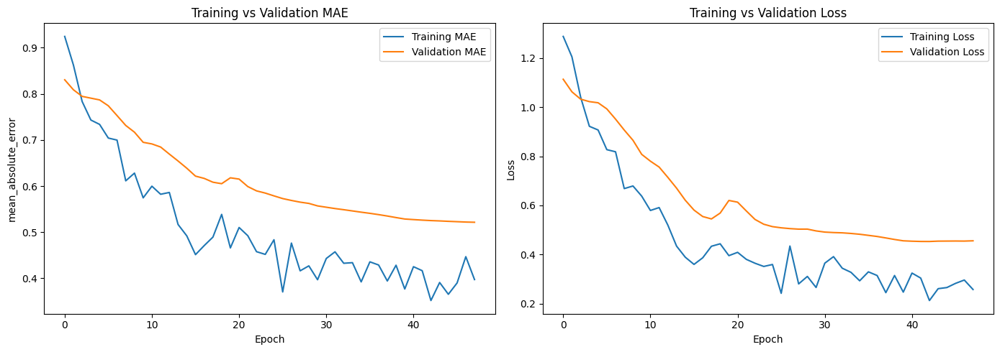

<!DOCTYPE html>


<html lang="en" data-content_root="./" >

  <head>
    <meta charset="utf-8" />
    <meta name="viewport" content="width=device-width, initial-scale=1.0" /><meta name="viewport" content="width=device-width, initial-scale=1" />

    <title>Representation learning and predictive analysis for Football managers &#8212; My sample book</title>
  
  
  
  <script data-cfasync="false">
    document.documentElement.dataset.mode = localStorage.getItem("mode") || "";
    document.documentElement.dataset.theme = localStorage.getItem("theme") || "";
  </script>
  
  <!-- Loaded before other Sphinx assets -->
  <link href="_static/styles/theme.css?digest=dfe6caa3a7d634c4db9b" rel="stylesheet" />
<link href="_static/styles/bootstrap.css?digest=dfe6caa3a7d634c4db9b" rel="stylesheet" />
<link href="_static/styles/pydata-sphinx-theme.css?digest=dfe6caa3a7d634c4db9b" rel="stylesheet" />

  
  <link href="_static/vendor/fontawesome/6.5.2/css/all.min.css?digest=dfe6caa3a7d634c4db9b" rel="stylesheet" />
  <link rel="preload" as="font" type="font/woff2" crossorigin href="_static/vendor/fontawesome/6.5.2/webfonts/fa-solid-900.woff2" />
<link rel="preload" as="font" type="font/woff2" crossorigin href="_static/vendor/fontawesome/6.5.2/webfonts/fa-brands-400.woff2" />
<link rel="preload" as="font" type="font/woff2" crossorigin href="_static/vendor/fontawesome/6.5.2/webfonts/fa-regular-400.woff2" />

    <link rel="stylesheet" type="text/css" href="_static/pygments.css?v=03e43079" />
    <link rel="stylesheet" type="text/css" href="_static/styles/sphinx-book-theme.css?v=eba8b062" />
    <link rel="stylesheet" type="text/css" href="_static/togglebutton.css?v=13237357" />
    <link rel="stylesheet" type="text/css" href="_static/copybutton.css?v=76b2166b" />
    <link rel="stylesheet" type="text/css" href="_static/mystnb.8ecb98da25f57f5357bf6f572d296f466b2cfe2517ffebfabe82451661e28f02.css?v=6644e6bb" />
    <link rel="stylesheet" type="text/css" href="_static/sphinx-thebe.css?v=4fa983c6" />
    <link rel="stylesheet" type="text/css" href="_static/sphinx-design.min.css?v=95c83b7e" />
  
  <!-- Pre-loaded scripts that we'll load fully later -->
  <link rel="preload" as="script" href="_static/scripts/bootstrap.js?digest=dfe6caa3a7d634c4db9b" />
<link rel="preload" as="script" href="_static/scripts/pydata-sphinx-theme.js?digest=dfe6caa3a7d634c4db9b" />
  <script src="_static/vendor/fontawesome/6.5.2/js/all.min.js?digest=dfe6caa3a7d634c4db9b"></script>

    <script src="_static/documentation_options.js?v=9eb32ce0"></script>
    <script src="_static/doctools.js?v=9a2dae69"></script>
    <script src="_static/sphinx_highlight.js?v=dc90522c"></script>
    <script src="_static/clipboard.min.js?v=a7894cd8"></script>
    <script src="_static/copybutton.js?v=f281be69"></script>
    <script src="_static/scripts/sphinx-book-theme.js?v=887ef09a"></script>
    <script>let toggleHintShow = 'Click to show';</script>
    <script>let toggleHintHide = 'Click to hide';</script>
    <script>let toggleOpenOnPrint = 'true';</script>
    <script src="_static/togglebutton.js?v=4a39c7ea"></script>
    <script>var togglebuttonSelector = '.toggle, .admonition.dropdown';</script>
    <script src="_static/design-tabs.js?v=f930bc37"></script>
    <script>const THEBE_JS_URL = "https://unpkg.com/thebe@0.8.2/lib/index.js"; const thebe_selector = ".thebe,.cell"; const thebe_selector_input = "pre"; const thebe_selector_output = ".output, .cell_output"</script>
    <script async="async" src="_static/sphinx-thebe.js?v=c100c467"></script>
    <script>var togglebuttonSelector = '.toggle, .admonition.dropdown';</script>
    <script>const THEBE_JS_URL = "https://unpkg.com/thebe@0.8.2/lib/index.js"; const thebe_selector = ".thebe,.cell"; const thebe_selector_input = "pre"; const thebe_selector_output = ".output, .cell_output"</script>
    <script>DOCUMENTATION_OPTIONS.pagename = 'sport_analytics';</script>
    <script src="https://cdnjs.cloudflare.com/ajax/libs/require.js/2.3.4/require.min.js"></script>
    <link rel="index" title="Index" href="genindex.html" />
    <link rel="search" title="Search" href="search.html" />
    <link rel="next" title="Markdown Files" href="markdown.html" />
    <link rel="prev" title="Applied Data Science: Exploring Domains and Careers" href="intro.html" />
  <meta name="viewport" content="width=device-width, initial-scale=1"/>
  <meta name="docsearch:language" content="en"/>
  </head>
  
  
  <body data-bs-spy="scroll" data-bs-target=".bd-toc-nav" data-offset="180" data-bs-root-margin="0px 0px -60%" data-default-mode="">

  
  
  <div id="pst-skip-link" class="skip-link d-print-none"><a href="#main-content">Skip to main content</a></div>
  
  <div id="pst-scroll-pixel-helper"></div>
  
  <button type="button" class="btn rounded-pill" id="pst-back-to-top">
    <i class="fa-solid fa-arrow-up"></i>Back to top</button>

  
  <input type="checkbox"
          class="sidebar-toggle"
          id="pst-primary-sidebar-checkbox"/>
  <label class="overlay overlay-primary" for="pst-primary-sidebar-checkbox"></label>
  
  <input type="checkbox"
          class="sidebar-toggle"
          id="pst-secondary-sidebar-checkbox"/>
  <label class="overlay overlay-secondary" for="pst-secondary-sidebar-checkbox"></label>
  
  <div class="search-button__wrapper">
    <div class="search-button__overlay"></div>
    <div class="search-button__search-container">
<form class="bd-search d-flex align-items-center"
      action="search.html"
      method="get">
  <i class="fa-solid fa-magnifying-glass"></i>
  <input type="search"
         class="form-control"
         name="q"
         id="search-input"
         placeholder="Search this book..."
         aria-label="Search this book..."
         autocomplete="off"
         autocorrect="off"
         autocapitalize="off"
         spellcheck="false"/>
  <span class="search-button__kbd-shortcut"><kbd class="kbd-shortcut__modifier">Ctrl</kbd>+<kbd>K</kbd></span>
</form></div>
  </div>

  <div class="pst-async-banner-revealer d-none">
  <aside id="bd-header-version-warning" class="d-none d-print-none" aria-label="Version warning"></aside>
</div>

  
    <header class="bd-header navbar navbar-expand-lg bd-navbar d-print-none">
    </header>
  

  <div class="bd-container">
    <div class="bd-container__inner bd-page-width">
      
      
      
      <div class="bd-sidebar-primary bd-sidebar">
        

  
  <div class="sidebar-header-items sidebar-primary__section">
    
    
    
    
  </div>
  
    <div class="sidebar-primary-items__start sidebar-primary__section">
        <div class="sidebar-primary-item">

  
    
  

<a class="navbar-brand logo" href="intro.html">
  
  
  
  
  
    
    
      
    
    
    
    <script>document.write(``);</script>
  
  
</a></div>
        <div class="sidebar-primary-item">

 <script>
 document.write(`
   <button class="btn search-button-field search-button__button" title="Search" aria-label="Search" data-bs-placement="bottom" data-bs-toggle="tooltip">
    <i class="fa-solid fa-magnifying-glass"></i>
    <span class="search-button__default-text">Search</span>
    <span class="search-button__kbd-shortcut"><kbd class="kbd-shortcut__modifier">Ctrl</kbd>+<kbd class="kbd-shortcut__modifier">K</kbd></span>
   </button>
 `);
 </script></div>
        <div class="sidebar-primary-item"><nav class="bd-links bd-docs-nav" aria-label="Main">
    <div class="bd-toc-item navbar-nav active">
        
        <ul class="nav bd-sidenav bd-sidenav__home-link">
            <li class="toctree-l1">
                <a class="reference internal" href="intro.html">
                    Applied Data Science: Exploring Domains and Careers
                </a>
            </li>
        </ul>
        <ul class="current nav bd-sidenav">
<li class="toctree-l1 current active"><a class="current reference internal" href="#">Representation learning and predictive analysis for Football managers</a></li>
<li class="toctree-l1"><a class="reference internal" href="markdown.html">Markdown Files</a></li>
<li class="toctree-l1"><a class="reference internal" href="notebooks.html">Content with notebooks</a></li>
<li class="toctree-l1"><a class="reference internal" href="markdown-notebooks.html">Notebooks with MyST Markdown</a></li>
</ul>

    </div>
</nav></div>
    </div>
  
  
  <div class="sidebar-primary-items__end sidebar-primary__section">
  </div>
  
  <div id="rtd-footer-container"></div>


      </div>
      
      <main id="main-content" class="bd-main" role="main">
        
        

<div class="sbt-scroll-pixel-helper"></div>

          <div class="bd-content">
            <div class="bd-article-container">
              
              <div class="bd-header-article d-print-none">
<div class="header-article-items header-article__inner">
  
    <div class="header-article-items__start">
      
        <div class="header-article-item"><button class="sidebar-toggle primary-toggle btn btn-sm" title="Toggle primary sidebar" data-bs-placement="bottom" data-bs-toggle="tooltip">
  <span class="fa-solid fa-bars"></span>
</button></div>
      
    </div>
  
  
    <div class="header-article-items__end">
      
        <div class="header-article-item">

<div class="article-header-buttons">


<div class="dropdown dropdown-source-buttons">
  <button class="btn dropdown-toggle" type="button" data-bs-toggle="dropdown" aria-expanded="false" aria-label="Source repositories">
    <i class="fab fa-github"></i>
  </button>
  <ul class="dropdown-menu">
      
      
      
      <li><a href="https://github.com/executablebooks/jupyter-book" target="_blank"
   class="btn btn-sm btn-source-repository-button dropdown-item"
   title="Source repository"
   data-bs-placement="left" data-bs-toggle="tooltip"
>
  

<span class="btn__icon-container">
  <i class="fab fa-github"></i>
  </span>
<span class="btn__text-container">Repository</span>
</a>
</li>
      
      
      
      
      <li><a href="https://github.com/executablebooks/jupyter-book/issues/new?title=Issue%20on%20page%20%2Fsport_analytics.html&body=Your%20issue%20content%20here." target="_blank"
   class="btn btn-sm btn-source-issues-button dropdown-item"
   title="Open an issue"
   data-bs-placement="left" data-bs-toggle="tooltip"
>
  

<span class="btn__icon-container">
  <i class="fas fa-lightbulb"></i>
  </span>
<span class="btn__text-container">Open issue</span>
</a>
</li>
      
  </ul>
</div>


<div class="dropdown dropdown-download-buttons">
  <button class="btn dropdown-toggle" type="button" data-bs-toggle="dropdown" aria-expanded="false" aria-label="Download this page">
    <i class="fas fa-download"></i>
  </button>
  <ul class="dropdown-menu">
      
      
      
      <li><a href="_sources/sport_analytics.ipynb" target="_blank"
   class="btn btn-sm btn-download-source-button dropdown-item"
   title="Download source file"
   data-bs-placement="left" data-bs-toggle="tooltip"
>
  

<span class="btn__icon-container">
  <i class="fas fa-file"></i>
  </span>
<span class="btn__text-container">.ipynb</span>
</a>
</li>
      
      
      
      
      <li>
<button onclick="window.print()"
  class="btn btn-sm btn-download-pdf-button dropdown-item"
  title="Print to PDF"
  data-bs-placement="left" data-bs-toggle="tooltip"
>
  

<span class="btn__icon-container">
  <i class="fas fa-file-pdf"></i>
  </span>
<span class="btn__text-container">.pdf</span>
</button>
</li>
      
  </ul>
</div>


<button onclick="toggleFullScreen()"
  class="btn btn-sm btn-fullscreen-button"
  title="Fullscreen mode"
  data-bs-placement="bottom" data-bs-toggle="tooltip"
>
  

<span class="btn__icon-container">
  <i class="fas fa-expand"></i>
  </span>

</button>


<script>
document.write(`
  <button class="btn btn-sm nav-link pst-navbar-icon theme-switch-button" title="light/dark" aria-label="light/dark" data-bs-placement="bottom" data-bs-toggle="tooltip">
    <i class="theme-switch fa-solid fa-sun fa-lg" data-mode="light"></i>
    <i class="theme-switch fa-solid fa-moon fa-lg" data-mode="dark"></i>
    <i class="theme-switch fa-solid fa-circle-half-stroke fa-lg" data-mode="auto"></i>
  </button>
`);
</script>


<script>
document.write(`
  <button class="btn btn-sm pst-navbar-icon search-button search-button__button" title="Search" aria-label="Search" data-bs-placement="bottom" data-bs-toggle="tooltip">
    <i class="fa-solid fa-magnifying-glass fa-lg"></i>
  </button>
`);
</script>
<button class="sidebar-toggle secondary-toggle btn btn-sm" title="Toggle secondary sidebar" data-bs-placement="bottom" data-bs-toggle="tooltip">
    <span class="fa-solid fa-list"></span>
</button>
</div></div>
      
    </div>
  
</div>
</div>
              
              

<div id="jb-print-docs-body" class="onlyprint">
    <h1>Representation learning and predictive analysis for Football managers</h1>
    <!-- Table of contents -->
    <div id="print-main-content">
        <div id="jb-print-toc">
            
            <div>
                <h2> Contents </h2>
            </div>
            <nav aria-label="Page">
                <ul class="visible nav section-nav flex-column">
<li class="toc-h2 nav-item toc-entry"><a class="reference internal nav-link" href="#the-challenge">The challenge</a></li>
<li class="toc-h2 nav-item toc-entry"><a class="reference internal nav-link" href="#the-plan">The plan</a></li>
<li class="toc-h2 nav-item toc-entry"><a class="reference internal nav-link" href="#generate-synthetic-teams-and-games">Generate synthetic teams and games</a><ul class="nav section-nav flex-column">
<li class="toc-h3 nav-item toc-entry"><a class="reference internal nav-link" href="#calculating-team-s-strength-based-on-players-individual-strengths-and-rule-based-interactions">Calculating team’s strength based on players individual strengths and rule-based interactions</a></li>
<li class="toc-h3 nav-item toc-entry"><a class="reference internal nav-link" href="#generating-the-teams-friend-pairs-triplets-and-skills-pairs-triplets">Generating the teams, friend pairs/triplets and skills pairs/triplets</a></li>
</ul>
</li>
<li class="toc-h2 nav-item toc-entry"><a class="reference internal nav-link" href="#building-a-model">Building a model</a></li>
<li class="toc-h2 nav-item toc-entry"><a class="reference internal nav-link" href="#training-the-model">Training the model</a></li>
<li class="toc-h2 nav-item toc-entry"><a class="reference internal nav-link" href="#extracting-embeddings-of-players">Extracting embeddings of players</a><ul class="nav section-nav flex-column">
<li class="toc-h3 nav-item toc-entry"><a class="reference internal nav-link" href="#umap-and-visualizing-players-in-3d">UMAP and visualizing players in 3D</a></li>
<li class="toc-h3 nav-item toc-entry"><a class="reference internal nav-link" href="#calculate-correlation-of-the-embeddings-with-the-original-base-strengths">Calculate correlation of the embeddings with the original base strengths</a></li>
</ul>
</li>
</ul>
            </nav>
        </div>
    </div>
</div>

              
                
<div id="searchbox"></div>
                <article class="bd-article">
                  
  <section class="tex2jax_ignore mathjax_ignore" id="representation-learning-and-predictive-analysis-for-football-managers">
<h1>Representation learning and predictive analysis for Football managers<a class="headerlink" href="#representation-learning-and-predictive-analysis-for-football-managers" title="Link to this heading">#</a></h1>
<p>In this chapter we are going to try to model members of the amateur football club. This is related to one of the author’s contributions to a wellbeing of a local football community. The ultimate goal is to split membors into a reasonable teams so that it is as enjoyable and competitive from sport’s perspoective as possible.</p>
<section id="the-challenge">
<h2>The challenge<a class="headerlink" href="#the-challenge" title="Link to this heading">#</a></h2>
<p>For every Sunday’s game we organise a poll to see who is joining a game. Coomon agreement is that we need minimum 10 and maximum 18 players - so it means we have a variable size teams.</p>
<ul class="simple">
<li><p>even though we have started to collect data for our game we still have around 20 games recorded. Distribution of the players also changed over the course of the recoring period so we have even less data for every single player.</p></li>
</ul>
</section>
<section id="the-plan">
<h2>The plan<a class="headerlink" href="#the-plan" title="Link to this heading">#</a></h2>
<div class="cell docutils container">
<div class="cell_input docutils container">
<div class="highlight-ipython3 notranslate"><div class="highlight"><pre><span></span><span class="kn">import</span><span class="w"> </span><span class="nn">tensorflow</span><span class="w"> </span><span class="k">as</span><span class="w"> </span><span class="nn">tf</span>
<span class="kn">from</span><span class="w"> </span><span class="nn">tensorflow.keras</span><span class="w"> </span><span class="kn">import</span> <span class="n">layers</span><span class="p">,</span> <span class="n">Model</span><span class="p">,</span> <span class="n">Input</span><span class="p">,</span> <span class="n">initializers</span>
<span class="kn">from</span><span class="w"> </span><span class="nn">datetime</span><span class="w"> </span><span class="kn">import</span> <span class="n">date</span>
<span class="kn">import</span><span class="w"> </span><span class="nn">numpy</span><span class="w"> </span><span class="k">as</span><span class="w"> </span><span class="nn">np</span>
<span class="kn">import</span><span class="w"> </span><span class="nn">os</span>

    
<span class="kn">from</span><span class="w"> </span><span class="nn">competition_manager</span><span class="w"> </span><span class="kn">import</span> <span class="o">*</span>
</pre></div>
</div>
</div>
</div>
<div class="cell docutils container">
<div class="cell_input docutils container">
<div class="highlight-ipython3 notranslate"><div class="highlight"><pre><span></span><span class="kn">import</span><span class="w"> </span><span class="nn">random</span>


<span class="k">def</span><span class="w"> </span><span class="nf">set_seed</span><span class="p">(</span><span class="n">seed</span><span class="o">=</span><span class="mi">42</span><span class="p">):</span>
    <span class="n">np</span><span class="o">.</span><span class="n">random</span><span class="o">.</span><span class="n">seed</span><span class="p">(</span><span class="n">seed</span><span class="p">)</span>                  <span class="c1"># Fix NumPy random seed</span>
    <span class="n">random</span><span class="o">.</span><span class="n">seed</span><span class="p">(</span><span class="n">seed</span><span class="p">)</span>                     <span class="c1"># Fix Python built-in random seed</span>
    <span class="n">tf</span><span class="o">.</span><span class="n">random</span><span class="o">.</span><span class="n">set_seed</span><span class="p">(</span><span class="n">seed</span><span class="p">)</span>              <span class="c1"># Fix TensorFlow random seed</span>

    <span class="c1"># Optional but recommended: configure TensorFlow for deterministic ops</span>
    <span class="n">os</span><span class="o">.</span><span class="n">environ</span><span class="p">[</span><span class="s1">&#39;TF_DETERMINISTIC_OPS&#39;</span><span class="p">]</span> <span class="o">=</span> <span class="s1">&#39;1&#39;</span>

<span class="c1"># Call this function at the very start, before building or training your model</span>
<span class="n">seed_value</span> <span class="o">=</span> <span class="mi">42</span>
<span class="n">set_seed</span><span class="p">(</span><span class="n">seed_value</span><span class="p">)</span>
</pre></div>
</div>
</div>
</div>
</section>
<section id="generate-synthetic-teams-and-games">
<h2>Generate synthetic teams and games<a class="headerlink" href="#generate-synthetic-teams-and-games" title="Link to this heading">#</a></h2>
<section id="calculating-team-s-strength-based-on-players-individual-strengths-and-rule-based-interactions">
<h3>Calculating team’s strength based on players individual strengths and rule-based interactions<a class="headerlink" href="#calculating-team-s-strength-based-on-players-individual-strengths-and-rule-based-interactions" title="Link to this heading">#</a></h3>
<div class="cell docutils container">
<div class="cell_input docutils container">
<div class="highlight-ipython3 notranslate"><div class="highlight"><pre><span></span><span class="k">def</span><span class="w"> </span><span class="nf">calculate_team_strength</span><span class="p">(</span><span class="n">team_players</span><span class="p">):</span>
    <span class="c1"># Base strength sum</span>
    <span class="n">strength</span> <span class="o">=</span> <span class="n">player_strengths</span><span class="p">[</span><span class="n">team_players</span><span class="p">]</span><span class="o">.</span><span class="n">sum</span><span class="p">()</span>
    <span class="nb">print</span><span class="p">(</span><span class="sa">f</span><span class="s2">&quot;Base strength of team </span><span class="si">{</span><span class="n">team_players</span><span class="si">}</span><span class="s2">: </span><span class="si">{</span><span class="n">strength</span><span class="si">:</span><span class="s2">.4f</span><span class="si">}</span><span class="s2">&quot;</span><span class="p">)</span>
    
    <span class="c1"># Compute favorite player boost (fixed)</span>
    <span class="k">for</span> <span class="n">i</span><span class="p">,</span> <span class="n">pair</span> <span class="ow">in</span> <span class="nb">enumerate</span><span class="p">(</span><span class="n">friend_pairs</span><span class="p">):</span>
        <span class="k">if</span> <span class="nb">all</span><span class="p">(</span><span class="n">player</span> <span class="ow">in</span> <span class="n">team_players</span> <span class="k">for</span> <span class="n">player</span> <span class="ow">in</span> <span class="n">pair</span><span class="p">):</span>
            <span class="n">boost</span> <span class="o">=</span> <span class="n">friend_pairs_boost</span><span class="p">[</span><span class="n">i</span><span class="p">]</span>
            <span class="n">strength</span> <span class="o">+=</span> <span class="n">boost</span>
            <span class="nb">print</span><span class="p">(</span><span class="sa">f</span><span class="s2">&quot;Favorite pair boost applied for players </span><span class="si">{</span><span class="n">pair</span><span class="si">}</span><span class="s2">: +</span><span class="si">{</span><span class="n">boost</span><span class="si">:</span><span class="s2">.4f</span><span class="si">}</span><span class="s2">, total strength now </span><span class="si">{</span><span class="n">strength</span><span class="si">:</span><span class="s2">.4f</span><span class="si">}</span><span class="s2">&quot;</span><span class="p">)</span>
    <span class="k">for</span> <span class="n">i</span><span class="p">,</span> <span class="n">triplet</span> <span class="ow">in</span> <span class="nb">enumerate</span><span class="p">(</span><span class="n">friend_triplets</span><span class="p">):</span>
        <span class="k">if</span> <span class="nb">all</span><span class="p">(</span><span class="n">player</span> <span class="ow">in</span> <span class="n">team_players</span> <span class="k">for</span> <span class="n">player</span> <span class="ow">in</span> <span class="n">triplet</span><span class="p">):</span>
            <span class="n">boost</span> <span class="o">=</span> <span class="n">friend_triplets_boost</span><span class="p">[</span><span class="n">i</span><span class="p">]</span>
            <span class="n">strength</span> <span class="o">+=</span> <span class="n">boost</span>
            <span class="nb">print</span><span class="p">(</span><span class="sa">f</span><span class="s2">&quot;Favorite triplet boost applied for players </span><span class="si">{</span><span class="n">triplet</span><span class="si">}</span><span class="s2">: +</span><span class="si">{</span><span class="n">boost</span><span class="si">:</span><span class="s2">.4f</span><span class="si">}</span><span class="s2">, total strength now </span><span class="si">{</span><span class="n">strength</span><span class="si">:</span><span class="s2">.4f</span><span class="si">}</span><span class="s2">&quot;</span><span class="p">)</span>
    
    <span class="c1"># Compute skills boost correlated with players&#39; average strength</span>
    <span class="k">for</span> <span class="n">i</span><span class="p">,</span> <span class="n">pair</span> <span class="ow">in</span> <span class="nb">enumerate</span><span class="p">(</span><span class="n">skilled_pairs</span><span class="p">):</span>
        <span class="k">if</span> <span class="nb">all</span><span class="p">(</span><span class="n">player</span> <span class="ow">in</span> <span class="n">team_players</span> <span class="k">for</span> <span class="n">player</span> <span class="ow">in</span> <span class="n">pair</span><span class="p">):</span>
            <span class="n">avg_strength</span> <span class="o">=</span> <span class="n">player_strengths</span><span class="p">[</span><span class="nb">list</span><span class="p">(</span><span class="n">pair</span><span class="p">)]</span><span class="o">.</span><span class="n">mean</span><span class="p">()</span>
            <span class="n">boost</span> <span class="o">=</span> <span class="n">skilled_pairs_boost</span><span class="p">[</span><span class="n">i</span><span class="p">]</span> <span class="o">*</span> <span class="n">avg_strength</span>
            <span class="n">strength</span> <span class="o">+=</span> <span class="n">boost</span>
            <span class="nb">print</span><span class="p">(</span><span class="sa">f</span><span class="s2">&quot;Skills pair boost for players </span><span class="si">{</span><span class="n">pair</span><span class="si">}</span><span class="s2">: avg strength </span><span class="si">{</span><span class="n">avg_strength</span><span class="si">:</span><span class="s2">.4f</span><span class="si">}</span><span class="s2"> * boost factor </span><span class="si">{</span><span class="n">skilled_pairs_boost</span><span class="p">[</span><span class="n">i</span><span class="p">]</span><span class="si">:</span><span class="s2">.4f</span><span class="si">}</span><span class="s2"> = +</span><span class="si">{</span><span class="n">boost</span><span class="si">:</span><span class="s2">.4f</span><span class="si">}</span><span class="s2">, total strength now </span><span class="si">{</span><span class="n">strength</span><span class="si">:</span><span class="s2">.4f</span><span class="si">}</span><span class="s2">&quot;</span><span class="p">)</span>
    
    <span class="k">for</span> <span class="n">i</span><span class="p">,</span> <span class="n">triplet</span> <span class="ow">in</span> <span class="nb">enumerate</span><span class="p">(</span><span class="n">skilled_triplets</span><span class="p">):</span>
        <span class="k">if</span> <span class="nb">all</span><span class="p">(</span><span class="n">player</span> <span class="ow">in</span> <span class="n">team_players</span> <span class="k">for</span> <span class="n">player</span> <span class="ow">in</span> <span class="n">triplet</span><span class="p">):</span>
            <span class="n">avg_strength</span> <span class="o">=</span> <span class="n">player_strengths</span><span class="p">[</span><span class="nb">list</span><span class="p">(</span><span class="n">triplet</span><span class="p">)]</span><span class="o">.</span><span class="n">mean</span><span class="p">()</span>
            <span class="n">boost</span> <span class="o">=</span> <span class="n">skilled_triplets_boost</span><span class="p">[</span><span class="n">i</span><span class="p">]</span> <span class="o">*</span> <span class="n">avg_strength</span>
            <span class="n">strength</span> <span class="o">+=</span> <span class="n">boost</span>
            <span class="nb">print</span><span class="p">(</span><span class="sa">f</span><span class="s2">&quot;Skills triplet boost for players </span><span class="si">{</span><span class="n">triplet</span><span class="si">}</span><span class="s2">: avg strength </span><span class="si">{</span><span class="n">avg_strength</span><span class="si">:</span><span class="s2">.4f</span><span class="si">}</span><span class="s2"> * boost factor </span><span class="si">{</span><span class="n">skilled_triplets_boost</span><span class="p">[</span><span class="n">i</span><span class="p">]</span><span class="si">:</span><span class="s2">.4f</span><span class="si">}</span><span class="s2"> = +</span><span class="si">{</span><span class="n">boost</span><span class="si">:</span><span class="s2">.4f</span><span class="si">}</span><span class="s2">, total strength now </span><span class="si">{</span><span class="n">strength</span><span class="si">:</span><span class="s2">.4f</span><span class="si">}</span><span class="s2">&quot;</span><span class="p">)</span>
    
    <span class="k">return</span> <span class="n">strength</span>
</pre></div>
</div>
</div>
</div>
</section>
<section id="generating-the-teams-friend-pairs-triplets-and-skills-pairs-triplets">
<h3>Generating the teams, friend pairs/triplets and skills pairs/triplets<a class="headerlink" href="#generating-the-teams-friend-pairs-triplets-and-skills-pairs-triplets" title="Link to this heading">#</a></h3>
<div class="cell docutils container">
<div class="cell_input docutils container">
<div class="highlight-ipython3 notranslate"><div class="highlight"><pre><span></span><span class="n">np</span><span class="o">.</span><span class="n">random</span><span class="o">.</span><span class="n">seed</span><span class="p">(</span><span class="mi">42</span><span class="p">)</span>  <span class="c1"># for reproducibility</span>

<span class="n">NUM_PLAYERS</span> <span class="o">=</span> <span class="mi">30</span>  <span class="c1"># player 0 is ignore/masked and 1 is added to account for this</span>
<span class="n">MIN_TEAM_SIZE</span> <span class="o">=</span> <span class="mi">5</span>
<span class="n">MAX_TEAM_SIZE</span> <span class="o">=</span> <span class="mi">9</span>
<span class="n">NUM_GAMES</span> <span class="o">=</span> <span class="mi">100</span>

<span class="c1"># 1. Generate players&#39; strengths: single float number [0, 1]</span>
<span class="n">player_strengths</span> <span class="o">=</span> <span class="n">np</span><span class="o">.</span><span class="n">random</span><span class="o">.</span><span class="n">rand</span><span class="p">(</span><span class="n">NUM_PLAYERS</span> <span class="o">+</span> <span class="mi">1</span><span class="p">)</span> <span class="c1"># player 0 is ignore/masked </span>

<span class="c1"># 2. Generate favorite player pairs and triplets (friends)</span>
<span class="n">num_friend_pairs</span> <span class="o">=</span> <span class="mi">10</span>
<span class="n">num_friend_triplets</span> <span class="o">=</span> <span class="mi">5</span>

<span class="c1"># Randomly select unique pairs</span>
<span class="n">friend_pairs</span> <span class="o">=</span> <span class="p">[</span><span class="nb">tuple</span><span class="p">(</span><span class="n">np</span><span class="o">.</span><span class="n">random</span><span class="o">.</span><span class="n">choice</span><span class="p">(</span><span class="n">np</span><span class="o">.</span><span class="n">arange</span><span class="p">(</span><span class="mi">1</span><span class="p">,</span> <span class="n">NUM_PLAYERS</span> <span class="o">+</span><span class="mi">1</span><span class="p">),</span> <span class="n">size</span><span class="o">=</span><span class="mi">2</span><span class="p">,</span> <span class="n">replace</span><span class="o">=</span><span class="kc">False</span><span class="p">))</span> <span class="k">for</span> <span class="n">_</span> <span class="ow">in</span> <span class="nb">range</span><span class="p">(</span><span class="n">num_friend_pairs</span><span class="p">)]</span>
<span class="n">friend_pairs_boost</span> <span class="o">=</span> <span class="n">np</span><span class="o">.</span><span class="n">random</span><span class="o">.</span><span class="n">uniform</span><span class="p">(</span><span class="mf">0.05</span><span class="p">,</span> <span class="mf">0.15</span><span class="p">,</span> <span class="n">size</span><span class="o">=</span><span class="n">num_friend_pairs</span><span class="p">)</span>  <span class="c1"># small boost</span>

<span class="c1"># Randomly select unique triplets</span>
<span class="n">friend_triplets</span> <span class="o">=</span> <span class="p">[</span><span class="nb">tuple</span><span class="p">(</span><span class="n">np</span><span class="o">.</span><span class="n">random</span><span class="o">.</span><span class="n">choice</span><span class="p">(</span><span class="n">np</span><span class="o">.</span><span class="n">arange</span><span class="p">(</span><span class="mi">1</span><span class="p">,</span> <span class="n">NUM_PLAYERS</span> <span class="o">+</span><span class="mi">1</span><span class="p">),</span> <span class="n">size</span><span class="o">=</span><span class="mi">3</span><span class="p">,</span> <span class="n">replace</span><span class="o">=</span><span class="kc">False</span><span class="p">))</span> <span class="k">for</span> <span class="n">_</span> <span class="ow">in</span> <span class="nb">range</span><span class="p">(</span><span class="n">num_friend_triplets</span><span class="p">)]</span>
<span class="n">friend_triplets_boost</span> <span class="o">=</span> <span class="n">np</span><span class="o">.</span><span class="n">random</span><span class="o">.</span><span class="n">uniform</span><span class="p">(</span><span class="mf">0.1</span><span class="p">,</span> <span class="mf">0.25</span><span class="p">,</span> <span class="n">size</span><span class="o">=</span><span class="n">num_friend_triplets</span><span class="p">)</span>  <span class="c1"># larger boost</span>

<span class="c1"># 3. Generate skilled pairs and triplets (high skill synergy)</span>
<span class="n">num_skilled_pairs</span> <span class="o">=</span> <span class="mi">8</span>
<span class="n">num_skilled_triplets</span> <span class="o">=</span> <span class="mi">4</span>

<span class="n">skilled_pairs</span> <span class="o">=</span> <span class="p">[</span><span class="nb">tuple</span><span class="p">(</span><span class="n">np</span><span class="o">.</span><span class="n">random</span><span class="o">.</span><span class="n">choice</span><span class="p">(</span><span class="n">np</span><span class="o">.</span><span class="n">arange</span><span class="p">(</span><span class="mi">1</span><span class="p">,</span> <span class="n">NUM_PLAYERS</span> <span class="o">+</span> <span class="mi">1</span><span class="p">),</span> <span class="n">size</span><span class="o">=</span><span class="mi">2</span><span class="p">,</span> <span class="n">replace</span><span class="o">=</span><span class="kc">False</span><span class="p">))</span> <span class="k">for</span> <span class="n">_</span> <span class="ow">in</span> <span class="nb">range</span><span class="p">(</span><span class="n">num_skilled_pairs</span><span class="p">)]</span>
<span class="n">skilled_pairs_boost</span> <span class="o">=</span> <span class="n">np</span><span class="o">.</span><span class="n">random</span><span class="o">.</span><span class="n">uniform</span><span class="p">(</span><span class="mf">0.1</span><span class="p">,</span> <span class="mf">0.2</span><span class="p">,</span> <span class="n">size</span><span class="o">=</span><span class="n">num_skilled_pairs</span><span class="p">)</span>  <span class="c1"># moderate boost</span>

<span class="n">skilled_triplets</span> <span class="o">=</span> <span class="p">[</span><span class="nb">tuple</span><span class="p">(</span><span class="n">np</span><span class="o">.</span><span class="n">random</span><span class="o">.</span><span class="n">choice</span><span class="p">(</span><span class="n">np</span><span class="o">.</span><span class="n">arange</span><span class="p">(</span><span class="mi">1</span><span class="p">,</span> <span class="n">NUM_PLAYERS</span> <span class="o">+</span> <span class="mi">1</span><span class="p">),</span> <span class="n">size</span><span class="o">=</span><span class="mi">3</span><span class="p">,</span> <span class="n">replace</span><span class="o">=</span><span class="kc">False</span><span class="p">))</span> <span class="k">for</span> <span class="n">_</span> <span class="ow">in</span> <span class="nb">range</span><span class="p">(</span><span class="n">num_skilled_triplets</span><span class="p">)]</span>
<span class="n">skilled_triplets_boost</span> <span class="o">=</span> <span class="n">np</span><span class="o">.</span><span class="n">random</span><span class="o">.</span><span class="n">uniform</span><span class="p">(</span><span class="mf">0.15</span><span class="p">,</span> <span class="mf">0.3</span><span class="p">,</span> <span class="n">size</span><span class="o">=</span><span class="n">num_skilled_triplets</span><span class="p">)</span>  <span class="c1"># strong boost</span>

<span class="c1"># 2. Prepare arrays to hold the dataset</span>
<span class="n">teamA_data</span> <span class="o">=</span> <span class="n">np</span><span class="o">.</span><span class="n">zeros</span><span class="p">((</span><span class="n">NUM_GAMES</span><span class="p">,</span> <span class="n">MAX_TEAM_SIZE</span><span class="p">),</span> <span class="n">dtype</span><span class="o">=</span><span class="nb">int</span><span class="p">)</span>
<span class="n">teamB_data</span> <span class="o">=</span> <span class="n">np</span><span class="o">.</span><span class="n">zeros</span><span class="p">((</span><span class="n">NUM_GAMES</span><span class="p">,</span> <span class="n">MAX_TEAM_SIZE</span><span class="p">),</span> <span class="n">dtype</span><span class="o">=</span><span class="nb">int</span><span class="p">)</span>
<span class="n">labels</span> <span class="o">=</span> <span class="n">np</span><span class="o">.</span><span class="n">zeros</span><span class="p">(</span><span class="n">NUM_GAMES</span><span class="p">)</span>

<span class="k">def</span><span class="w"> </span><span class="nf">drop_zeroes_for_sum</span><span class="p">(</span><span class="n">players_strengths</span><span class="p">):</span>
    <span class="k">return</span> <span class="n">players_strengths</span><span class="p">[</span><span class="n">players_strengths</span> <span class="o">!=</span><span class="mi">0</span><span class="p">]</span>

<span class="k">for</span> <span class="n">game_i</span> <span class="ow">in</span> <span class="nb">range</span><span class="p">(</span><span class="n">NUM_GAMES</span><span class="p">):</span>
    <span class="c1"># Random sizes for both teams in [MIN_TEAM_SIZE, MAX_TEAM_SIZE]</span>

    <span class="n">team_size</span> <span class="o">=</span> <span class="n">np</span><span class="o">.</span><span class="n">random</span><span class="o">.</span><span class="n">randint</span><span class="p">(</span><span class="n">MIN_TEAM_SIZE</span><span class="p">,</span> <span class="n">MAX_TEAM_SIZE</span> <span class="o">+</span> <span class="mi">1</span><span class="p">)</span>

    <span class="c1"># Randomly sample distinct players for each team (sampling with replacement allowed for simplicity)</span>
    <span class="c1"># To avoid overlap if needed: sample without replacement from full 32 for both teams combined,</span>
    <span class="c1"># here assuming players can appear on both teams (as per original conversation)</span>
    <span class="c1"># teamA_players = np.random.choice(NUM_PLAYERS, size=teamA_size, replace=False)</span>
    <span class="c1"># teamB_players = np.random.choice(NUM_PLAYERS, size=teamB_size, replace=False)</span>
    
    <span class="c1"># Shuffle all players and split into two disjoint teams</span>
    <span class="n">all_players</span> <span class="o">=</span> <span class="n">np</span><span class="o">.</span><span class="n">random</span><span class="o">.</span><span class="n">permutation</span><span class="p">(</span><span class="n">np</span><span class="o">.</span><span class="n">arange</span><span class="p">(</span><span class="mi">1</span><span class="p">,</span> <span class="n">NUM_PLAYERS</span> <span class="o">+</span> <span class="mi">1</span><span class="p">))</span>
    <span class="n">teamA_players</span> <span class="o">=</span> <span class="n">all_players</span><span class="p">[:</span><span class="n">team_size</span><span class="p">]</span>
    <span class="n">teamB_players</span> <span class="o">=</span> <span class="n">all_players</span><span class="p">[</span><span class="n">team_size</span><span class="p">:</span><span class="mi">2</span><span class="o">*</span><span class="n">team_size</span><span class="p">]</span>
    
    <span class="nb">print</span><span class="p">(</span><span class="sa">f</span><span class="s2">&quot;Game # </span><span class="si">{</span><span class="n">game_i</span><span class="si">}</span><span class="s2"> evaluation: &quot;</span><span class="p">)</span>
    <span class="c1"># Compute team strengths as sum of player strengths</span>
    <span class="n">teamA_strength</span> <span class="o">=</span> <span class="n">calculate_team_strength</span><span class="p">(</span><span class="n">teamA_players</span><span class="p">)</span>
    <span class="n">teamB_strength</span> <span class="o">=</span> <span class="n">calculate_team_strength</span><span class="p">(</span><span class="n">teamB_players</span><span class="p">)</span>
    <span class="nb">print</span><span class="p">(</span><span class="sa">f</span><span class="s2">&quot;=&quot;</span> <span class="o">*</span> <span class="mi">50</span><span class="p">)</span>
    
    <span class="c1"># print(f&quot;Team A strengths {player_strengths[teamA_players]} Total: {teamA_strength}&quot;)</span>

    <span class="c1"># Calculate match outcome: 1 if Team A wins, 0 if Team B wins</span>
    <span class="c1"># Add small noise to simulate unpredictability</span>
    <span class="n">outcome</span> <span class="o">=</span> <span class="n">teamA_strength</span> <span class="o">-</span> <span class="n">teamB_strength</span> <span class="o">+</span> <span class="n">np</span><span class="o">.</span><span class="n">random</span><span class="o">.</span><span class="n">normal</span><span class="p">(</span><span class="n">scale</span><span class="o">=</span><span class="mf">0.1</span><span class="p">)</span>
    <span class="n">labels</span><span class="p">[</span><span class="n">game_i</span><span class="p">]</span> <span class="o">=</span> <span class="n">outcome</span>

    <span class="c1"># Pad teams to max size using zeros (which corresponds to masked player)</span>
    <span class="n">teamA_data</span><span class="p">[</span><span class="n">game_i</span><span class="p">,</span> <span class="p">:</span><span class="n">team_size</span><span class="p">]</span> <span class="o">=</span> <span class="n">teamA_players</span>
    <span class="n">teamB_data</span><span class="p">[</span><span class="n">game_i</span><span class="p">,</span> <span class="p">:</span><span class="n">team_size</span><span class="p">]</span> <span class="o">=</span> <span class="n">teamB_players</span>

<span class="nb">print</span><span class="p">(</span><span class="s2">&quot;player_strengths shape:&quot;</span><span class="p">,</span> <span class="n">player_strengths</span><span class="o">.</span><span class="n">shape</span><span class="p">)</span>
<span class="nb">print</span><span class="p">(</span><span class="s2">&quot;teamA_data shape:&quot;</span><span class="p">,</span> <span class="n">teamA_data</span><span class="o">.</span><span class="n">shape</span><span class="p">)</span>
<span class="nb">print</span><span class="p">(</span><span class="s2">&quot;teamB_data shape:&quot;</span><span class="p">,</span> <span class="n">teamB_data</span><span class="o">.</span><span class="n">shape</span><span class="p">)</span>
<span class="nb">print</span><span class="p">(</span><span class="s2">&quot;labels shape:&quot;</span><span class="p">,</span> <span class="n">labels</span><span class="o">.</span><span class="n">shape</span><span class="p">)</span>

<span class="c1"># Example print first 3 games</span>
<span class="k">for</span> <span class="n">i</span> <span class="ow">in</span> <span class="nb">range</span><span class="p">(</span><span class="mi">3</span><span class="p">):</span>
    <span class="nb">print</span><span class="p">(</span><span class="sa">f</span><span class="s2">&quot;Game </span><span class="si">{</span><span class="n">i</span><span class="si">}</span><span class="s2">:&quot;</span><span class="p">)</span>
    <span class="n">teamA_pls</span> <span class="o">=</span> <span class="n">teamA_data</span><span class="p">[</span><span class="n">i</span><span class="p">]</span>
    <span class="nb">print</span><span class="p">(</span><span class="s2">&quot; Team A players: &quot;</span><span class="p">,</span> <span class="n">teamA_pls</span><span class="p">)</span>
    <span class="nb">print</span><span class="p">(</span><span class="s2">&quot; Team A palyers&#39; stregths: &quot;</span><span class="p">,</span> <span class="n">player_strengths</span><span class="p">[</span><span class="n">teamA_pls</span><span class="p">])</span>

    <span class="n">teamB_pls</span> <span class="o">=</span> <span class="n">teamB_data</span><span class="p">[</span><span class="n">i</span><span class="p">]</span>
    <span class="nb">print</span><span class="p">(</span><span class="s2">&quot; Team B players: &quot;</span><span class="p">,</span> <span class="n">teamB_pls</span><span class="p">)</span>
    <span class="nb">print</span><span class="p">(</span><span class="sa">f</span><span class="s2">&quot;Team B strengths </span><span class="si">{</span><span class="n">drop_zeroes_for_sum</span><span class="p">(</span><span class="n">player_strengths</span><span class="p">[</span><span class="n">teamB_pls</span><span class="p">])</span><span class="o">.</span><span class="n">sum</span><span class="p">()</span><span class="si">}</span><span class="s2">&quot;</span><span class="p">)</span>
    <span class="nb">print</span><span class="p">(</span><span class="s2">&quot; Team B palyers&#39; stregths: &quot;</span><span class="p">,</span> <span class="n">player_strengths</span><span class="p">[</span><span class="n">teamB_pls</span><span class="p">])</span>
    <span class="nb">print</span><span class="p">(</span><span class="s2">&quot; Label (Team A wins=1):&quot;</span><span class="p">,</span> <span class="n">labels</span><span class="p">[</span><span class="n">i</span><span class="p">])</span>
</pre></div>
</div>
</div>
<div class="cell_output docutils container">
<div class="output stream highlight-myst-ansi notranslate"><div class="highlight"><pre><span></span>Game # 0 evaluation: 
Base strength of team [ 4  8 19 24 23  3 26  7 25]: 4.3205
Base strength of team [30 15 16 27 11 13 29 20 17]: 3.9747
Favorite pair boost applied for players (np.int64(30), np.int64(20)): +0.0999, total strength now 4.0747
Favorite pair boost applied for players (np.int64(11), np.int64(15)): +0.1495, total strength now 4.2241
Skills pair boost for players (np.int64(20), np.int64(11)): avg strength 0.7909 * boost factor 0.1480 = +0.1171, total strength now 4.3412
==================================================
Game # 1 evaluation: 
Base strength of team [16  9 21  4  5  1  8 17  6]: 3.5985
Favorite pair boost applied for players (np.int64(16), np.int64(4)): +0.1072, total strength now 3.7057
Favorite pair boost applied for players (np.int64(16), np.int64(8)): +0.1269, total strength now 3.8325
Base strength of team [10 26 12 11 30 18 28  3  7]: 5.1193
Skills pair boost for players (np.int64(10), np.int64(12)): avg strength 0.4265 * boost factor 0.1377 = +0.0587, total strength now 5.1781
==================================================
Game # 2 evaluation: 
Base strength of team [28 29 24  5 18]: 1.6829
Base strength of team [27 19 14  1 11]: 2.9079
Skills pair boost for players (np.int64(27), np.int64(14)): avg strength 0.3480 * boost factor 0.1411 = +0.0491, total strength now 2.9570
==================================================
Game # 3 evaluation: 
Base strength of team [26 10 12 17 14 20 18]: 2.8031
Favorite pair boost applied for players (np.int64(17), np.int64(14)): +0.0780, total strength now 2.8810
Skills pair boost for players (np.int64(10), np.int64(12)): avg strength 0.4265 * boost factor 0.1377 = +0.0587, total strength now 2.9398
Base strength of team [ 2 23 30 19 28  8 15]: 3.3741
==================================================
Game # 4 evaluation: 
Base strength of team [20 29 22 18 26]: 1.5821
Base strength of team [ 9  7 16 23 21]: 2.3843
Favorite pair boost applied for players (np.int64(7), np.int64(21)): +0.1383, total strength now 2.5227
==================================================
Game # 5 evaluation: 
Base strength of team [16 22 17 14 21 30 29  7 27]: 3.4769
Favorite pair boost applied for players (np.int64(17), np.int64(14)): +0.0780, total strength now 3.5548
Favorite pair boost applied for players (np.int64(7), np.int64(21)): +0.1383, total strength now 3.6932
Skills pair boost for players (np.int64(27), np.int64(14)): avg strength 0.3480 * boost factor 0.1411 = +0.0491, total strength now 3.7423
Skills pair boost for players (np.int64(16), np.int64(22)): avg strength 0.2982 * boost factor 0.1985 = +0.0592, total strength now 3.8015
Base strength of team [26 19 15  9 23 28  4 20  8]: 3.7101
==================================================
Game # 6 evaluation: 
Base strength of team [ 4  7 20 16 27  6 30 13]: 3.3305
Favorite pair boost applied for players (np.int64(30), np.int64(20)): +0.0999, total strength now 3.4304
Favorite pair boost applied for players (np.int64(16), np.int64(4)): +0.1072, total strength now 3.5376
Skills pair boost for players (np.int64(30), np.int64(6)): avg strength 0.3328 * boost factor 0.1552 = +0.0516, total strength now 3.5893
Skills pair boost for players (np.int64(20), np.int64(6)): avg strength 0.3350 * boost factor 0.1165 = +0.0390, total strength now 3.6283
Base strength of team [10 17 15 28 23 29  5 25]: 2.6751
==================================================
Game # 7 evaluation: 
Base strength of team [11 20 21  9 27  5 10]: 3.1201
Favorite pair boost applied for players (np.int64(9), np.int64(10)): +0.1248, total strength now 3.2449
Skills pair boost for players (np.int64(20), np.int64(11)): avg strength 0.7909 * boost factor 0.1480 = +0.1171, total strength now 3.3620
Base strength of team [12  4 18 13 24 16 22]: 2.6852
Favorite pair boost applied for players (np.int64(24), np.int64(16)): +0.0730, total strength now 2.7582
Favorite pair boost applied for players (np.int64(16), np.int64(4)): +0.1072, total strength now 2.8654
Skills pair boost for players (np.int64(16), np.int64(22)): avg strength 0.2982 * boost factor 0.1985 = +0.0592, total strength now 2.9246
==================================================
Game # 8 evaluation: 
Base strength of team [ 3  7 21 17 15 11  9]: 3.9905
Favorite pair boost applied for players (np.int64(11), np.int64(15)): +0.1495, total strength now 4.1399
Favorite pair boost applied for players (np.int64(7), np.int64(21)): +0.1383, total strength now 4.2783
Favorite triplet boost applied for players (np.int64(11), np.int64(3), np.int64(9)): +0.1988, total strength now 4.4771
Base strength of team [19 18 12 14  8 22 13]: 2.8430
Favorite pair boost applied for players (np.int64(18), np.int64(8)): +0.0970, total strength now 2.9400
==================================================
Game # 9 evaluation: 
Base strength of team [ 7 16 19 28 21 17  3  4]: 3.4730
Favorite pair boost applied for players (np.int64(16), np.int64(4)): +0.1072, total strength now 3.5802
Favorite pair boost applied for players (np.int64(7), np.int64(21)): +0.1383, total strength now 3.7185
Base strength of team [18  1  9  2 30 13 24 12]: 4.9311
Favorite triplet boost applied for players (np.int64(24), np.int64(2), np.int64(18)): +0.1755, total strength now 5.1066
==================================================
Game # 10 evaluation: 
Base strength of team [ 2 13 15 25 16  3 12 20 24]: 4.7162
Favorite pair boost applied for players (np.int64(24), np.int64(16)): +0.0730, total strength now 4.7892
Base strength of team [21  7  6  4 18 29 28  5 23]: 2.8129
Favorite pair boost applied for players (np.int64(7), np.int64(21)): +0.1383, total strength now 2.9513
==================================================
Game # 11 evaluation: 
Base strength of team [19 27 10 15 13 16  1  5 14]: 2.8146
Favorite pair boost applied for players (np.int64(15), np.int64(14)): +0.0544, total strength now 2.8689
Skills pair boost for players (np.int64(27), np.int64(14)): avg strength 0.3480 * boost factor 0.1411 = +0.0491, total strength now 2.9180
Base strength of team [ 4 22 29  8 24 28 21 12 30]: 3.7237
==================================================
Game # 12 evaluation: 
Base strength of team [23  2  4 15 19  5]: 1.8850
Base strength of team [10  6 12 30 11  3]: 3.0872
Skills pair boost for players (np.int64(30), np.int64(6)): avg strength 0.3328 * boost factor 0.1552 = +0.0516, total strength now 3.1389
Skills pair boost for players (np.int64(10), np.int64(12)): avg strength 0.4265 * boost factor 0.1377 = +0.0587, total strength now 3.1976
==================================================
Game # 13 evaluation: 
Base strength of team [ 9 23 13 25 11]: 3.0419
Base strength of team [ 5 12 20 30 24]: 2.6639
Favorite pair boost applied for players (np.int64(30), np.int64(20)): +0.0999, total strength now 2.7638
==================================================
Game # 14 evaluation: 
Base strength of team [21 13 28 18  7 23  9]: 3.3168
Favorite pair boost applied for players (np.int64(7), np.int64(21)): +0.1383, total strength now 3.4552
Base strength of team [10  6 27 12  4 11 17]: 3.0760
Skills pair boost for players (np.int64(10), np.int64(12)): avg strength 0.4265 * boost factor 0.1377 = +0.0587, total strength now 3.1347
==================================================
Game # 15 evaluation: 
Base strength of team [ 7  8 21 28 25 13]: 3.1967
Favorite pair boost applied for players (np.int64(7), np.int64(21)): +0.1383, total strength now 3.3351
Base strength of team [29 24 17  4 22 18]: 1.9074
==================================================
Game # 16 evaluation: 
Base strength of team [ 3 15 21 10 25]: 1.7273
Base strength of team [28 12  1 30 29]: 3.0296
==================================================
Game # 17 evaluation: 
Base strength of team [28 11 20 18 14  9]: 3.4960
Skills pair boost for players (np.int64(20), np.int64(11)): avg strength 0.7909 * boost factor 0.1480 = +0.1171, total strength now 3.6131
Base strength of team [ 4 15  3  1 26 24]: 2.5445
==================================================
Game # 18 evaluation: 
Base strength of team [10 29 16 26  6 28 14]: 1.4033
Base strength of team [21 12  9 23 13 18 20]: 3.3025
==================================================
Game # 19 evaluation: 
Base strength of team [24 16  4 23 15 13 20]: 2.2903
Favorite pair boost applied for players (np.int64(24), np.int64(16)): +0.0730, total strength now 2.3633
Favorite pair boost applied for players (np.int64(16), np.int64(4)): +0.1072, total strength now 2.4705
Base strength of team [14 11 30  8 21  1  7]: 4.3168
Favorite pair boost applied for players (np.int64(7), np.int64(21)): +0.1383, total strength now 4.4551
Skills pair boost for players (np.int64(8), np.int64(11)): avg strength 0.7855 * boost factor 0.1778 = +0.1396, total strength now 4.5948
==================================================
Game # 20 evaluation: 
Base strength of team [ 1 24 11 28  4]: 3.1251
Base strength of team [ 6 22 21 19  2]: 1.5129
==================================================
Game # 21 evaluation: 
Base strength of team [14 18 20 25  9  6 23]: 3.1433
Skills pair boost for players (np.int64(20), np.int64(6)): avg strength 0.3350 * boost factor 0.1165 = +0.0390, total strength now 3.1823
Base strength of team [24 26 21 16 22 10 19]: 1.7034
Favorite pair boost applied for players (np.int64(24), np.int64(16)): +0.0730, total strength now 1.7765
Skills pair boost for players (np.int64(16), np.int64(22)): avg strength 0.2982 * boost factor 0.1985 = +0.0592, total strength now 1.8357
Skills pair boost for players (np.int64(10), np.int64(22)): avg strength 0.1564 * boost factor 0.1750 = +0.0274, total strength now 1.8630
==================================================
Game # 22 evaluation: 
Base strength of team [13 19  9 18 24 26]: 2.2993
Base strength of team [25  6 11  4  2  8]: 3.3023
Skills pair boost for players (np.int64(8), np.int64(11)): avg strength 0.7855 * boost factor 0.1778 = +0.1396, total strength now 3.4419
==================================================
Game # 23 evaluation: 
Base strength of team [16 22 10 18 30 15  9  1]: 3.4987
Favorite pair boost applied for players (np.int64(9), np.int64(10)): +0.1248, total strength now 3.6234
Skills pair boost for players (np.int64(16), np.int64(22)): avg strength 0.2982 * boost factor 0.1985 = +0.0592, total strength now 3.6826
Skills pair boost for players (np.int64(10), np.int64(22)): avg strength 0.1564 * boost factor 0.1750 = +0.0274, total strength now 3.7100
Base strength of team [19  3 28 24 20 17  8 21]: 3.8156
==================================================
Game # 24 evaluation: 
Base strength of team [12 21  7  1 14  2 30 13  4]: 4.6785
Favorite pair boost applied for players (np.int64(7), np.int64(21)): +0.1383, total strength now 4.8169
Base strength of team [11 25 16  6 28 27  8 29 19]: 4.1629
Favorite pair boost applied for players (np.int64(16), np.int64(8)): +0.1269, total strength now 4.2897
Skills pair boost for players (np.int64(8), np.int64(11)): avg strength 0.7855 * boost factor 0.1778 = +0.1396, total strength now 4.4293
==================================================
Game # 25 evaluation: 
Base strength of team [20  7  4 14 26  9 21 30 10]: 3.4912
Favorite pair boost applied for players (np.int64(30), np.int64(20)): +0.0999, total strength now 3.5912
Favorite pair boost applied for players (np.int64(7), np.int64(21)): +0.1383, total strength now 3.7295
Favorite pair boost applied for players (np.int64(9), np.int64(10)): +0.1248, total strength now 3.8543
Skills triplet boost for players (np.int64(10), np.int64(4), np.int64(20)): avg strength 0.2628 * boost factor 0.2501 = +0.0657, total strength now 3.9200
Base strength of team [ 3 29 28  1 17 19 12 13 22]: 4.3411
==================================================
Game # 26 evaluation: 
Base strength of team [15 27 12 29 19  2 14]: 2.7816
Favorite pair boost applied for players (np.int64(15), np.int64(14)): +0.0544, total strength now 2.8359
Skills pair boost for players (np.int64(27), np.int64(14)): avg strength 0.3480 * boost factor 0.1411 = +0.0491, total strength now 2.8851
Base strength of team [18 26 17  3 25 20 22]: 3.4442
==================================================
Game # 27 evaluation: 
Base strength of team [23 11  1 22 18 15 21 25 26]: 4.3188
Favorite pair boost applied for players (np.int64(11), np.int64(15)): +0.1495, total strength now 4.4683
Skills triplet boost for players (np.int64(18), np.int64(15), np.int64(21)): avg strength 0.2516 * boost factor 0.1758 = +0.0442, total strength now 4.5125
Base strength of team [ 4 20  5 30 12 24 29 10  7]: 3.7531
Favorite pair boost applied for players (np.int64(30), np.int64(20)): +0.0999, total strength now 3.8531
Skills pair boost for players (np.int64(10), np.int64(12)): avg strength 0.4265 * boost factor 0.1377 = +0.0587, total strength now 3.9118
Skills triplet boost for players (np.int64(10), np.int64(4), np.int64(20)): avg strength 0.2628 * boost factor 0.2501 = +0.0657, total strength now 3.9775
==================================================
Game # 28 evaluation: 
Base strength of team [ 5 27 19 21  9]: 1.8090
Base strength of team [17  8  2 16 30]: 2.7697
Favorite pair boost applied for players (np.int64(16), np.int64(8)): +0.1269, total strength now 2.8965
==================================================
Game # 29 evaluation: 
Base strength of team [ 7 10  8 13 25 27  1 18 19]: 4.6735
Favorite pair boost applied for players (np.int64(18), np.int64(8)): +0.0970, total strength now 4.7705
Skills triplet boost for players (np.int64(27), np.int64(10), np.int64(8)): avg strength 0.3786 * boost factor 0.1788 = +0.0677, total strength now 4.8382
Base strength of team [24  9 21  6  4 23  5 16 26]: 2.5440
Favorite pair boost applied for players (np.int64(24), np.int64(16)): +0.0730, total strength now 2.6170
Favorite pair boost applied for players (np.int64(16), np.int64(4)): +0.1072, total strength now 2.7242
Favorite triplet boost applied for players (np.int64(5), np.int64(21), np.int64(24)): +0.1939, total strength now 2.9181
==================================================
Game # 30 evaluation: 
Base strength of team [10  1  6 23  9 22 19 13 28]: 3.4919
Favorite pair boost applied for players (np.int64(9), np.int64(10)): +0.1248, total strength now 3.6167
Skills pair boost for players (np.int64(10), np.int64(22)): avg strength 0.1564 * boost factor 0.1750 = +0.0274, total strength now 3.6441
Base strength of team [ 5 30  7  4  2 20 11 27 21]: 4.7532
Favorite pair boost applied for players (np.int64(30), np.int64(20)): +0.0999, total strength now 4.8531
Favorite pair boost applied for players (np.int64(7), np.int64(21)): +0.1383, total strength now 4.9915
Skills pair boost for players (np.int64(20), np.int64(11)): avg strength 0.7909 * boost factor 0.1480 = +0.1171, total strength now 5.1086
==================================================
Game # 31 evaluation: 
Base strength of team [23  5 20  4  7]: 2.1564
Base strength of team [10  3 18 12 19]: 2.1749
Skills pair boost for players (np.int64(10), np.int64(12)): avg strength 0.4265 * boost factor 0.1377 = +0.0587, total strength now 2.2336
==================================================
Game # 32 evaluation: 
Base strength of team [29 12  3  5 28 21 11 24]: 3.7914
Favorite triplet boost applied for players (np.int64(5), np.int64(21), np.int64(24)): +0.1939, total strength now 3.9853
Base strength of team [ 7  6 30  4 27 13  9 17]: 3.6472
Skills pair boost for players (np.int64(30), np.int64(6)): avg strength 0.3328 * boost factor 0.1552 = +0.0516, total strength now 3.6989
==================================================
Game # 33 evaluation: 
Base strength of team [ 5 22 21 13  1 30 14]: 2.5401
Base strength of team [ 2 10 25 20  4 16 23]: 2.9762
Favorite pair boost applied for players (np.int64(16), np.int64(4)): +0.1072, total strength now 3.0834
Skills triplet boost for players (np.int64(10), np.int64(4), np.int64(20)): avg strength 0.2628 * boost factor 0.2501 = +0.0657, total strength now 3.1492
==================================================
Game # 34 evaluation: 
Base strength of team [11  1 17  7 21 20 10]: 4.0835
Favorite pair boost applied for players (np.int64(7), np.int64(21)): +0.1383, total strength now 4.2218
Skills pair boost for players (np.int64(20), np.int64(11)): avg strength 0.7909 * boost factor 0.1480 = +0.1171, total strength now 4.3389
Base strength of team [29  9 30  5 15  3 16]: 2.6044
==================================================
Game # 35 evaluation: 
Base strength of team [10  1  8 28 30 11 13 23  3]: 4.9196
Skills pair boost for players (np.int64(8), np.int64(11)): avg strength 0.7855 * boost factor 0.1778 = +0.1396, total strength now 5.0593
Base strength of team [ 7  6 15 14 21 22 16  2 25]: 3.5425
Favorite pair boost applied for players (np.int64(15), np.int64(14)): +0.0544, total strength now 3.5969
Favorite pair boost applied for players (np.int64(7), np.int64(21)): +0.1383, total strength now 3.7352
Skills pair boost for players (np.int64(16), np.int64(22)): avg strength 0.2982 * boost factor 0.1985 = +0.0592, total strength now 3.7944
==================================================
Game # 36 evaluation: 
Base strength of team [22 11 23 26 27 29]: 2.3888
Base strength of team [18 24 19  7 25 28]: 3.4230
==================================================
Game # 37 evaluation: 
Base strength of team [22 18  2  7  6 19 27 20 29]: 3.8441
Skills pair boost for players (np.int64(20), np.int64(6)): avg strength 0.3350 * boost factor 0.1165 = +0.0390, total strength now 3.8831
Base strength of team [26  5 30  9 28 17 25 21 16]: 4.0174
==================================================
Game # 38 evaluation: 
Base strength of team [16  7 18  8  3  1 10 22]: 4.0656
Favorite pair boost applied for players (np.int64(16), np.int64(8)): +0.1269, total strength now 4.1924
Favorite pair boost applied for players (np.int64(18), np.int64(8)): +0.0970, total strength now 4.2894
Skills pair boost for players (np.int64(16), np.int64(22)): avg strength 0.2982 * boost factor 0.1985 = +0.0592, total strength now 4.3486
Skills pair boost for players (np.int64(10), np.int64(22)): avg strength 0.1564 * boost factor 0.1750 = +0.0274, total strength now 4.3760
Base strength of team [14 24  9 19  2  4 13 29]: 2.7840
==================================================
Game # 39 evaluation: 
Base strength of team [16 30 14  3 20  9 17  1]: 4.4877
Favorite pair boost applied for players (np.int64(30), np.int64(20)): +0.0999, total strength now 4.5876
Favorite pair boost applied for players (np.int64(17), np.int64(14)): +0.0780, total strength now 4.6655
Base strength of team [ 5 22  8 23 19 10 25  4]: 2.6686
Skills pair boost for players (np.int64(10), np.int64(22)): avg strength 0.1564 * boost factor 0.1750 = +0.0274, total strength now 2.6960
Skills triplet boost for players (np.int64(19), np.int64(25), np.int64(22)): avg strength 0.4562 * boost factor 0.1561 = +0.0712, total strength now 2.7672
==================================================
Game # 40 evaluation: 
Base strength of team [ 6 25 13  7  2 16]: 2.9580
Base strength of team [14 20  5  3 28 30]: 2.7483
Favorite pair boost applied for players (np.int64(30), np.int64(20)): +0.0999, total strength now 2.8482
==================================================
Game # 41 evaluation: 
Base strength of team [12 17 10  8 18]: 2.4108
Favorite pair boost applied for players (np.int64(18), np.int64(8)): +0.0970, total strength now 2.5078
Skills pair boost for players (np.int64(10), np.int64(12)): avg strength 0.4265 * boost factor 0.1377 = +0.0587, total strength now 2.5666
Base strength of team [ 1 22  5 15  7]: 2.4484
==================================================
Game # 42 evaluation: 
Base strength of team [13 29 18 24  4 30 16 20]: 2.8265
Favorite pair boost applied for players (np.int64(24), np.int64(16)): +0.0730, total strength now 2.8995
Favorite pair boost applied for players (np.int64(30), np.int64(20)): +0.0999, total strength now 2.9994
Favorite pair boost applied for players (np.int64(16), np.int64(4)): +0.1072, total strength now 3.1066
Favorite triplet boost applied for players (np.int64(29), np.int64(16), np.int64(4)): +0.2285, total strength now 3.3351
Base strength of team [ 5 22  9  2 10 28 14  8]: 3.2841
Favorite pair boost applied for players (np.int64(9), np.int64(10)): +0.1248, total strength now 3.4089
Skills pair boost for players (np.int64(10), np.int64(22)): avg strength 0.1564 * boost factor 0.1750 = +0.0274, total strength now 3.4363
==================================================
Game # 43 evaluation: 
Base strength of team [19  8  1  7 27 25 10  2]: 4.7612
Skills triplet boost for players (np.int64(27), np.int64(10), np.int64(8)): avg strength 0.3786 * boost factor 0.1788 = +0.0677, total strength now 4.8289
Base strength of team [21 26  5 17  3 20  4  9]: 3.0945
==================================================
Game # 44 evaluation: 
Base strength of team [27  9  6 20 22 19  5]: 2.6316
Skills pair boost for players (np.int64(20), np.int64(6)): avg strength 0.3350 * boost factor 0.1165 = +0.0390, total strength now 2.6706
Base strength of team [21  1 26 14 25 24 12]: 3.5454
==================================================
Game # 45 evaluation: 
Base strength of team [12 14 20  7  6 28  3 19  2]: 4.7647
Skills pair boost for players (np.int64(20), np.int64(6)): avg strength 0.3350 * boost factor 0.1165 = +0.0390, total strength now 4.8037
Base strength of team [ 4  5 11 17  1 16  8 18 30]: 4.7022
Favorite pair boost applied for players (np.int64(16), np.int64(4)): +0.1072, total strength now 4.8094
Favorite pair boost applied for players (np.int64(16), np.int64(8)): +0.1269, total strength now 4.9363
Favorite pair boost applied for players (np.int64(18), np.int64(8)): +0.0970, total strength now 5.0333
Skills pair boost for players (np.int64(8), np.int64(11)): avg strength 0.7855 * boost factor 0.1778 = +0.1396, total strength now 5.1729
==================================================
Game # 46 evaluation: 
Base strength of team [14 29  8 30 25 13]: 2.4345
Base strength of team [26 16  9 28 11  7]: 3.6405
==================================================
Game # 47 evaluation: 
Base strength of team [ 2 18 12 21 25 26]: 3.1207
Base strength of team [16 24 30 15  1  5]: 2.6580
Favorite pair boost applied for players (np.int64(24), np.int64(16)): +0.0730, total strength now 2.7310
==================================================
Game # 48 evaluation: 
Base strength of team [29 11 15 10  9 23  4 13]: 2.6631
Favorite pair boost applied for players (np.int64(11), np.int64(15)): +0.1495, total strength now 2.8126
Favorite pair boost applied for players (np.int64(9), np.int64(10)): +0.1248, total strength now 2.9374
Base strength of team [16 14 19  1 22 17 20  7]: 4.0229
Favorite pair boost applied for players (np.int64(17), np.int64(14)): +0.0780, total strength now 4.1009
Skills pair boost for players (np.int64(16), np.int64(22)): avg strength 0.2982 * boost factor 0.1985 = +0.0592, total strength now 4.1601
==================================================
Game # 49 evaluation: 
Base strength of team [11 10 21 28  2  7]: 3.3206
Favorite pair boost applied for players (np.int64(7), np.int64(21)): +0.1383, total strength now 3.4589
Base strength of team [19 14 15  9  1 18]: 2.7472
Favorite pair boost applied for players (np.int64(15), np.int64(14)): +0.0544, total strength now 2.8016
==================================================
Game # 50 evaluation: 
Base strength of team [24 26  5 27 28]: 1.9184
Base strength of team [ 8 10 17  7 23]: 2.3790
==================================================
Game # 51 evaluation: 
Base strength of team [26  8 21 12 23  5  1]: 3.2458
Base strength of team [29 22 28 13  4 19 18]: 2.0225
==================================================
Game # 52 evaluation: 
Base strength of team [ 7  1 29 11 10]: 2.8538
Base strength of team [24  5 19 28 18]: 1.9277
==================================================
Game # 53 evaluation: 
Base strength of team [20 30 28 22  6 29]: 2.2085
Favorite pair boost applied for players (np.int64(30), np.int64(20)): +0.0999, total strength now 2.3084
Skills pair boost for players (np.int64(30), np.int64(6)): avg strength 0.3328 * boost factor 0.1552 = +0.0516, total strength now 2.3600
Skills pair boost for players (np.int64(20), np.int64(6)): avg strength 0.3350 * boost factor 0.1165 = +0.0390, total strength now 2.3991
Base strength of team [27  5 26  8 17 13]: 2.2081
==================================================
Game # 54 evaluation: 
Base strength of team [28 19  4 11  9 13]: 2.9300
Base strength of team [25 18 29 12  1 21]: 3.1862
==================================================
Game # 55 evaluation: 
Base strength of team [15 19 17 25 24  7 30 14]: 3.8962
Favorite pair boost applied for players (np.int64(15), np.int64(14)): +0.0544, total strength now 3.9505
Favorite pair boost applied for players (np.int64(17), np.int64(14)): +0.0780, total strength now 4.0285
Base strength of team [27 12 26  1 13 22  5 10]: 3.1781
Skills pair boost for players (np.int64(10), np.int64(12)): avg strength 0.4265 * boost factor 0.1377 = +0.0587, total strength now 3.2368
Skills pair boost for players (np.int64(10), np.int64(22)): avg strength 0.1564 * boost factor 0.1750 = +0.0274, total strength now 3.2642
==================================================
Game # 56 evaluation: 
Base strength of team [ 4 24  6 25  9 16]: 2.4677
Favorite pair boost applied for players (np.int64(24), np.int64(16)): +0.0730, total strength now 2.5407
Favorite pair boost applied for players (np.int64(16), np.int64(4)): +0.1072, total strength now 2.6479
Base strength of team [14 30 10 29 19  7]: 2.0138
==================================================
Game # 57 evaluation: 
Base strength of team [21 18 17  4 14  3 24 26]: 2.6884
Favorite pair boost applied for players (np.int64(17), np.int64(14)): +0.0780, total strength now 2.7664
Base strength of team [ 2 23  9 13 29  1 12 16]: 4.1526
==================================================
Game # 58 evaluation: 
Base strength of team [28  5 14 22 27]: 1.7366
Skills pair boost for players (np.int64(27), np.int64(14)): avg strength 0.3480 * boost factor 0.1411 = +0.0491, total strength now 1.7857
Base strength of team [ 6  3 19 15 30]: 1.7389
Skills pair boost for players (np.int64(30), np.int64(6)): avg strength 0.3328 * boost factor 0.1552 = +0.0516, total strength now 1.7906
==================================================
Game # 59 evaluation: 
Base strength of team [16  2  5 19  4]: 1.6395
Favorite pair boost applied for players (np.int64(16), np.int64(4)): +0.1072, total strength now 1.7467
Base strength of team [22  1 28 10  6]: 1.9139
Skills pair boost for players (np.int64(10), np.int64(22)): avg strength 0.1564 * boost factor 0.1750 = +0.0274, total strength now 1.9413
==================================================
Game # 60 evaluation: 
Base strength of team [22 10 14 16  4 26]: 1.1545
Favorite pair boost applied for players (np.int64(16), np.int64(4)): +0.1072, total strength now 1.2617
Skills pair boost for players (np.int64(16), np.int64(22)): avg strength 0.2982 * boost factor 0.1985 = +0.0592, total strength now 1.3209
Skills pair boost for players (np.int64(10), np.int64(22)): avg strength 0.1564 * boost factor 0.1750 = +0.0274, total strength now 1.3482
Base strength of team [27  2  8 24  9 30]: 3.6190
==================================================
Game # 61 evaluation: 
Base strength of team [ 8 15 24 29 28  3]: 2.4781
Base strength of team [18 20  5 23 19  1]: 2.8081
==================================================
Game # 62 evaluation: 
Base strength of team [16  2 17 19 23 21 11]: 3.3280
Base strength of team [13 18  1 27  9 12 29]: 3.6962
==================================================
Game # 63 evaluation: 
Base strength of team [10  8 20  5 21  9]: 2.2371
Favorite pair boost applied for players (np.int64(9), np.int64(10)): +0.1248, total strength now 2.3619
Base strength of team [ 3 11 29  2 26 15]: 2.7301
Favorite pair boost applied for players (np.int64(11), np.int64(15)): +0.1495, total strength now 2.8795
==================================================
Game # 64 evaluation: 
Base strength of team [23 24 27 12 28  8 29  3]: 4.0077
Base strength of team [ 2 18 25 19  5 10  9  7]: 3.9912
Favorite pair boost applied for players (np.int64(9), np.int64(10)): +0.1248, total strength now 4.1159
==================================================
Game # 65 evaluation: 
Base strength of team [18 15 16 11 12 25  9  8  1]: 5.7670
Favorite pair boost applied for players (np.int64(16), np.int64(8)): +0.1269, total strength now 5.8939
Favorite pair boost applied for players (np.int64(11), np.int64(15)): +0.1495, total strength now 6.0433
Favorite pair boost applied for players (np.int64(18), np.int64(8)): +0.0970, total strength now 6.1403
Skills pair boost for players (np.int64(8), np.int64(11)): avg strength 0.7855 * boost factor 0.1778 = +0.1396, total strength now 6.2800
Base strength of team [26  2 13  7 29 24  6  4 22]: 3.0190
==================================================
Game # 66 evaluation: 
Base strength of team [ 5 27  1 11 23  2 19 30]: 4.5880
Base strength of team [ 8 26 13 15  9 18  6 17]: 2.9194
Favorite pair boost applied for players (np.int64(18), np.int64(8)): +0.0970, total strength now 3.0164
==================================================
Game # 67 evaluation: 
Base strength of team [ 2  9  6 26 23  4]: 2.2202
Base strength of team [13 29 28 25  1  8]: 3.1882
==================================================
Game # 68 evaluation: 
Base strength of team [ 8  3 29 18 20 13]: 2.5024
Favorite pair boost applied for players (np.int64(18), np.int64(8)): +0.0970, total strength now 2.5994
Base strength of team [12 19  5 28 16 15]: 2.3597
==================================================
Game # 69 evaluation: 
Base strength of team [22 18 13 25  1 26 12  2]: 4.4364
Base strength of team [23  9 11 30 27  5 16 28]: 4.2188
==================================================
Game # 70 evaluation: 
Base strength of team [24 25 14 15  2 28 23]: 3.2972
Favorite pair boost applied for players (np.int64(15), np.int64(14)): +0.0544, total strength now 3.3516
Base strength of team [17 21  4  9 13 16 27]: 2.5592
Favorite pair boost applied for players (np.int64(16), np.int64(4)): +0.1072, total strength now 2.6664
==================================================
Game # 71 evaluation: 
Base strength of team [12 17 19  2 13 22 28 10 23]: 3.8643
Skills pair boost for players (np.int64(10), np.int64(12)): avg strength 0.4265 * boost factor 0.1377 = +0.0587, total strength now 3.9230
Skills pair boost for players (np.int64(10), np.int64(22)): avg strength 0.1564 * boost factor 0.1750 = +0.0274, total strength now 3.9503
Base strength of team [ 7  9 30 15 20 25 14  4 21]: 4.2396
Favorite pair boost applied for players (np.int64(30), np.int64(20)): +0.0999, total strength now 4.3395
Favorite pair boost applied for players (np.int64(15), np.int64(14)): +0.0544, total strength now 4.3938
Favorite pair boost applied for players (np.int64(7), np.int64(21)): +0.1383, total strength now 4.5322
Favorite triplet boost applied for players (np.int64(30), np.int64(4), np.int64(15)): +0.1562, total strength now 4.6884
==================================================
Game # 72 evaluation: 
Base strength of team [30  8  7 16 12 13 10 19]: 3.7357
Favorite pair boost applied for players (np.int64(16), np.int64(8)): +0.1269, total strength now 3.8625
Skills pair boost for players (np.int64(10), np.int64(12)): avg strength 0.4265 * boost factor 0.1377 = +0.0587, total strength now 3.9212
Base strength of team [11 14 17 18 15 21 29 22]: 2.7699
Favorite pair boost applied for players (np.int64(15), np.int64(14)): +0.0544, total strength now 2.8243
Favorite pair boost applied for players (np.int64(11), np.int64(15)): +0.1495, total strength now 2.9737
Favorite pair boost applied for players (np.int64(17), np.int64(14)): +0.0780, total strength now 3.0517
Skills triplet boost for players (np.int64(18), np.int64(15), np.int64(21)): avg strength 0.2516 * boost factor 0.1758 = +0.0442, total strength now 3.0959
==================================================
Game # 73 evaluation: 
Base strength of team [ 7  8 28  6 13 10]: 2.3507
Base strength of team [23 24 25  4 29 27]: 2.3243
==================================================
Game # 74 evaluation: 
Base strength of team [19 18 11  5  8 28 10]: 3.0632
Favorite pair boost applied for players (np.int64(18), np.int64(8)): +0.0970, total strength now 3.1602
Skills pair boost for players (np.int64(8), np.int64(11)): avg strength 0.7855 * boost factor 0.1778 = +0.1396, total strength now 3.2998
Base strength of team [29 16 13  2 17 23  9]: 2.8942
==================================================
Game # 75 evaluation: 
Base strength of team [25  2 22  1  5 24 21 13 11]: 4.6938
Favorite triplet boost applied for players (np.int64(5), np.int64(21), np.int64(24)): +0.1939, total strength now 4.8877
Base strength of team [26 15  7  4 12  9 18 10 29]: 3.4448
Favorite pair boost applied for players (np.int64(9), np.int64(10)): +0.1248, total strength now 3.5695
Skills pair boost for players (np.int64(10), np.int64(12)): avg strength 0.4265 * boost factor 0.1377 = +0.0587, total strength now 3.6283
==================================================
Game # 76 evaluation: 
Base strength of team [12 10 16  5 23]: 1.6796
Skills pair boost for players (np.int64(10), np.int64(12)): avg strength 0.4265 * boost factor 0.1377 = +0.0587, total strength now 1.7383
Base strength of team [18 29 27 30  7]: 2.4664
==================================================
Game # 77 evaluation: 
Base strength of team [11 16 19 20 10 14 26 30]: 3.1869
Favorite pair boost applied for players (np.int64(30), np.int64(20)): +0.0999, total strength now 3.2868
Skills pair boost for players (np.int64(20), np.int64(11)): avg strength 0.7909 * boost factor 0.1480 = +0.1171, total strength now 3.4039
Base strength of team [23 22 24  6 28 18 15  7]: 3.2466
==================================================
Game # 78 evaluation: 
Base strength of team [11 16 15 29 10 21 27]: 2.1783
Favorite pair boost applied for players (np.int64(11), np.int64(15)): +0.1495, total strength now 2.3278
Base strength of team [ 5 17 19 18 24 14  6]: 2.0999
Favorite pair boost applied for players (np.int64(17), np.int64(14)): +0.0780, total strength now 2.1779
==================================================
Game # 79 evaluation: 
Base strength of team [23 21  9 26  2 25 15  5  7]: 4.1363
Favorite pair boost applied for players (np.int64(7), np.int64(21)): +0.1383, total strength now 4.2747
Base strength of team [10  1 12  4 11 28 18 19 27]: 4.7595
Skills pair boost for players (np.int64(10), np.int64(12)): avg strength 0.4265 * boost factor 0.1377 = +0.0587, total strength now 4.8182
==================================================
Game # 80 evaluation: 
Base strength of team [10  2 12  4  6]: 1.7991
Skills pair boost for players (np.int64(10), np.int64(12)): avg strength 0.4265 * boost factor 0.1377 = +0.0587, total strength now 1.8578
Base strength of team [22 28 20 16 15]: 1.9841
Skills pair boost for players (np.int64(16), np.int64(22)): avg strength 0.2982 * boost factor 0.1985 = +0.0592, total strength now 2.0433
==================================================
Game # 81 evaluation: 
Base strength of team [11  6 10 12  9  7 21 24]: 4.0508
Favorite pair boost applied for players (np.int64(7), np.int64(21)): +0.1383, total strength now 4.1892
Favorite pair boost applied for players (np.int64(9), np.int64(10)): +0.1248, total strength now 4.3140
Skills pair boost for players (np.int64(10), np.int64(12)): avg strength 0.4265 * boost factor 0.1377 = +0.0587, total strength now 4.3727
Base strength of team [28  3 29 22 16  1 30  4]: 3.5482
Favorite pair boost applied for players (np.int64(16), np.int64(4)): +0.1072, total strength now 3.6554
Favorite triplet boost applied for players (np.int64(29), np.int64(16), np.int64(4)): +0.2285, total strength now 3.8839
Skills pair boost for players (np.int64(16), np.int64(22)): avg strength 0.2982 * boost factor 0.1985 = +0.0592, total strength now 3.9431
==================================================
Game # 82 evaluation: 
Base strength of team [21  8 17 16  1]: 2.5203
Favorite pair boost applied for players (np.int64(16), np.int64(8)): +0.1269, total strength now 2.6472
Base strength of team [22 20 15 23 26]: 1.6534
==================================================
Game # 83 evaluation: 
Base strength of team [14 29 22 16 30  1  8 19 12]: 4.1077
Favorite pair boost applied for players (np.int64(16), np.int64(8)): +0.1269, total strength now 4.2346
Skills pair boost for players (np.int64(16), np.int64(22)): avg strength 0.2982 * boost factor 0.1985 = +0.0592, total strength now 4.2938
Base strength of team [20  2 10 24 28  9  7 13  3]: 4.7982
Favorite pair boost applied for players (np.int64(9), np.int64(10)): +0.1248, total strength now 4.9229
==================================================
Game # 84 evaluation: 
Base strength of team [14  8 30 16 11]: 2.6646
Favorite pair boost applied for players (np.int64(16), np.int64(8)): +0.1269, total strength now 2.7915
Skills pair boost for players (np.int64(8), np.int64(11)): avg strength 0.7855 * boost factor 0.1778 = +0.1396, total strength now 2.9311
Base strength of team [20  6  9 18 17]: 2.3347
Skills pair boost for players (np.int64(20), np.int64(6)): avg strength 0.3350 * boost factor 0.1165 = +0.0390, total strength now 2.3737
==================================================
Game # 85 evaluation: 
Base strength of team [ 9  8 13 25 28 20  1 16  2]: 5.4979
Favorite pair boost applied for players (np.int64(16), np.int64(8)): +0.1269, total strength now 5.6248
Base strength of team [30 21  7  3 17 12 23 29  5]: 4.1379
Favorite pair boost applied for players (np.int64(7), np.int64(21)): +0.1383, total strength now 4.2762
==================================================
Game # 86 evaluation: 
Base strength of team [28 15  6 23  8 12 14 26]: 3.0153
Favorite pair boost applied for players (np.int64(15), np.int64(14)): +0.0544, total strength now 3.0697
Base strength of team [ 7 11 24  1 27 18 19 20]: 5.0921
Skills pair boost for players (np.int64(20), np.int64(11)): avg strength 0.7909 * boost factor 0.1480 = +0.1171, total strength now 5.2092
==================================================
Game # 87 evaluation: 
Base strength of team [21 13 20  1 16 14  9 12]: 3.9410
Base strength of team [10 15  2 26 11 27  6  4]: 2.8339
Favorite pair boost applied for players (np.int64(11), np.int64(15)): +0.1495, total strength now 2.9834
==================================================
Game # 88 evaluation: 
Base strength of team [20 18 25 13  5 10 15  2]: 3.1333
Base strength of team [ 3 30 22  7  8 29  1 11]: 4.9327
Skills pair boost for players (np.int64(8), np.int64(11)): avg strength 0.7855 * boost factor 0.1778 = +0.1396, total strength now 5.0723
==================================================
Game # 89 evaluation: 
Base strength of team [12 19  4 14 15 26 18 27]: 2.7908
Favorite pair boost applied for players (np.int64(15), np.int64(14)): +0.0544, total strength now 2.8451
Skills pair boost for players (np.int64(27), np.int64(14)): avg strength 0.3480 * boost factor 0.1411 = +0.0491, total strength now 2.8942
Base strength of team [10 24  2 30 23  5 11 28]: 3.9009
==================================================
Game # 90 evaluation: 
Base strength of team [30 16 11 12  6 21 10 26]: 3.1320
Skills pair boost for players (np.int64(30), np.int64(6)): avg strength 0.3328 * boost factor 0.1552 = +0.0516, total strength now 3.1836
Skills pair boost for players (np.int64(10), np.int64(12)): avg strength 0.4265 * boost factor 0.1377 = +0.0587, total strength now 3.2423
Base strength of team [13  5 29  4  1 23 22 14]: 2.3618
==================================================
Game # 91 evaluation: 
Base strength of team [10 15  5  9 16]: 1.3723
Favorite pair boost applied for players (np.int64(9), np.int64(10)): +0.1248, total strength now 1.4971
Base strength of team [27 21 12  7  1]: 3.3031
Favorite pair boost applied for players (np.int64(7), np.int64(21)): +0.1383, total strength now 3.4414
==================================================
Game # 92 evaluation: 
Base strength of team [20 10  4 11 27 30  6 19 18]: 3.6614
Favorite pair boost applied for players (np.int64(30), np.int64(20)): +0.0999, total strength now 3.7613
Skills pair boost for players (np.int64(30), np.int64(6)): avg strength 0.3328 * boost factor 0.1552 = +0.0516, total strength now 3.8130
Skills pair boost for players (np.int64(20), np.int64(6)): avg strength 0.3350 * boost factor 0.1165 = +0.0390, total strength now 3.8520
Skills pair boost for players (np.int64(20), np.int64(11)): avg strength 0.7909 * boost factor 0.1480 = +0.1171, total strength now 3.9691
Skills triplet boost for players (np.int64(10), np.int64(4), np.int64(20)): avg strength 0.2628 * boost factor 0.2501 = +0.0657, total strength now 4.0348
Base strength of team [12 16 25 29 13  5 22  9 17]: 3.8616
Skills pair boost for players (np.int64(16), np.int64(22)): avg strength 0.2982 * boost factor 0.1985 = +0.0592, total strength now 3.9208
==================================================
Game # 93 evaluation: 
Base strength of team [10  3  7 23  6 25]: 2.6950
Base strength of team [ 5 30 26 19  1  9]: 2.9132
==================================================
Game # 94 evaluation: 
Base strength of team [28  7 13 10 29]: 1.7380
Base strength of team [20 14 27 25 21]: 2.2326
Skills pair boost for players (np.int64(27), np.int64(14)): avg strength 0.3480 * boost factor 0.1411 = +0.0491, total strength now 2.2817
==================================================
Game # 95 evaluation: 
Base strength of team [ 8 30  6  7 16  2 18]: 3.6011
Favorite pair boost applied for players (np.int64(16), np.int64(8)): +0.1269, total strength now 3.7280
Favorite pair boost applied for players (np.int64(18), np.int64(8)): +0.0970, total strength now 3.8250
Skills pair boost for players (np.int64(30), np.int64(6)): avg strength 0.3328 * boost factor 0.1552 = +0.0516, total strength now 3.8766
Base strength of team [17 27  3 26 20 14  9]: 3.3391
Favorite pair boost applied for players (np.int64(17), np.int64(14)): +0.0780, total strength now 3.4170
Skills pair boost for players (np.int64(27), np.int64(14)): avg strength 0.3480 * boost factor 0.1411 = +0.0491, total strength now 3.4661
==================================================
Game # 96 evaluation: 
Base strength of team [25 23 21 24 17 28  1 10]: 3.8356
Base strength of team [ 8 11  6 27 20  2  4 19]: 3.9344
Skills pair boost for players (np.int64(20), np.int64(6)): avg strength 0.3350 * boost factor 0.1165 = +0.0390, total strength now 3.9735
Skills pair boost for players (np.int64(8), np.int64(11)): avg strength 0.7855 * boost factor 0.1778 = +0.1396, total strength now 4.1131
Skills pair boost for players (np.int64(20), np.int64(11)): avg strength 0.7909 * boost factor 0.1480 = +0.1171, total strength now 4.2302
==================================================
Game # 97 evaluation: 
Base strength of team [16 30  7 20 15 23  2 17]: 4.1963
Favorite pair boost applied for players (np.int64(30), np.int64(20)): +0.0999, total strength now 4.2963
Base strength of team [25 19  5 10 14 27 24  9]: 3.1132
Favorite pair boost applied for players (np.int64(9), np.int64(10)): +0.1248, total strength now 3.2380
Skills pair boost for players (np.int64(27), np.int64(14)): avg strength 0.3480 * boost factor 0.1411 = +0.0491, total strength now 3.2871
==================================================
Game # 98 evaluation: 
Base strength of team [ 7 21  9 26 18 13 29]: 2.6042
Favorite pair boost applied for players (np.int64(7), np.int64(21)): +0.1383, total strength now 2.7425
Base strength of team [ 2  5 23 24 14 10 30]: 2.5204
==================================================
Game # 99 evaluation: 
Base strength of team [ 2 19 10 17 22]: 1.8607
Skills pair boost for players (np.int64(10), np.int64(22)): avg strength 0.1564 * boost factor 0.1750 = +0.0274, total strength now 1.8881
Base strength of team [ 6  5 24 14 18]: 1.2839
==================================================
player_strengths shape: (31,)
teamA_data shape: (100, 9)
teamB_data shape: (100, 9)
labels shape: (100,)
Game 0:
 Team A players:  [ 4  8 19 24 23  3 26  7 25]
 Team A palyers&#39; stregths:  [0.15601864 0.60111501 0.29122914 0.45606998 0.36636184 0.59865848
 0.19967378 0.86617615 0.78517596]
 Team B players:  [30 15 16 27 11 13 29 20 17]
Team B strengths 3.9747347450429076
 Team B palyers&#39; stregths:  [0.60754485 0.18340451 0.30424224 0.51423444 0.96990985 0.21233911
 0.04645041 0.61185289 0.52475643]
 Label (Team A wins=1): 0.04070681695606775
Game 1:
 Team A players:  [16  9 21  4  5  1  8 17  6]
 Team A palyers&#39; stregths:  [0.30424224 0.70807258 0.13949386 0.15601864 0.15599452 0.95071431
 0.60111501 0.52475643 0.05808361]
 Team B players:  [10 26 12 11 30 18 28  3  7]
Team B strengths 5.119349838794148
 Team B palyers&#39; stregths:  [0.02058449 0.19967378 0.83244264 0.96990985 0.60754485 0.43194502
 0.59241457 0.59865848 0.86617615]
 Label (Team A wins=1): -1.2697718272631153
Game 2:
 Team A players:  [28 29 24  5 18  0  0  0  0]
 Team A palyers&#39; stregths:  [0.59241457 0.04645041 0.45606998 0.15599452 0.43194502 0.37454012
 0.37454012 0.37454012 0.37454012]
 Team B players:  [27 19 14  1 11  0  0  0  0]
Team B strengths 4.4060731797801145
 Team B palyers&#39; stregths:  [0.51423444 0.29122914 0.18182497 0.95071431 0.96990985 0.37454012
 0.37454012 0.37454012 0.37454012]
 Label (Team A wins=1): -1.181536314741586
</pre></div>
</div>
</div>
</div>
</section>
</section>
<section id="building-a-model">
<h2>Building a model<a class="headerlink" href="#building-a-model" title="Link to this heading">#</a></h2>
<div class="cell docutils container">
<div class="cell_input docutils container">
<div class="highlight-ipython3 notranslate"><div class="highlight"><pre><span></span><span class="c1"># Constants (adjust as needed)</span>
<span class="n">PLAYER_EMB_DIM</span> <span class="o">=</span> <span class="mi">32</span>
<span class="c1"># NUM_CLASSES = 1  # Binary: win/loss</span>

<span class="c1"># Inputs: variable-length teams</span>
<span class="n">teamA_input</span> <span class="o">=</span> <span class="n">Input</span><span class="p">(</span><span class="n">batch_shape</span><span class="o">=</span><span class="p">(</span><span class="mi">80</span><span class="p">,</span> <span class="mi">9</span><span class="p">),</span> <span class="n">dtype</span><span class="o">=</span><span class="s1">&#39;int32&#39;</span><span class="p">,</span> <span class="n">name</span><span class="o">=</span><span class="s1">&#39;teamA&#39;</span><span class="p">)</span>  <span class="c1"># variable-length</span>
<span class="n">teamB_input</span> <span class="o">=</span> <span class="n">Input</span><span class="p">(</span><span class="n">batch_shape</span><span class="o">=</span><span class="p">(</span><span class="mi">80</span><span class="p">,</span> <span class="mi">9</span><span class="p">),</span> <span class="n">dtype</span><span class="o">=</span><span class="s1">&#39;int32&#39;</span><span class="p">,</span> <span class="n">name</span><span class="o">=</span><span class="s1">&#39;teamB&#39;</span><span class="p">)</span>  <span class="c1"># variable-length</span>

<span class="c1"># Embedding layer with mask support</span>
<span class="n">player_embedding</span> <span class="o">=</span> <span class="n">layers</span><span class="o">.</span><span class="n">Embedding</span><span class="p">(</span>
    <span class="n">input_dim</span><span class="o">=</span><span class="n">NUM_PLAYERS</span> <span class="o">+</span> <span class="mi">1</span><span class="p">,</span>
    <span class="n">output_dim</span><span class="o">=</span><span class="n">PLAYER_EMB_DIM</span><span class="p">,</span>
    <span class="n">embeddings_initializer</span><span class="o">=</span><span class="n">initializers</span><span class="o">.</span><span class="n">GlorotUniform</span><span class="p">(</span><span class="n">seed</span><span class="o">=</span><span class="n">seed_value</span><span class="p">),</span>
    <span class="n">mask_zero</span><span class="o">=</span><span class="kc">True</span><span class="p">,</span>  <span class="c1"># Important: enables automatic masking for padding (0 as pad token)</span>
    <span class="c1"># embeddings_regularizer=tf.keras.regularizers.l2(1e-4),</span>
    <span class="n">name</span><span class="o">=</span><span class="s1">&#39;player_embedding&#39;</span>
<span class="p">)</span>

<span class="c1"># Embed team players</span>
<span class="n">teamA_embeds</span> <span class="o">=</span> <span class="n">player_embedding</span><span class="p">(</span><span class="n">teamA_input</span><span class="p">)</span>  <span class="c1"># shape: (batch, teamA_len, emb_dim)</span>
<span class="n">teamB_embeds</span> <span class="o">=</span> <span class="n">player_embedding</span><span class="p">(</span><span class="n">teamB_input</span><span class="p">)</span>

<span class="c1">#Self-attention block (respects masks automatically if using Functional API)</span>
<span class="k">def</span><span class="w"> </span><span class="nf">self_attention_block</span><span class="p">(</span><span class="n">x</span><span class="p">,</span> <span class="n">name_prefix</span><span class="o">=</span><span class="s1">&#39;&#39;</span><span class="p">):</span>
    <span class="n">attn_output</span> <span class="o">=</span> <span class="n">layers</span><span class="o">.</span><span class="n">MultiHeadAttention</span><span class="p">(</span>
        <span class="n">num_heads</span><span class="o">=</span><span class="mi">4</span><span class="p">,</span>
        <span class="n">key_dim</span><span class="o">=</span><span class="n">PLAYER_EMB_DIM</span><span class="p">,</span>
        <span class="n">dropout</span><span class="o">=</span><span class="mf">0.1</span><span class="p">,</span>
        <span class="n">name</span><span class="o">=</span><span class="sa">f</span><span class="s1">&#39;</span><span class="si">{</span><span class="n">name_prefix</span><span class="si">}</span><span class="s1">_attn&#39;</span>
    <span class="p">)(</span><span class="n">x</span><span class="p">,</span> <span class="n">x</span><span class="p">)</span>
    <span class="n">x</span> <span class="o">=</span> <span class="n">layers</span><span class="o">.</span><span class="n">Add</span><span class="p">(</span><span class="n">name</span><span class="o">=</span><span class="sa">f</span><span class="s1">&#39;</span><span class="si">{</span><span class="n">name_prefix</span><span class="si">}</span><span class="s1">_residual&#39;</span><span class="p">)([</span><span class="n">x</span><span class="p">,</span> <span class="n">attn_output</span><span class="p">])</span>
    <span class="n">x</span> <span class="o">=</span> <span class="n">layers</span><span class="o">.</span><span class="n">LayerNormalization</span><span class="p">(</span><span class="n">name</span><span class="o">=</span><span class="sa">f</span><span class="s1">&#39;</span><span class="si">{</span><span class="n">name_prefix</span><span class="si">}</span><span class="s1">_norm&#39;</span><span class="p">)(</span><span class="n">x</span><span class="p">)</span>
    <span class="k">return</span> <span class="n">x</span>

<span class="c1"># # Apply attention</span>
<span class="n">teamA_attn</span> <span class="o">=</span> <span class="n">self_attention_block</span><span class="p">(</span><span class="n">teamA_embeds</span><span class="p">,</span> <span class="s1">&#39;teamA&#39;</span><span class="p">)</span>
<span class="n">teamB_attn</span> <span class="o">=</span> <span class="n">self_attention_block</span><span class="p">(</span><span class="n">teamB_embeds</span><span class="p">,</span> <span class="s1">&#39;teamB&#39;</span><span class="p">)</span>

<span class="c1"># Global average pooling over valid (non-padded) tokens</span>
<span class="c1"># TF handles masking automatically in GlobalAveragePooling1D if mask_zero=True</span>
<span class="n">teamA_vector</span> <span class="o">=</span> <span class="n">layers</span><span class="o">.</span><span class="n">GlobalAveragePooling1D</span><span class="p">(</span><span class="n">name</span><span class="o">=</span><span class="s1">&#39;teamA_avgpool&#39;</span><span class="p">)(</span><span class="n">teamA_attn</span><span class="p">)</span>
<span class="n">teamB_vector</span> <span class="o">=</span> <span class="n">layers</span><span class="o">.</span><span class="n">GlobalAveragePooling1D</span><span class="p">(</span><span class="n">name</span><span class="o">=</span><span class="s1">&#39;teamB_avgpool&#39;</span><span class="p">)(</span><span class="n">teamB_attn</span><span class="p">)</span>
<span class="n">teamA_vector</span> <span class="o">=</span> <span class="n">teamA_vector</span>
<span class="n">teamB_vector</span> <span class="o">=</span> <span class="n">teamB_vector</span> 

<span class="c1"># Matchup modeling (difference vector)</span>
<span class="n">matchup_vector</span> <span class="o">=</span> <span class="n">layers</span><span class="o">.</span><span class="n">Subtract</span><span class="p">(</span><span class="n">name</span><span class="o">=</span><span class="s1">&#39;matchup_diff&#39;</span><span class="p">)([</span><span class="n">teamA_vector</span><span class="p">,</span> <span class="n">teamB_vector</span><span class="p">])</span>

<span class="c1"># Concatenate summary representation</span>
<span class="n">match_input</span> <span class="o">=</span> <span class="n">layers</span><span class="o">.</span><span class="n">Concatenate</span><span class="p">(</span><span class="n">name</span><span class="o">=</span><span class="s1">&#39;match_features&#39;</span><span class="p">)([</span><span class="n">teamA_vector</span><span class="p">,</span> <span class="n">teamB_vector</span><span class="p">,</span> <span class="n">matchup_vector</span><span class="p">])</span>
<span class="c1"># match_input = layers.Concatenate(name=&#39;match_features&#39;)([teamA_vector, teamB_vector])</span>

<span class="c1"># Feedforward classification head</span>
<span class="n">x</span> <span class="o">=</span> <span class="n">layers</span><span class="o">.</span><span class="n">Dense</span><span class="p">(</span><span class="mi">64</span><span class="p">,</span> <span class="n">activation</span><span class="o">=</span><span class="s1">&#39;relu&#39;</span><span class="p">,</span> <span class="n">kernel_regularizer</span><span class="o">=</span><span class="n">tf</span><span class="o">.</span><span class="n">keras</span><span class="o">.</span><span class="n">regularizers</span><span class="o">.</span><span class="n">l2</span><span class="p">(</span><span class="mf">1e-4</span><span class="p">))(</span><span class="n">match_input</span><span class="p">)</span>
<span class="n">x</span> <span class="o">=</span> <span class="n">layers</span><span class="o">.</span><span class="n">Dropout</span><span class="p">(</span><span class="mf">0.3</span><span class="p">)(</span><span class="n">x</span><span class="p">)</span>
<span class="n">x</span> <span class="o">=</span> <span class="n">layers</span><span class="o">.</span><span class="n">Dense</span><span class="p">(</span><span class="mi">32</span><span class="p">,</span> <span class="n">activation</span><span class="o">=</span><span class="s1">&#39;relu&#39;</span><span class="p">,</span> <span class="n">kernel_regularizer</span><span class="o">=</span><span class="n">tf</span><span class="o">.</span><span class="n">keras</span><span class="o">.</span><span class="n">regularizers</span><span class="o">.</span><span class="n">l2</span><span class="p">(</span><span class="mf">1e-4</span><span class="p">))(</span><span class="n">x</span><span class="p">)</span>
<span class="n">x</span> <span class="o">=</span> <span class="n">layers</span><span class="o">.</span><span class="n">Dropout</span><span class="p">(</span><span class="mf">0.3</span><span class="p">)(</span><span class="n">x</span><span class="p">)</span>
<span class="n">output</span> <span class="o">=</span> <span class="n">layers</span><span class="o">.</span><span class="n">Dense</span><span class="p">(</span><span class="mi">1</span><span class="p">,</span> <span class="n">activation</span><span class="o">=</span><span class="s1">&#39;linear&#39;</span><span class="p">,</span> <span class="n">name</span><span class="o">=</span><span class="s1">&#39;regression_output&#39;</span><span class="p">)(</span><span class="n">x</span><span class="p">)</span>

<span class="c1"># Final model</span>
<span class="n">model</span> <span class="o">=</span> <span class="n">Model</span><span class="p">(</span><span class="n">inputs</span><span class="o">=</span><span class="p">[</span><span class="n">teamA_input</span><span class="p">,</span> <span class="n">teamB_input</span><span class="p">],</span> <span class="n">outputs</span><span class="o">=</span><span class="n">output</span><span class="p">)</span>
<span class="n">model</span><span class="o">.</span><span class="n">compile</span><span class="p">(</span><span class="n">optimizer</span><span class="o">=</span><span class="s1">&#39;adam&#39;</span><span class="p">,</span> 
                <span class="n">loss</span><span class="o">=</span><span class="s1">&#39;mean_squared_error&#39;</span><span class="p">,</span>   <span class="c1"># or &#39;mean_absolute_error&#39;</span>
                <span class="n">metrics</span><span class="o">=</span><span class="p">[</span><span class="s1">&#39;mean_absolute_error&#39;</span><span class="p">]</span>
                <span class="p">)</span>

<span class="n">model</span><span class="o">.</span><span class="n">summary</span><span class="p">()</span>
</pre></div>
</div>
</div>
<div class="cell_output docutils container">
<div class="output text_html"><pre style="white-space:pre;overflow-x:auto;line-height:normal;font-family:Menlo,'DejaVu Sans Mono',consolas,'Courier New',monospace"><span style="font-weight: bold">Model: "functional"</span>
</pre>
</div><div class="output text_html"><pre style="white-space:pre;overflow-x:auto;line-height:normal;font-family:Menlo,'DejaVu Sans Mono',consolas,'Courier New',monospace">┏━━━━━━━━━━━━━━━━━━━━━┳━━━━━━━━━━━━━━━━━━━┳━━━━━━━━━━━━┳━━━━━━━━━━━━━━━━━━━┓
┃<span style="font-weight: bold"> Layer (type)        </span>┃<span style="font-weight: bold"> Output Shape      </span>┃<span style="font-weight: bold">    Param # </span>┃<span style="font-weight: bold"> Connected to      </span>┃
┡━━━━━━━━━━━━━━━━━━━━━╇━━━━━━━━━━━━━━━━━━━╇━━━━━━━━━━━━╇━━━━━━━━━━━━━━━━━━━┩
│ teamA (<span style="color: #0087ff; text-decoration-color: #0087ff">InputLayer</span>)  │ (<span style="color: #00af00; text-decoration-color: #00af00">80</span>, <span style="color: #00af00; text-decoration-color: #00af00">9</span>)           │          <span style="color: #00af00; text-decoration-color: #00af00">0</span> │ -                 │
├─────────────────────┼───────────────────┼────────────┼───────────────────┤
│ teamB (<span style="color: #0087ff; text-decoration-color: #0087ff">InputLayer</span>)  │ (<span style="color: #00af00; text-decoration-color: #00af00">80</span>, <span style="color: #00af00; text-decoration-color: #00af00">9</span>)           │          <span style="color: #00af00; text-decoration-color: #00af00">0</span> │ -                 │
├─────────────────────┼───────────────────┼────────────┼───────────────────┤
│ player_embedding    │ (<span style="color: #00af00; text-decoration-color: #00af00">80</span>, <span style="color: #00af00; text-decoration-color: #00af00">9</span>, <span style="color: #00af00; text-decoration-color: #00af00">32</span>)       │        <span style="color: #00af00; text-decoration-color: #00af00">992</span> │ teamA[<span style="color: #00af00; text-decoration-color: #00af00">0</span>][<span style="color: #00af00; text-decoration-color: #00af00">0</span>],      │
│ (<span style="color: #0087ff; text-decoration-color: #0087ff">Embedding</span>)         │                   │            │ teamB[<span style="color: #00af00; text-decoration-color: #00af00">0</span>][<span style="color: #00af00; text-decoration-color: #00af00">0</span>]       │
├─────────────────────┼───────────────────┼────────────┼───────────────────┤
│ not_equal           │ (<span style="color: #00af00; text-decoration-color: #00af00">80</span>, <span style="color: #00af00; text-decoration-color: #00af00">9</span>)           │          <span style="color: #00af00; text-decoration-color: #00af00">0</span> │ teamA[<span style="color: #00af00; text-decoration-color: #00af00">0</span>][<span style="color: #00af00; text-decoration-color: #00af00">0</span>]       │
│ (<span style="color: #0087ff; text-decoration-color: #0087ff">NotEqual</span>)          │                   │            │                   │
├─────────────────────┼───────────────────┼────────────┼───────────────────┤
│ not_equal_1         │ (<span style="color: #00af00; text-decoration-color: #00af00">80</span>, <span style="color: #00af00; text-decoration-color: #00af00">9</span>)           │          <span style="color: #00af00; text-decoration-color: #00af00">0</span> │ teamB[<span style="color: #00af00; text-decoration-color: #00af00">0</span>][<span style="color: #00af00; text-decoration-color: #00af00">0</span>]       │
│ (<span style="color: #0087ff; text-decoration-color: #0087ff">NotEqual</span>)          │                   │            │                   │
├─────────────────────┼───────────────────┼────────────┼───────────────────┤
│ teamA_attn          │ (<span style="color: #00af00; text-decoration-color: #00af00">80</span>, <span style="color: #00af00; text-decoration-color: #00af00">9</span>, <span style="color: #00af00; text-decoration-color: #00af00">32</span>)       │     <span style="color: #00af00; text-decoration-color: #00af00">16,800</span> │ player_embedding… │
│ (<span style="color: #0087ff; text-decoration-color: #0087ff">MultiHeadAttentio…</span> │                   │            │ player_embedding… │
│                     │                   │            │ not_equal[<span style="color: #00af00; text-decoration-color: #00af00">0</span>][<span style="color: #00af00; text-decoration-color: #00af00">0</span>],  │
│                     │                   │            │ not_equal[<span style="color: #00af00; text-decoration-color: #00af00">0</span>][<span style="color: #00af00; text-decoration-color: #00af00">0</span>]   │
├─────────────────────┼───────────────────┼────────────┼───────────────────┤
│ teamB_attn          │ (<span style="color: #00af00; text-decoration-color: #00af00">80</span>, <span style="color: #00af00; text-decoration-color: #00af00">9</span>, <span style="color: #00af00; text-decoration-color: #00af00">32</span>)       │     <span style="color: #00af00; text-decoration-color: #00af00">16,800</span> │ player_embedding… │
│ (<span style="color: #0087ff; text-decoration-color: #0087ff">MultiHeadAttentio…</span> │                   │            │ player_embedding… │
│                     │                   │            │ not_equal_1[<span style="color: #00af00; text-decoration-color: #00af00">0</span>][<span style="color: #00af00; text-decoration-color: #00af00">0</span>… │
│                     │                   │            │ not_equal_1[<span style="color: #00af00; text-decoration-color: #00af00">0</span>][<span style="color: #00af00; text-decoration-color: #00af00">0</span>] │
├─────────────────────┼───────────────────┼────────────┼───────────────────┤
│ teamA_residual      │ (<span style="color: #00af00; text-decoration-color: #00af00">80</span>, <span style="color: #00af00; text-decoration-color: #00af00">9</span>, <span style="color: #00af00; text-decoration-color: #00af00">32</span>)       │          <span style="color: #00af00; text-decoration-color: #00af00">0</span> │ player_embedding… │
│ (<span style="color: #0087ff; text-decoration-color: #0087ff">Add</span>)               │                   │            │ teamA_attn[<span style="color: #00af00; text-decoration-color: #00af00">0</span>][<span style="color: #00af00; text-decoration-color: #00af00">0</span>]  │
├─────────────────────┼───────────────────┼────────────┼───────────────────┤
│ teamB_residual      │ (<span style="color: #00af00; text-decoration-color: #00af00">80</span>, <span style="color: #00af00; text-decoration-color: #00af00">9</span>, <span style="color: #00af00; text-decoration-color: #00af00">32</span>)       │          <span style="color: #00af00; text-decoration-color: #00af00">0</span> │ player_embedding… │
│ (<span style="color: #0087ff; text-decoration-color: #0087ff">Add</span>)               │                   │            │ teamB_attn[<span style="color: #00af00; text-decoration-color: #00af00">0</span>][<span style="color: #00af00; text-decoration-color: #00af00">0</span>]  │
├─────────────────────┼───────────────────┼────────────┼───────────────────┤
│ teamA_norm          │ (<span style="color: #00af00; text-decoration-color: #00af00">80</span>, <span style="color: #00af00; text-decoration-color: #00af00">9</span>, <span style="color: #00af00; text-decoration-color: #00af00">32</span>)       │         <span style="color: #00af00; text-decoration-color: #00af00">64</span> │ teamA_residual[<span style="color: #00af00; text-decoration-color: #00af00">0</span>… │
│ (<span style="color: #0087ff; text-decoration-color: #0087ff">LayerNormalizatio…</span> │                   │            │                   │
├─────────────────────┼───────────────────┼────────────┼───────────────────┤
│ logical_or          │ (<span style="color: #00af00; text-decoration-color: #00af00">80</span>, <span style="color: #00af00; text-decoration-color: #00af00">9</span>)           │          <span style="color: #00af00; text-decoration-color: #00af00">0</span> │ not_equal[<span style="color: #00af00; text-decoration-color: #00af00">0</span>][<span style="color: #00af00; text-decoration-color: #00af00">0</span>],  │
│ (<span style="color: #0087ff; text-decoration-color: #0087ff">LogicalOr</span>)         │                   │            │ not_equal[<span style="color: #00af00; text-decoration-color: #00af00">0</span>][<span style="color: #00af00; text-decoration-color: #00af00">0</span>]   │
├─────────────────────┼───────────────────┼────────────┼───────────────────┤
│ teamB_norm          │ (<span style="color: #00af00; text-decoration-color: #00af00">80</span>, <span style="color: #00af00; text-decoration-color: #00af00">9</span>, <span style="color: #00af00; text-decoration-color: #00af00">32</span>)       │         <span style="color: #00af00; text-decoration-color: #00af00">64</span> │ teamB_residual[<span style="color: #00af00; text-decoration-color: #00af00">0</span>… │
│ (<span style="color: #0087ff; text-decoration-color: #0087ff">LayerNormalizatio…</span> │                   │            │                   │
├─────────────────────┼───────────────────┼────────────┼───────────────────┤
│ logical_or_1        │ (<span style="color: #00af00; text-decoration-color: #00af00">80</span>, <span style="color: #00af00; text-decoration-color: #00af00">9</span>)           │          <span style="color: #00af00; text-decoration-color: #00af00">0</span> │ not_equal_1[<span style="color: #00af00; text-decoration-color: #00af00">0</span>][<span style="color: #00af00; text-decoration-color: #00af00">0</span>… │
│ (<span style="color: #0087ff; text-decoration-color: #0087ff">LogicalOr</span>)         │                   │            │ not_equal_1[<span style="color: #00af00; text-decoration-color: #00af00">0</span>][<span style="color: #00af00; text-decoration-color: #00af00">0</span>] │
├─────────────────────┼───────────────────┼────────────┼───────────────────┤
│ teamA_avgpool       │ (<span style="color: #00af00; text-decoration-color: #00af00">80</span>, <span style="color: #00af00; text-decoration-color: #00af00">32</span>)          │          <span style="color: #00af00; text-decoration-color: #00af00">0</span> │ teamA_norm[<span style="color: #00af00; text-decoration-color: #00af00">0</span>][<span style="color: #00af00; text-decoration-color: #00af00">0</span>], │
│ (<span style="color: #0087ff; text-decoration-color: #0087ff">GlobalAveragePool…</span> │                   │            │ logical_or[<span style="color: #00af00; text-decoration-color: #00af00">0</span>][<span style="color: #00af00; text-decoration-color: #00af00">0</span>]  │
├─────────────────────┼───────────────────┼────────────┼───────────────────┤
│ teamB_avgpool       │ (<span style="color: #00af00; text-decoration-color: #00af00">80</span>, <span style="color: #00af00; text-decoration-color: #00af00">32</span>)          │          <span style="color: #00af00; text-decoration-color: #00af00">0</span> │ teamB_norm[<span style="color: #00af00; text-decoration-color: #00af00">0</span>][<span style="color: #00af00; text-decoration-color: #00af00">0</span>], │
│ (<span style="color: #0087ff; text-decoration-color: #0087ff">GlobalAveragePool…</span> │                   │            │ logical_or_1[<span style="color: #00af00; text-decoration-color: #00af00">0</span>][<span style="color: #00af00; text-decoration-color: #00af00">…</span> │
├─────────────────────┼───────────────────┼────────────┼───────────────────┤
│ matchup_diff        │ (<span style="color: #00af00; text-decoration-color: #00af00">80</span>, <span style="color: #00af00; text-decoration-color: #00af00">32</span>)          │          <span style="color: #00af00; text-decoration-color: #00af00">0</span> │ teamA_avgpool[<span style="color: #00af00; text-decoration-color: #00af00">0</span>]… │
│ (<span style="color: #0087ff; text-decoration-color: #0087ff">Subtract</span>)          │                   │            │ teamB_avgpool[<span style="color: #00af00; text-decoration-color: #00af00">0</span>]… │
├─────────────────────┼───────────────────┼────────────┼───────────────────┤
│ match_features      │ (<span style="color: #00af00; text-decoration-color: #00af00">80</span>, <span style="color: #00af00; text-decoration-color: #00af00">96</span>)          │          <span style="color: #00af00; text-decoration-color: #00af00">0</span> │ teamA_avgpool[<span style="color: #00af00; text-decoration-color: #00af00">0</span>]… │
│ (<span style="color: #0087ff; text-decoration-color: #0087ff">Concatenate</span>)       │                   │            │ teamB_avgpool[<span style="color: #00af00; text-decoration-color: #00af00">0</span>]… │
│                     │                   │            │ matchup_diff[<span style="color: #00af00; text-decoration-color: #00af00">0</span>][<span style="color: #00af00; text-decoration-color: #00af00">…</span> │
├─────────────────────┼───────────────────┼────────────┼───────────────────┤
│ dense (<span style="color: #0087ff; text-decoration-color: #0087ff">Dense</span>)       │ (<span style="color: #00af00; text-decoration-color: #00af00">80</span>, <span style="color: #00af00; text-decoration-color: #00af00">64</span>)          │      <span style="color: #00af00; text-decoration-color: #00af00">6,208</span> │ match_features[<span style="color: #00af00; text-decoration-color: #00af00">0</span>… │
├─────────────────────┼───────────────────┼────────────┼───────────────────┤
│ dropout_2 (<span style="color: #0087ff; text-decoration-color: #0087ff">Dropout</span>) │ (<span style="color: #00af00; text-decoration-color: #00af00">80</span>, <span style="color: #00af00; text-decoration-color: #00af00">64</span>)          │          <span style="color: #00af00; text-decoration-color: #00af00">0</span> │ dense[<span style="color: #00af00; text-decoration-color: #00af00">0</span>][<span style="color: #00af00; text-decoration-color: #00af00">0</span>]       │
├─────────────────────┼───────────────────┼────────────┼───────────────────┤
│ dense_1 (<span style="color: #0087ff; text-decoration-color: #0087ff">Dense</span>)     │ (<span style="color: #00af00; text-decoration-color: #00af00">80</span>, <span style="color: #00af00; text-decoration-color: #00af00">32</span>)          │      <span style="color: #00af00; text-decoration-color: #00af00">2,080</span> │ dropout_2[<span style="color: #00af00; text-decoration-color: #00af00">0</span>][<span style="color: #00af00; text-decoration-color: #00af00">0</span>]   │
├─────────────────────┼───────────────────┼────────────┼───────────────────┤
│ dropout_3 (<span style="color: #0087ff; text-decoration-color: #0087ff">Dropout</span>) │ (<span style="color: #00af00; text-decoration-color: #00af00">80</span>, <span style="color: #00af00; text-decoration-color: #00af00">32</span>)          │          <span style="color: #00af00; text-decoration-color: #00af00">0</span> │ dense_1[<span style="color: #00af00; text-decoration-color: #00af00">0</span>][<span style="color: #00af00; text-decoration-color: #00af00">0</span>]     │
├─────────────────────┼───────────────────┼────────────┼───────────────────┤
│ regression_output   │ (<span style="color: #00af00; text-decoration-color: #00af00">80</span>, <span style="color: #00af00; text-decoration-color: #00af00">1</span>)           │         <span style="color: #00af00; text-decoration-color: #00af00">33</span> │ dropout_3[<span style="color: #00af00; text-decoration-color: #00af00">0</span>][<span style="color: #00af00; text-decoration-color: #00af00">0</span>]   │
│ (<span style="color: #0087ff; text-decoration-color: #0087ff">Dense</span>)             │                   │            │                   │
└─────────────────────┴───────────────────┴────────────┴───────────────────┘
</pre>
</div><div class="output text_html"><pre style="white-space:pre;overflow-x:auto;line-height:normal;font-family:Menlo,'DejaVu Sans Mono',consolas,'Courier New',monospace"><span style="font-weight: bold"> Total params: </span><span style="color: #00af00; text-decoration-color: #00af00">43,041</span> (168.13 KB)
</pre>
</div><div class="output text_html"><pre style="white-space:pre;overflow-x:auto;line-height:normal;font-family:Menlo,'DejaVu Sans Mono',consolas,'Courier New',monospace"><span style="font-weight: bold"> Trainable params: </span><span style="color: #00af00; text-decoration-color: #00af00">43,041</span> (168.13 KB)
</pre>
</div><div class="output text_html"><pre style="white-space:pre;overflow-x:auto;line-height:normal;font-family:Menlo,'DejaVu Sans Mono',consolas,'Courier New',monospace"><span style="font-weight: bold"> Non-trainable params: </span><span style="color: #00af00; text-decoration-color: #00af00">0</span> (0.00 B)
</pre>
</div></div>
</div>
</section>
<section id="training-the-model">
<h2>Training the model<a class="headerlink" href="#training-the-model" title="Link to this heading">#</a></h2>
<div class="cell docutils container">
<div class="cell_input docutils container">
<div class="highlight-ipython3 notranslate"><div class="highlight"><pre><span></span><span class="kn">import</span><span class="w"> </span><span class="nn">numpy</span><span class="w"> </span><span class="k">as</span><span class="w"> </span><span class="nn">np</span>
<span class="kn">from</span><span class="w"> </span><span class="nn">sklearn.model_selection</span><span class="w"> </span><span class="kn">import</span> <span class="n">train_test_split</span>

<span class="c1"># Assume the following arrays from your dataset generation code:</span>
<span class="c1"># teamA_data, teamB_data, labels (all np arrays)</span>

<span class="c1"># 1. Train-validation split (80% train, 20% validation)</span>
<span class="n">X_trainA</span><span class="p">,</span> <span class="n">X_valA</span><span class="p">,</span> <span class="n">X_trainB</span><span class="p">,</span> <span class="n">X_valB</span><span class="p">,</span> <span class="n">y_train</span><span class="p">,</span> <span class="n">y_val</span> <span class="o">=</span> <span class="n">train_test_split</span><span class="p">(</span>
    <span class="n">teamA_data</span><span class="p">,</span> <span class="n">teamB_data</span><span class="p">,</span> <span class="n">labels</span><span class="p">,</span> <span class="n">test_size</span><span class="o">=</span><span class="mf">0.2</span><span class="p">,</span> <span class="n">random_state</span><span class="o">=</span><span class="mi">42</span>
<span class="p">)</span>

<span class="c1"># 2. Build or import your Keras model (reuse the model creation code from before)</span>
<span class="c1"># For example, let&#39;s say you have your variable-size team transformer model as &#39;model&#39;</span>

<span class="c1"># 3. Optional: callbacks for monitoring</span>
<span class="kn">from</span><span class="w"> </span><span class="nn">tensorflow.keras.callbacks</span><span class="w"> </span><span class="kn">import</span> <span class="n">EarlyStopping</span>

<span class="n">early_stop</span> <span class="o">=</span> <span class="n">EarlyStopping</span><span class="p">(</span><span class="n">monitor</span><span class="o">=</span><span class="s1">&#39;val_loss&#39;</span><span class="p">,</span> <span class="n">patience</span><span class="o">=</span><span class="mi">5</span><span class="p">,</span> <span class="n">restore_best_weights</span><span class="o">=</span><span class="kc">True</span><span class="p">)</span>

<span class="c1"># Define a learning rate schedule function (step decay example)</span>
<span class="k">def</span><span class="w"> </span><span class="nf">lr_schedule</span><span class="p">(</span><span class="n">epoch</span><span class="p">,</span> <span class="n">lr</span><span class="p">):</span>
    <span class="n">drop_rate</span> <span class="o">=</span> <span class="mf">0.5</span>
    <span class="n">epochs_drop</span> <span class="o">=</span> <span class="mi">10</span>
    <span class="k">if</span> <span class="n">epoch</span> <span class="o">&gt;</span> <span class="mi">0</span> <span class="ow">and</span> <span class="n">epoch</span> <span class="o">%</span> <span class="n">epochs_drop</span> <span class="o">==</span> <span class="mi">0</span><span class="p">:</span>
        <span class="k">return</span> <span class="n">lr</span> <span class="o">*</span> <span class="n">drop_rate</span>
    <span class="k">return</span> <span class="n">lr</span>

<span class="c1">#Instantiate callback</span>
<span class="n">lr_scheduler</span> <span class="o">=</span> <span class="n">tf</span><span class="o">.</span><span class="n">keras</span><span class="o">.</span><span class="n">callbacks</span><span class="o">.</span><span class="n">LearningRateScheduler</span><span class="p">(</span><span class="n">lr_schedule</span><span class="p">)</span>

<span class="c1"># Or adaptive reduction on plateau (reduce LR when val_loss stalls)</span>
<span class="n">reduce_lr</span> <span class="o">=</span> <span class="n">tf</span><span class="o">.</span><span class="n">keras</span><span class="o">.</span><span class="n">callbacks</span><span class="o">.</span><span class="n">ReduceLROnPlateau</span><span class="p">(</span><span class="n">monitor</span><span class="o">=</span><span class="s1">&#39;val_loss&#39;</span><span class="p">,</span> <span class="n">factor</span><span class="o">=</span><span class="mf">0.5</span><span class="p">,</span>
                                                 <span class="n">patience</span><span class="o">=</span><span class="mi">5</span><span class="p">,</span> <span class="n">min_lr</span><span class="o">=</span><span class="mf">1e-6</span><span class="p">)</span>


<span class="n">player_embedding_layer</span> <span class="o">=</span> <span class="n">model</span><span class="o">.</span><span class="n">get_layer</span><span class="p">(</span><span class="s2">&quot;player_embedding&quot;</span><span class="p">)</span>
<span class="n">embeddings_before_fold</span> <span class="o">=</span> <span class="n">player_embedding_layer</span><span class="o">.</span><span class="n">get_weights</span><span class="p">()[</span><span class="mi">0</span><span class="p">]</span>
<span class="nb">print</span><span class="p">(</span><span class="s2">&quot;Embedding vector for player zero before training:&quot;</span><span class="p">,</span> <span class="n">embeddings_before_fold</span><span class="p">[</span><span class="mi">0</span><span class="p">])</span>

<span class="nb">print</span><span class="p">(</span><span class="n">X_trainA</span><span class="p">)</span>

<span class="c1"># 4. Train the model</span>
<span class="n">history</span> <span class="o">=</span> <span class="n">model</span><span class="o">.</span><span class="n">fit</span><span class="p">(</span>
    <span class="p">[</span><span class="n">X_trainA</span><span class="p">,</span> <span class="n">X_trainB</span><span class="p">],</span>                 <span class="c1"># Inputs as a list</span>
    <span class="n">y_train</span><span class="p">,</span>                              <span class="c1"># Targets</span>
    <span class="n">epochs</span><span class="o">=</span><span class="mi">50</span><span class="p">,</span>
    <span class="n">batch_size</span><span class="o">=</span><span class="mi">32</span><span class="p">,</span>
    <span class="n">validation_data</span><span class="o">=</span><span class="p">([</span><span class="n">X_valA</span><span class="p">,</span> <span class="n">X_valB</span><span class="p">],</span> <span class="n">y_val</span><span class="p">),</span>
    <span class="n">callbacks</span><span class="o">=</span><span class="p">[</span><span class="n">lr_scheduler</span><span class="p">,</span> <span class="n">reduce_lr</span><span class="p">,</span> <span class="n">early_stop</span><span class="p">],</span>
    <span class="c1"># callbacks=[early_stop]</span>
<span class="p">)</span>

<span class="n">pe_layer</span> <span class="o">=</span> <span class="n">model</span><span class="o">.</span><span class="n">get_layer</span><span class="p">(</span><span class="s2">&quot;player_embedding&quot;</span><span class="p">)</span>
<span class="n">embeddings_after_fold</span> <span class="o">=</span> <span class="n">pe_layer</span><span class="o">.</span><span class="n">get_weights</span><span class="p">()[</span><span class="mi">0</span><span class="p">]</span>
<span class="nb">print</span><span class="p">(</span><span class="s2">&quot;Embedding vector for player zero after training:&quot;</span><span class="p">,</span> <span class="n">embeddings_after_fold</span><span class="p">[</span><span class="mi">0</span><span class="p">])</span>

<span class="n">change</span> <span class="o">=</span> <span class="n">np</span><span class="o">.</span><span class="n">linalg</span><span class="o">.</span><span class="n">norm</span><span class="p">(</span><span class="n">embeddings_after_fold</span><span class="p">[</span><span class="mi">0</span><span class="p">]</span> <span class="o">-</span> <span class="n">embeddings_before_fold</span><span class="p">[</span><span class="mi">0</span><span class="p">])</span>
<span class="nb">print</span><span class="p">(</span><span class="s2">&quot;Change in player zero embedding vector:&quot;</span><span class="p">,</span> <span class="n">change</span><span class="p">)</span>

<span class="c1"># 5. Evaluate model performance</span>
<span class="n">loss</span><span class="p">,</span> <span class="n">accuracy</span> <span class="o">=</span> <span class="n">model</span><span class="o">.</span><span class="n">evaluate</span><span class="p">([</span><span class="n">X_valA</span><span class="p">,</span> <span class="n">X_valB</span><span class="p">],</span> <span class="n">y_val</span><span class="p">)</span>
<span class="nb">print</span><span class="p">(</span><span class="sa">f</span><span class="s2">&quot;Validation accuracy: </span><span class="si">{</span><span class="n">accuracy</span><span class="si">:</span><span class="s2">.3f</span><span class="si">}</span><span class="s2">&quot;</span><span class="p">)</span>
</pre></div>
</div>
</div>
<div class="cell_output docutils container">
<div class="output stream highlight-myst-ansi notranslate"><div class="highlight"><pre><span></span>Embedding vector for player zero before training: [-0.13428518 -0.0009771   0.1329839  -0.29613775 -0.26009488  0.07811415
  0.15738839 -0.20170173 -0.22916353 -0.27609777  0.27313498 -0.16636868
 -0.01386166 -0.1564296   0.13861132  0.16607106  0.02278191 -0.20447966
  0.00173342 -0.18519947 -0.28682098 -0.11555447 -0.01580417  0.03690901
  0.1996915   0.05639273 -0.11093217  0.16203171 -0.23099054  0.06050453
 -0.12172711  0.21778926]
[[15 19 17 25 24  7 30 14  0]
 [20 18 25 13  5 10 15  2  0]
 [15 27 12 29 19  2 14  0  0]
 [13 29 18 24  4 30 16 20  0]
 [22 18 13 25  1 26 12  2  0]
 [ 7  8 21 28 25 13  0  0  0]
 [ 6 25 13  7  2 16  0  0  0]
 [25 23 21 24 17 28  1 10  0]
 [ 7 16 19 28 21 17  3  4  0]
 [30  8  7 16 12 13 10 19  0]
 [19 27 10 15 13 16  1  5 14]
 [ 2 18 12 21 25 26  0  0  0]
 [ 9  8 13 25 28 20  1 16  2]
 [ 5 27 19 21  9  0  0  0  0]
 [10  3  7 23  6 25  0  0  0]
 [16 22 17 14 21 30 29  7 27]
 [ 5 27  1 11 23  2 19 30  0]
 [18 15 16 11 12 25  9  8  1]
 [10  1  8 28 30 11 13 23  3]
 [ 3 15 21 10 25  0  0  0  0]
 [11 10 21 28  2  7  0  0  0]
 [11  1 17  7 21 20 10  0  0]
 [11 20 21  9 27  5 10  0  0]
 [ 8 30  6  7 16  2 18  0  0]
 [23 11  1 22 18 15 21 25 26]
 [24 16  4 23 15 13 20  0  0]
 [11  6 10 12  9  7 21 24  0]
 [20  7  4 14 26  9 21 30 10]
 [16  2 17 19 23 21 11  0  0]
 [ 9 23 13 25 11  0  0  0  0]
 [12 21  7  1 14  2 30 13  4]
 [26 10 12 17 14 20 18  0  0]
 [28 11 20 18 14  9  0  0  0]
 [16  7 18  8  3  1 10 22  0]
 [ 3  7 21 17 15 11  9  0  0]
 [11 16 15 29 10 21 27  0  0]
 [ 4  7 20 16 27  6 30 13  0]
 [23 24 27 12 28  8 29  3  0]
 [22 11 23 26 27 29  0  0  0]
 [12 19  4 14 15 26 18 27  0]
 [ 4 24  6 25  9 16  0  0  0]
 [ 2 19 10 17 22  0  0  0  0]
 [28 19  4 11  9 13  0  0  0]
 [19  8  1  7 27 25 10  2  0]
 [24 26  5 27 28  0  0  0  0]
 [ 2  9  6 26 23  4  0  0  0]
 [14 29  8 30 25 13  0  0  0]
 [ 8  3 29 18 20 13  0  0  0]
 [ 8 15 24 29 28  3  0  0  0]
 [16 30  7 20 15 23  2 17  0]
 [23 21  9 26  2 25 15  5  7]
 [12 17 10  8 18  0  0  0  0]
 [28  5 14 22 27  0  0  0  0]
 [29 11 15 10  9 23  4 13  0]
 [ 7 21  9 26 18 13 29  0  0]
 [21 18 17  4 14  3 24 26  0]
 [25  2 22  1  5 24 21 13 11]
 [29 12  3  5 28 21 11 24  0]
 [28  7 13 10 29  0  0  0  0]
 [16  2  5 19  4  0  0  0  0]
 [10  8 20  5 21  9  0  0  0]
 [14  8 30 16 11  0  0  0  0]
 [22 18  2  7  6 19 27 20 29]
 [ 7 10  8 13 25 27  1 18 19]
 [16  9 21  4  5  1  8 17  6]
 [ 7  1 29 11 10  0  0  0  0]
 [14 18 20 25  9  6 23  0  0]
 [28 29 24  5 18  0  0  0  0]
 [16 22 10 18 30 15  9  1  0]
 [21 13 20  1 16 14  9 12  0]
 [10 15  5  9 16  0  0  0  0]
 [19 18 11  5  8 28 10  0  0]
 [28 15  6 23  8 12 14 26  0]
 [21  8 17 16  1  0  0  0  0]
 [ 1 24 11 28  4  0  0  0  0]
 [22 10 14 16  4 26  0  0  0]
 [12 17 19  2 13 22 28 10 23]
 [21 13 28 18  7 23  9  0  0]
 [20 10  4 11 27 30  6 19 18]
 [26  8 21 12 23  5  1  0  0]]
Epoch 1/50
</pre></div>
</div>
<div class="output stderr highlight-myst-ansi notranslate"><div class="highlight"><pre><span></span>2025-08-07 12:54:53.570698: E tensorflow/core/framework/node_def_util.cc:676] NodeDef mentions attribute use_unbounded_threadpool which is not in the op definition: Op&lt;name=MapDataset; signature=input_dataset:variant, other_arguments: -&gt; handle:variant; attr=f:func; attr=Targuments:list(type),min=0; attr=output_types:list(type),min=1; attr=output_shapes:list(shape),min=1; attr=use_inter_op_parallelism:bool,default=true; attr=preserve_cardinality:bool,default=false; attr=force_synchronous:bool,default=false; attr=metadata:string,default=&quot;&quot;&gt; This may be expected if your graph generating binary is newer  than this binary. Unknown attributes will be ignored. NodeDef: {{node ParallelMapDatasetV2/_16}}
2025-08-07 12:54:53.571007: E tensorflow/core/framework/node_def_util.cc:676] NodeDef mentions attribute use_unbounded_threadpool which is not in the op definition: Op&lt;name=MapDataset; signature=input_dataset:variant, other_arguments: -&gt; handle:variant; attr=f:func; attr=Targuments:list(type),min=0; attr=output_types:list(type),min=1; attr=output_shapes:list(shape),min=1; attr=use_inter_op_parallelism:bool,default=true; attr=preserve_cardinality:bool,default=false; attr=force_synchronous:bool,default=false; attr=metadata:string,default=&quot;&quot;&gt; This may be expected if your graph generating binary is newer  than this binary. Unknown attributes will be ignored. NodeDef: {{node ParallelMapDatasetV2/_16}}
</pre></div>
</div>
<div class="output stream highlight-myst-ansi notranslate"><div class="highlight"><pre><span></span><span class=" -Color -Color-Bold">1/3</span> <span class=" -Color -Color-Green">━━━━━━</span><span class=" -Color -Color-White">━━━━━━━━━━━━━━</span> <span class=" -Color -Color-Bold">2s</span> 1s/step - loss: 1.3557 - mean_absolute_error: 0.9303
</pre></div>
</div>
<div class="output stream highlight-myst-ansi notranslate"><div class="highlight"><pre><span></span>
<span class=" -Color -Color-Bold">3/3</span> <span class=" -Color -Color-Green">━━━━━━━━━━━━━━━━━━━━</span> <span class=" -Color -Color-Bold">2s</span> 88ms/step - loss: 1.2934 - mean_absolute_error: 0.9206 - val_loss: 1.1137 - val_mean_absolute_error: 0.8305 - learning_rate: 0.0010
</pre></div>
</div>
<div class="output stream highlight-myst-ansi notranslate"><div class="highlight"><pre><span></span>Epoch 2/50
</pre></div>
</div>
<div class="output stream highlight-myst-ansi notranslate"><div class="highlight"><pre><span></span><span class=" -Color -Color-Bold">1/3</span> <span class=" -Color -Color-Green">━━━━━━</span><span class=" -Color -Color-White">━━━━━━━━━━━━━━</span> <span class=" -Color -Color-Bold">0s</span> 10ms/step - loss: 1.1848 - mean_absolute_error: 0.8136
</pre></div>
</div>
<div class="output stream highlight-myst-ansi notranslate"><div class="highlight"><pre><span></span>
<span class=" -Color -Color-Bold">3/3</span> <span class=" -Color -Color-Green">━━━━━━━━━━━━━━━━━━━━</span> <span class=" -Color -Color-Bold">0s</span> 14ms/step - loss: 1.2007 - mean_absolute_error: 0.8546 - val_loss: 1.0625 - val_mean_absolute_error: 0.8088 - learning_rate: 0.0010
</pre></div>
</div>
<div class="output stream highlight-myst-ansi notranslate"><div class="highlight"><pre><span></span>Epoch 3/50
</pre></div>
</div>
<div class="output stream highlight-myst-ansi notranslate"><div class="highlight"><pre><span></span><span class=" -Color -Color-Bold">1/3</span> <span class=" -Color -Color-Green">━━━━━━</span><span class=" -Color -Color-White">━━━━━━━━━━━━━━</span> <span class=" -Color -Color-Bold">0s</span> 10ms/step - loss: 1.1106 - mean_absolute_error: 0.7927
</pre></div>
</div>
<div class="output stream highlight-myst-ansi notranslate"><div class="highlight"><pre><span></span>
<span class=" -Color -Color-Bold">3/3</span> <span class=" -Color -Color-Green">━━━━━━━━━━━━━━━━━━━━</span> <span class=" -Color -Color-Bold">0s</span> 14ms/step - loss: 1.0591 - mean_absolute_error: 0.7859 - val_loss: 1.0326 - val_mean_absolute_error: 0.7945 - learning_rate: 0.0010
</pre></div>
</div>
<div class="output stream highlight-myst-ansi notranslate"><div class="highlight"><pre><span></span>Epoch 4/50
</pre></div>
</div>
<div class="output stream highlight-myst-ansi notranslate"><div class="highlight"><pre><span></span><span class=" -Color -Color-Bold">1/3</span> <span class=" -Color -Color-Green">━━━━━━</span><span class=" -Color -Color-White">━━━━━━━━━━━━━━</span> <span class=" -Color -Color-Bold">0s</span> 10ms/step - loss: 0.9526 - mean_absolute_error: 0.7229
</pre></div>
</div>
<div class="output stream highlight-myst-ansi notranslate"><div class="highlight"><pre><span></span>
<span class=" -Color -Color-Bold">3/3</span> <span class=" -Color -Color-Green">━━━━━━━━━━━━━━━━━━━━</span> <span class=" -Color -Color-Bold">0s</span> 14ms/step - loss: 0.9261 - mean_absolute_error: 0.7371 - val_loss: 1.0226 - val_mean_absolute_error: 0.7906 - learning_rate: 0.0010
</pre></div>
</div>
<div class="output stream highlight-myst-ansi notranslate"><div class="highlight"><pre><span></span>Epoch 5/50
</pre></div>
</div>
<div class="output stream highlight-myst-ansi notranslate"><div class="highlight"><pre><span></span><span class=" -Color -Color-Bold">1/3</span> <span class=" -Color -Color-Green">━━━━━━</span><span class=" -Color -Color-White">━━━━━━━━━━━━━━</span> <span class=" -Color -Color-Bold">0s</span> 10ms/step - loss: 0.9425 - mean_absolute_error: 0.7056
</pre></div>
</div>
<div class="output stream highlight-myst-ansi notranslate"><div class="highlight"><pre><span></span>
<span class=" -Color -Color-Bold">3/3</span> <span class=" -Color -Color-Green">━━━━━━━━━━━━━━━━━━━━</span> <span class=" -Color -Color-Bold">0s</span> 14ms/step - loss: 0.9153 - mean_absolute_error: 0.7227 - val_loss: 1.0179 - val_mean_absolute_error: 0.7868 - learning_rate: 0.0010
</pre></div>
</div>
<div class="output stream highlight-myst-ansi notranslate"><div class="highlight"><pre><span></span>Epoch 6/50
</pre></div>
</div>
<div class="output stream highlight-myst-ansi notranslate"><div class="highlight"><pre><span></span><span class=" -Color -Color-Bold">1/3</span> <span class=" -Color -Color-Green">━━━━━━</span><span class=" -Color -Color-White">━━━━━━━━━━━━━━</span> <span class=" -Color -Color-Bold">0s</span> 10ms/step - loss: 0.9145 - mean_absolute_error: 0.6780
</pre></div>
</div>
<div class="output stream highlight-myst-ansi notranslate"><div class="highlight"><pre><span></span>
<span class=" -Color -Color-Bold">3/3</span> <span class=" -Color -Color-Green">━━━━━━━━━━━━━━━━━━━━</span> <span class=" -Color -Color-Bold">0s</span> 14ms/step - loss: 0.8520 - mean_absolute_error: 0.6960 - val_loss: 0.9930 - val_mean_absolute_error: 0.7741 - learning_rate: 0.0010
</pre></div>
</div>
<div class="output stream highlight-myst-ansi notranslate"><div class="highlight"><pre><span></span>Epoch 7/50
</pre></div>
</div>
<div class="output stream highlight-myst-ansi notranslate"><div class="highlight"><pre><span></span><span class=" -Color -Color-Bold">1/3</span> <span class=" -Color -Color-Green">━━━━━━</span><span class=" -Color -Color-White">━━━━━━━━━━━━━━</span> <span class=" -Color -Color-Bold">0s</span> 10ms/step - loss: 0.9592 - mean_absolute_error: 0.7422
</pre></div>
</div>
<div class="output stream highlight-myst-ansi notranslate"><div class="highlight"><pre><span></span>
<span class=" -Color -Color-Bold">3/3</span> <span class=" -Color -Color-Green">━━━━━━━━━━━━━━━━━━━━</span> <span class=" -Color -Color-Bold">0s</span> 14ms/step - loss: 0.8641 - mean_absolute_error: 0.7152 - val_loss: 0.9514 - val_mean_absolute_error: 0.7529 - learning_rate: 0.0010
</pre></div>
</div>
<div class="output stream highlight-myst-ansi notranslate"><div class="highlight"><pre><span></span>Epoch 8/50
</pre></div>
</div>
<div class="output stream highlight-myst-ansi notranslate"><div class="highlight"><pre><span></span><span class=" -Color -Color-Bold">1/3</span> <span class=" -Color -Color-Green">━━━━━━</span><span class=" -Color -Color-White">━━━━━━━━━━━━━━</span> <span class=" -Color -Color-Bold">0s</span> 10ms/step - loss: 0.7137 - mean_absolute_error: 0.6123
</pre></div>
</div>
<div class="output stream highlight-myst-ansi notranslate"><div class="highlight"><pre><span></span>
<span class=" -Color -Color-Bold">3/3</span> <span class=" -Color -Color-Green">━━━━━━━━━━━━━━━━━━━━</span> <span class=" -Color -Color-Bold">0s</span> 14ms/step - loss: 0.6931 - mean_absolute_error: 0.6194 - val_loss: 0.9067 - val_mean_absolute_error: 0.7315 - learning_rate: 0.0010
</pre></div>
</div>
<div class="output stream highlight-myst-ansi notranslate"><div class="highlight"><pre><span></span>Epoch 9/50
</pre></div>
</div>
<div class="output stream highlight-myst-ansi notranslate"><div class="highlight"><pre><span></span><span class=" -Color -Color-Bold">1/3</span> <span class=" -Color -Color-Green">━━━━━━</span><span class=" -Color -Color-White">━━━━━━━━━━━━━━</span> <span class=" -Color -Color-Bold">0s</span> 10ms/step - loss: 0.7740 - mean_absolute_error: 0.6560
</pre></div>
</div>
<div class="output stream highlight-myst-ansi notranslate"><div class="highlight"><pre><span></span>
<span class=" -Color -Color-Bold">3/3</span> <span class=" -Color -Color-Green">━━━━━━━━━━━━━━━━━━━━</span> <span class=" -Color -Color-Bold">0s</span> 14ms/step - loss: 0.7002 - mean_absolute_error: 0.6307 - val_loss: 0.8652 - val_mean_absolute_error: 0.7169 - learning_rate: 0.0010
</pre></div>
</div>
<div class="output stream highlight-myst-ansi notranslate"><div class="highlight"><pre><span></span>Epoch 10/50
</pre></div>
</div>
<div class="output stream highlight-myst-ansi notranslate"><div class="highlight"><pre><span></span><span class=" -Color -Color-Bold">1/3</span> <span class=" -Color -Color-Green">━━━━━━</span><span class=" -Color -Color-White">━━━━━━━━━━━━━━</span> <span class=" -Color -Color-Bold">0s</span> 10ms/step - loss: 0.7091 - mean_absolute_error: 0.6217
</pre></div>
</div>
<div class="output stream highlight-myst-ansi notranslate"><div class="highlight"><pre><span></span>
<span class=" -Color -Color-Bold">3/3</span> <span class=" -Color -Color-Green">━━━━━━━━━━━━━━━━━━━━</span> <span class=" -Color -Color-Bold">0s</span> 14ms/step - loss: 0.6592 - mean_absolute_error: 0.5925 - val_loss: 0.8078 - val_mean_absolute_error: 0.6949 - learning_rate: 0.0010
</pre></div>
</div>
<div class="output stream highlight-myst-ansi notranslate"><div class="highlight"><pre><span></span>Epoch 11/50
</pre></div>
</div>
<div class="output stream highlight-myst-ansi notranslate"><div class="highlight"><pre><span></span><span class=" -Color -Color-Bold">1/3</span> <span class=" -Color -Color-Green">━━━━━━</span><span class=" -Color -Color-White">━━━━━━━━━━━━━━</span> <span class=" -Color -Color-Bold">0s</span> 10ms/step - loss: 0.6153 - mean_absolute_error: 0.6081
</pre></div>
</div>
<div class="output stream highlight-myst-ansi notranslate"><div class="highlight"><pre><span></span>
<span class=" -Color -Color-Bold">3/3</span> <span class=" -Color -Color-Green">━━━━━━━━━━━━━━━━━━━━</span> <span class=" -Color -Color-Bold">0s</span> 14ms/step - loss: 0.5994 - mean_absolute_error: 0.6071 - val_loss: 0.7801 - val_mean_absolute_error: 0.6914 - learning_rate: 5.0000e-04
</pre></div>
</div>
<div class="output stream highlight-myst-ansi notranslate"><div class="highlight"><pre><span></span>Epoch 12/50
</pre></div>
</div>
<div class="output stream highlight-myst-ansi notranslate"><div class="highlight"><pre><span></span><span class=" -Color -Color-Bold">1/3</span> <span class=" -Color -Color-Green">━━━━━━</span><span class=" -Color -Color-White">━━━━━━━━━━━━━━</span> <span class=" -Color -Color-Bold">0s</span> 10ms/step - loss: 0.4765 - mean_absolute_error: 0.5098
</pre></div>
</div>
<div class="output stream highlight-myst-ansi notranslate"><div class="highlight"><pre><span></span>
<span class=" -Color -Color-Bold">3/3</span> <span class=" -Color -Color-Green">━━━━━━━━━━━━━━━━━━━━</span> <span class=" -Color -Color-Bold">0s</span> 14ms/step - loss: 0.5707 - mean_absolute_error: 0.5679 - val_loss: 0.7561 - val_mean_absolute_error: 0.6847 - learning_rate: 5.0000e-04
</pre></div>
</div>
<div class="output stream highlight-myst-ansi notranslate"><div class="highlight"><pre><span></span>Epoch 13/50
</pre></div>
</div>
<div class="output stream highlight-myst-ansi notranslate"><div class="highlight"><pre><span></span><span class=" -Color -Color-Bold">1/3</span> <span class=" -Color -Color-Green">━━━━━━</span><span class=" -Color -Color-White">━━━━━━━━━━━━━━</span> <span class=" -Color -Color-Bold">0s</span> 10ms/step - loss: 0.4296 - mean_absolute_error: 0.5430
</pre></div>
</div>
<div class="output stream highlight-myst-ansi notranslate"><div class="highlight"><pre><span></span>
<span class=" -Color -Color-Bold">3/3</span> <span class=" -Color -Color-Green">━━━━━━━━━━━━━━━━━━━━</span> <span class=" -Color -Color-Bold">0s</span> 14ms/step - loss: 0.4860 - mean_absolute_error: 0.5670 - val_loss: 0.7140 - val_mean_absolute_error: 0.6694 - learning_rate: 5.0000e-04
</pre></div>
</div>
<div class="output stream highlight-myst-ansi notranslate"><div class="highlight"><pre><span></span>Epoch 14/50
</pre></div>
</div>
<div class="output stream highlight-myst-ansi notranslate"><div class="highlight"><pre><span></span><span class=" -Color -Color-Bold">1/3</span> <span class=" -Color -Color-Green">━━━━━━</span><span class=" -Color -Color-White">━━━━━━━━━━━━━━</span> <span class=" -Color -Color-Bold">0s</span> 10ms/step - loss: 0.4422 - mean_absolute_error: 0.5066
</pre></div>
</div>
<div class="output stream highlight-myst-ansi notranslate"><div class="highlight"><pre><span></span>
<span class=" -Color -Color-Bold">3/3</span> <span class=" -Color -Color-Green">━━━━━━━━━━━━━━━━━━━━</span> <span class=" -Color -Color-Bold">0s</span> 16ms/step - loss: 0.4425 - mean_absolute_error: 0.5176 - val_loss: 0.6701 - val_mean_absolute_error: 0.6544 - learning_rate: 5.0000e-04
</pre></div>
</div>
<div class="output stream highlight-myst-ansi notranslate"><div class="highlight"><pre><span></span>Epoch 15/50
</pre></div>
</div>
<div class="output stream highlight-myst-ansi notranslate"><div class="highlight"><pre><span></span><span class=" -Color -Color-Bold">1/3</span> <span class=" -Color -Color-Green">━━━━━━</span><span class=" -Color -Color-White">━━━━━━━━━━━━━━</span> <span class=" -Color -Color-Bold">0s</span> 11ms/step - loss: 0.3880 - mean_absolute_error: 0.5041
</pre></div>
</div>
<div class="output stream highlight-myst-ansi notranslate"><div class="highlight"><pre><span></span>
<span class=" -Color -Color-Bold">3/3</span> <span class=" -Color -Color-Green">━━━━━━━━━━━━━━━━━━━━</span> <span class=" -Color -Color-Bold">0s</span> 15ms/step - loss: 0.3923 - mean_absolute_error: 0.4950 - val_loss: 0.6208 - val_mean_absolute_error: 0.6388 - learning_rate: 5.0000e-04
</pre></div>
</div>
<div class="output stream highlight-myst-ansi notranslate"><div class="highlight"><pre><span></span>Epoch 16/50
</pre></div>
</div>
<div class="output stream highlight-myst-ansi notranslate"><div class="highlight"><pre><span></span><span class=" -Color -Color-Bold">1/3</span> <span class=" -Color -Color-Green">━━━━━━</span><span class=" -Color -Color-White">━━━━━━━━━━━━━━</span> <span class=" -Color -Color-Bold">0s</span> 10ms/step - loss: 0.4060 - mean_absolute_error: 0.5013
</pre></div>
</div>
<div class="output stream highlight-myst-ansi notranslate"><div class="highlight"><pre><span></span>
<span class=" -Color -Color-Bold">3/3</span> <span class=" -Color -Color-Green">━━━━━━━━━━━━━━━━━━━━</span> <span class=" -Color -Color-Bold">0s</span> 14ms/step - loss: 0.3825 - mean_absolute_error: 0.4741 - val_loss: 0.5808 - val_mean_absolute_error: 0.6216 - learning_rate: 5.0000e-04
</pre></div>
</div>
<div class="output stream highlight-myst-ansi notranslate"><div class="highlight"><pre><span></span>Epoch 17/50
</pre></div>
</div>
<div class="output stream highlight-myst-ansi notranslate"><div class="highlight"><pre><span></span><span class=" -Color -Color-Bold">1/3</span> <span class=" -Color -Color-Green">━━━━━━</span><span class=" -Color -Color-White">━━━━━━━━━━━━━━</span> <span class=" -Color -Color-Bold">0s</span> 10ms/step - loss: 0.4670 - mean_absolute_error: 0.5333
</pre></div>
</div>
<div class="output stream highlight-myst-ansi notranslate"><div class="highlight"><pre><span></span>
<span class=" -Color -Color-Bold">3/3</span> <span class=" -Color -Color-Green">━━━━━━━━━━━━━━━━━━━━</span> <span class=" -Color -Color-Bold">0s</span> 15ms/step - loss: 0.4114 - mean_absolute_error: 0.4943 - val_loss: 0.5546 - val_mean_absolute_error: 0.6167 - learning_rate: 5.0000e-04
</pre></div>
</div>
<div class="output stream highlight-myst-ansi notranslate"><div class="highlight"><pre><span></span>Epoch 18/50
</pre></div>
</div>
<div class="output stream highlight-myst-ansi notranslate"><div class="highlight"><pre><span></span><span class=" -Color -Color-Bold">1/3</span> <span class=" -Color -Color-Green">━━━━━━</span><span class=" -Color -Color-White">━━━━━━━━━━━━━━</span> <span class=" -Color -Color-Bold">0s</span> 10ms/step - loss: 0.5359 - mean_absolute_error: 0.5487
</pre></div>
</div>
<div class="output stream highlight-myst-ansi notranslate"><div class="highlight"><pre><span></span>
<span class=" -Color -Color-Bold">3/3</span> <span class=" -Color -Color-Green">━━━━━━━━━━━━━━━━━━━━</span> <span class=" -Color -Color-Bold">0s</span> 14ms/step - loss: 0.4705 - mean_absolute_error: 0.5104 - val_loss: 0.5448 - val_mean_absolute_error: 0.6084 - learning_rate: 5.0000e-04
</pre></div>
</div>
<div class="output stream highlight-myst-ansi notranslate"><div class="highlight"><pre><span></span>Epoch 19/50
</pre></div>
</div>
<div class="output stream highlight-myst-ansi notranslate"><div class="highlight"><pre><span></span><span class=" -Color -Color-Bold">1/3</span> <span class=" -Color -Color-Green">━━━━━━</span><span class=" -Color -Color-White">━━━━━━━━━━━━━━</span> <span class=" -Color -Color-Bold">0s</span> 10ms/step - loss: 0.4063 - mean_absolute_error: 0.5224
</pre></div>
</div>
<div class="output stream highlight-myst-ansi notranslate"><div class="highlight"><pre><span></span>
<span class=" -Color -Color-Bold">3/3</span> <span class=" -Color -Color-Green">━━━━━━━━━━━━━━━━━━━━</span> <span class=" -Color -Color-Bold">0s</span> 14ms/step - loss: 0.4446 - mean_absolute_error: 0.5385 - val_loss: 0.5687 - val_mean_absolute_error: 0.6052 - learning_rate: 5.0000e-04
</pre></div>
</div>
<div class="output stream highlight-myst-ansi notranslate"><div class="highlight"><pre><span></span>Epoch 20/50
</pre></div>
</div>
<div class="output stream highlight-myst-ansi notranslate"><div class="highlight"><pre><span></span><span class=" -Color -Color-Bold">1/3</span> <span class=" -Color -Color-Green">━━━━━━</span><span class=" -Color -Color-White">━━━━━━━━━━━━━━</span> <span class=" -Color -Color-Bold">0s</span> 10ms/step - loss: 0.5185 - mean_absolute_error: 0.5332
</pre></div>
</div>
<div class="output stream highlight-myst-ansi notranslate"><div class="highlight"><pre><span></span>
<span class=" -Color -Color-Bold">3/3</span> <span class=" -Color -Color-Green">━━━━━━━━━━━━━━━━━━━━</span> <span class=" -Color -Color-Bold">0s</span> 14ms/step - loss: 0.4351 - mean_absolute_error: 0.4867 - val_loss: 0.6201 - val_mean_absolute_error: 0.6180 - learning_rate: 5.0000e-04
</pre></div>
</div>
<div class="output stream highlight-myst-ansi notranslate"><div class="highlight"><pre><span></span>Epoch 21/50
</pre></div>
</div>
<div class="output stream highlight-myst-ansi notranslate"><div class="highlight"><pre><span></span><span class=" -Color -Color-Bold">1/3</span> <span class=" -Color -Color-Green">━━━━━━</span><span class=" -Color -Color-White">━━━━━━━━━━━━━━</span> <span class=" -Color -Color-Bold">0s</span> 10ms/step - loss: 0.4609 - mean_absolute_error: 0.5536
</pre></div>
</div>
<div class="output stream highlight-myst-ansi notranslate"><div class="highlight"><pre><span></span>
<span class=" -Color -Color-Bold">3/3</span> <span class=" -Color -Color-Green">━━━━━━━━━━━━━━━━━━━━</span> <span class=" -Color -Color-Bold">0s</span> 14ms/step - loss: 0.4213 - mean_absolute_error: 0.5203 - val_loss: 0.6131 - val_mean_absolute_error: 0.6152 - learning_rate: 2.5000e-04
</pre></div>
</div>
<div class="output stream highlight-myst-ansi notranslate"><div class="highlight"><pre><span></span>Epoch 22/50
</pre></div>
</div>
<div class="output stream highlight-myst-ansi notranslate"><div class="highlight"><pre><span></span><span class=" -Color -Color-Bold">1/3</span> <span class=" -Color -Color-Green">━━━━━━</span><span class=" -Color -Color-White">━━━━━━━━━━━━━━</span> <span class=" -Color -Color-Bold">0s</span> 10ms/step - loss: 0.4047 - mean_absolute_error: 0.5080
</pre></div>
</div>
<div class="output stream highlight-myst-ansi notranslate"><div class="highlight"><pre><span></span>
<span class=" -Color -Color-Bold">3/3</span> <span class=" -Color -Color-Green">━━━━━━━━━━━━━━━━━━━━</span> <span class=" -Color -Color-Bold">0s</span> 15ms/step - loss: 0.3870 - mean_absolute_error: 0.4994 - val_loss: 0.5773 - val_mean_absolute_error: 0.5989 - learning_rate: 2.5000e-04
</pre></div>
</div>
<div class="output stream highlight-myst-ansi notranslate"><div class="highlight"><pre><span></span>Epoch 23/50
</pre></div>
</div>
<div class="output stream highlight-myst-ansi notranslate"><div class="highlight"><pre><span></span><span class=" -Color -Color-Bold">1/3</span> <span class=" -Color -Color-Green">━━━━━━</span><span class=" -Color -Color-White">━━━━━━━━━━━━━━</span> <span class=" -Color -Color-Bold">0s</span> 10ms/step - loss: 0.3631 - mean_absolute_error: 0.4250
</pre></div>
</div>
<div class="output stream highlight-myst-ansi notranslate"><div class="highlight"><pre><span></span>
<span class=" -Color -Color-Bold">3/3</span> <span class=" -Color -Color-Green">━━━━━━━━━━━━━━━━━━━━</span> <span class=" -Color -Color-Bold">0s</span> 14ms/step - loss: 0.3678 - mean_absolute_error: 0.4477 - val_loss: 0.5427 - val_mean_absolute_error: 0.5896 - learning_rate: 2.5000e-04
</pre></div>
</div>
<div class="output stream highlight-myst-ansi notranslate"><div class="highlight"><pre><span></span>Epoch 24/50
</pre></div>
</div>
<div class="output stream highlight-myst-ansi notranslate"><div class="highlight"><pre><span></span><span class=" -Color -Color-Bold">1/3</span> <span class=" -Color -Color-Green">━━━━━━</span><span class=" -Color -Color-White">━━━━━━━━━━━━━━</span> <span class=" -Color -Color-Bold">0s</span> 10ms/step - loss: 0.4449 - mean_absolute_error: 0.5040
</pre></div>
</div>
<div class="output stream highlight-myst-ansi notranslate"><div class="highlight"><pre><span></span>
<span class=" -Color -Color-Bold">3/3</span> <span class=" -Color -Color-Green">━━━━━━━━━━━━━━━━━━━━</span> <span class=" -Color -Color-Bold">0s</span> 14ms/step - loss: 0.3848 - mean_absolute_error: 0.4724 - val_loss: 0.5232 - val_mean_absolute_error: 0.5849 - learning_rate: 2.5000e-04
</pre></div>
</div>
<div class="output stream highlight-myst-ansi notranslate"><div class="highlight"><pre><span></span>Epoch 25/50
</pre></div>
</div>
<div class="output stream highlight-myst-ansi notranslate"><div class="highlight"><pre><span></span><span class=" -Color -Color-Bold">1/3</span> <span class=" -Color -Color-Green">━━━━━━</span><span class=" -Color -Color-White">━━━━━━━━━━━━━━</span> <span class=" -Color -Color-Bold">0s</span> 10ms/step - loss: 0.4191 - mean_absolute_error: 0.5346
</pre></div>
</div>
<div class="output stream highlight-myst-ansi notranslate"><div class="highlight"><pre><span></span>
<span class=" -Color -Color-Bold">3/3</span> <span class=" -Color -Color-Green">━━━━━━━━━━━━━━━━━━━━</span> <span class=" -Color -Color-Bold">0s</span> 14ms/step - loss: 0.3758 - mean_absolute_error: 0.4998 - val_loss: 0.5134 - val_mean_absolute_error: 0.5788 - learning_rate: 2.5000e-04
</pre></div>
</div>
<div class="output stream highlight-myst-ansi notranslate"><div class="highlight"><pre><span></span>Epoch 26/50
</pre></div>
</div>
<div class="output stream highlight-myst-ansi notranslate"><div class="highlight"><pre><span></span><span class=" -Color -Color-Bold">1/3</span> <span class=" -Color -Color-Green">━━━━━━</span><span class=" -Color -Color-White">━━━━━━━━━━━━━━</span> <span class=" -Color -Color-Bold">0s</span> 10ms/step - loss: 0.2815 - mean_absolute_error: 0.4228
</pre></div>
</div>
<div class="output stream highlight-myst-ansi notranslate"><div class="highlight"><pre><span></span>
<span class=" -Color -Color-Bold">3/3</span> <span class=" -Color -Color-Green">━━━━━━━━━━━━━━━━━━━━</span> <span class=" -Color -Color-Bold">0s</span> 14ms/step - loss: 0.2607 - mean_absolute_error: 0.3929 - val_loss: 0.5086 - val_mean_absolute_error: 0.5730 - learning_rate: 2.5000e-04
</pre></div>
</div>
<div class="output stream highlight-myst-ansi notranslate"><div class="highlight"><pre><span></span>Epoch 27/50
</pre></div>
</div>
<div class="output stream highlight-myst-ansi notranslate"><div class="highlight"><pre><span></span><span class=" -Color -Color-Bold">1/3</span> <span class=" -Color -Color-Green">━━━━━━</span><span class=" -Color -Color-White">━━━━━━━━━━━━━━</span> <span class=" -Color -Color-Bold">0s</span> 10ms/step - loss: 0.5226 - mean_absolute_error: 0.4887
</pre></div>
</div>
<div class="output stream highlight-myst-ansi notranslate"><div class="highlight"><pre><span></span>
<span class=" -Color -Color-Bold">3/3</span> <span class=" -Color -Color-Green">━━━━━━━━━━━━━━━━━━━━</span> <span class=" -Color -Color-Bold">0s</span> 15ms/step - loss: 0.4573 - mean_absolute_error: 0.4775 - val_loss: 0.5054 - val_mean_absolute_error: 0.5689 - learning_rate: 2.5000e-04
</pre></div>
</div>
<div class="output stream highlight-myst-ansi notranslate"><div class="highlight"><pre><span></span>Epoch 28/50
</pre></div>
</div>
<div class="output stream highlight-myst-ansi notranslate"><div class="highlight"><pre><span></span><span class=" -Color -Color-Bold">1/3</span> <span class=" -Color -Color-Green">━━━━━━</span><span class=" -Color -Color-White">━━━━━━━━━━━━━━</span> <span class=" -Color -Color-Bold">0s</span> 10ms/step - loss: 0.2873 - mean_absolute_error: 0.4129
</pre></div>
</div>
<div class="output stream highlight-myst-ansi notranslate"><div class="highlight"><pre><span></span>
<span class=" -Color -Color-Bold">3/3</span> <span class=" -Color -Color-Green">━━━━━━━━━━━━━━━━━━━━</span> <span class=" -Color -Color-Bold">0s</span> 14ms/step - loss: 0.2828 - mean_absolute_error: 0.4161 - val_loss: 0.5032 - val_mean_absolute_error: 0.5652 - learning_rate: 2.5000e-04
</pre></div>
</div>
<div class="output stream highlight-myst-ansi notranslate"><div class="highlight"><pre><span></span>Epoch 29/50
</pre></div>
</div>
<div class="output stream highlight-myst-ansi notranslate"><div class="highlight"><pre><span></span><span class=" -Color -Color-Bold">1/3</span> <span class=" -Color -Color-Green">━━━━━━</span><span class=" -Color -Color-White">━━━━━━━━━━━━━━</span> <span class=" -Color -Color-Bold">0s</span> 10ms/step - loss: 0.3079 - mean_absolute_error: 0.4168
</pre></div>
</div>
<div class="output stream highlight-myst-ansi notranslate"><div class="highlight"><pre><span></span>
<span class=" -Color -Color-Bold">3/3</span> <span class=" -Color -Color-Green">━━━━━━━━━━━━━━━━━━━━</span> <span class=" -Color -Color-Bold">0s</span> 14ms/step - loss: 0.3194 - mean_absolute_error: 0.4327 - val_loss: 0.5033 - val_mean_absolute_error: 0.5625 - learning_rate: 2.5000e-04
</pre></div>
</div>
<div class="output stream highlight-myst-ansi notranslate"><div class="highlight"><pre><span></span>Epoch 30/50
</pre></div>
</div>
<div class="output stream highlight-myst-ansi notranslate"><div class="highlight"><pre><span></span><span class=" -Color -Color-Bold">1/3</span> <span class=" -Color -Color-Green">━━━━━━</span><span class=" -Color -Color-White">━━━━━━━━━━━━━━</span> <span class=" -Color -Color-Bold">0s</span> 11ms/step - loss: 0.3105 - mean_absolute_error: 0.4512
</pre></div>
</div>
<div class="output stream highlight-myst-ansi notranslate"><div class="highlight"><pre><span></span>
<span class=" -Color -Color-Bold">3/3</span> <span class=" -Color -Color-Green">━━━━━━━━━━━━━━━━━━━━</span> <span class=" -Color -Color-Bold">0s</span> 14ms/step - loss: 0.2840 - mean_absolute_error: 0.4153 - val_loss: 0.4960 - val_mean_absolute_error: 0.5571 - learning_rate: 2.5000e-04
</pre></div>
</div>
<div class="output stream highlight-myst-ansi notranslate"><div class="highlight"><pre><span></span>Epoch 31/50
</pre></div>
</div>
<div class="output stream highlight-myst-ansi notranslate"><div class="highlight"><pre><span></span><span class=" -Color -Color-Bold">1/3</span> <span class=" -Color -Color-Green">━━━━━━</span><span class=" -Color -Color-White">━━━━━━━━━━━━━━</span> <span class=" -Color -Color-Bold">0s</span> 10ms/step - loss: 0.4017 - mean_absolute_error: 0.4361
</pre></div>
</div>
<div class="output stream highlight-myst-ansi notranslate"><div class="highlight"><pre><span></span>
<span class=" -Color -Color-Bold">3/3</span> <span class=" -Color -Color-Green">━━━━━━━━━━━━━━━━━━━━</span> <span class=" -Color -Color-Bold">0s</span> 14ms/step - loss: 0.3850 - mean_absolute_error: 0.4510 - val_loss: 0.4912 - val_mean_absolute_error: 0.5542 - learning_rate: 1.2500e-04
</pre></div>
</div>
<div class="output stream highlight-myst-ansi notranslate"><div class="highlight"><pre><span></span>Epoch 32/50
</pre></div>
</div>
<div class="output stream highlight-myst-ansi notranslate"><div class="highlight"><pre><span></span><span class=" -Color -Color-Bold">1/3</span> <span class=" -Color -Color-Green">━━━━━━</span><span class=" -Color -Color-White">━━━━━━━━━━━━━━</span> <span class=" -Color -Color-Bold">0s</span> 13ms/step - loss: 0.3000 - mean_absolute_error: 0.4050
</pre></div>
</div>
<div class="output stream highlight-myst-ansi notranslate"><div class="highlight"><pre><span></span>
<span class=" -Color -Color-Bold">3/3</span> <span class=" -Color -Color-Green">━━━━━━━━━━━━━━━━━━━━</span> <span class=" -Color -Color-Bold">0s</span> 16ms/step - loss: 0.3743 - mean_absolute_error: 0.4466 - val_loss: 0.4893 - val_mean_absolute_error: 0.5513 - learning_rate: 1.2500e-04
</pre></div>
</div>
<div class="output stream highlight-myst-ansi notranslate"><div class="highlight"><pre><span></span>Epoch 33/50
</pre></div>
</div>
<div class="output stream highlight-myst-ansi notranslate"><div class="highlight"><pre><span></span><span class=" -Color -Color-Bold">1/3</span> <span class=" -Color -Color-Green">━━━━━━</span><span class=" -Color -Color-White">━━━━━━━━━━━━━━</span> <span class=" -Color -Color-Bold">0s</span> 12ms/step - loss: 0.4499 - mean_absolute_error: 0.5023
</pre></div>
</div>
<div class="output stream highlight-myst-ansi notranslate"><div class="highlight"><pre><span></span>
<span class=" -Color -Color-Bold">3/3</span> <span class=" -Color -Color-Green">━━━━━━━━━━━━━━━━━━━━</span> <span class=" -Color -Color-Bold">0s</span> 15ms/step - loss: 0.3763 - mean_absolute_error: 0.4550 - val_loss: 0.4882 - val_mean_absolute_error: 0.5488 - learning_rate: 1.2500e-04
</pre></div>
</div>
<div class="output stream highlight-myst-ansi notranslate"><div class="highlight"><pre><span></span>Epoch 34/50
</pre></div>
</div>
<div class="output stream highlight-myst-ansi notranslate"><div class="highlight"><pre><span></span><span class=" -Color -Color-Bold">1/3</span> <span class=" -Color -Color-Green">━━━━━━</span><span class=" -Color -Color-White">━━━━━━━━━━━━━━</span> <span class=" -Color -Color-Bold">0s</span> 11ms/step - loss: 0.4591 - mean_absolute_error: 0.5302
</pre></div>
</div>
<div class="output stream highlight-myst-ansi notranslate"><div class="highlight"><pre><span></span>
<span class=" -Color -Color-Bold">3/3</span> <span class=" -Color -Color-Green">━━━━━━━━━━━━━━━━━━━━</span> <span class=" -Color -Color-Bold">0s</span> 15ms/step - loss: 0.3673 - mean_absolute_error: 0.4628 - val_loss: 0.4857 - val_mean_absolute_error: 0.5462 - learning_rate: 1.2500e-04
</pre></div>
</div>
<div class="output stream highlight-myst-ansi notranslate"><div class="highlight"><pre><span></span>Epoch 35/50
</pre></div>
</div>
<div class="output stream highlight-myst-ansi notranslate"><div class="highlight"><pre><span></span><span class=" -Color -Color-Bold">1/3</span> <span class=" -Color -Color-Green">━━━━━━</span><span class=" -Color -Color-White">━━━━━━━━━━━━━━</span> <span class=" -Color -Color-Bold">0s</span> 12ms/step - loss: 0.3753 - mean_absolute_error: 0.4626
</pre></div>
</div>
<div class="output stream highlight-myst-ansi notranslate"><div class="highlight"><pre><span></span>
<span class=" -Color -Color-Bold">3/3</span> <span class=" -Color -Color-Green">━━━━━━━━━━━━━━━━━━━━</span> <span class=" -Color -Color-Bold">0s</span> 15ms/step - loss: 0.3184 - mean_absolute_error: 0.4138 - val_loss: 0.4824 - val_mean_absolute_error: 0.5435 - learning_rate: 1.2500e-04
</pre></div>
</div>
<div class="output stream highlight-myst-ansi notranslate"><div class="highlight"><pre><span></span>Epoch 36/50
</pre></div>
</div>
<div class="output stream highlight-myst-ansi notranslate"><div class="highlight"><pre><span></span><span class=" -Color -Color-Bold">1/3</span> <span class=" -Color -Color-Green">━━━━━━</span><span class=" -Color -Color-White">━━━━━━━━━━━━━━</span> <span class=" -Color -Color-Bold">0s</span> 12ms/step - loss: 0.4467 - mean_absolute_error: 0.5184
</pre></div>
</div>
<div class="output stream highlight-myst-ansi notranslate"><div class="highlight"><pre><span></span>
<span class=" -Color -Color-Bold">3/3</span> <span class=" -Color -Color-Green">━━━━━━━━━━━━━━━━━━━━</span> <span class=" -Color -Color-Bold">0s</span> 15ms/step - loss: 0.3657 - mean_absolute_error: 0.4630 - val_loss: 0.4779 - val_mean_absolute_error: 0.5410 - learning_rate: 1.2500e-04
</pre></div>
</div>
<div class="output stream highlight-myst-ansi notranslate"><div class="highlight"><pre><span></span>Epoch 37/50
</pre></div>
</div>
<div class="output stream highlight-myst-ansi notranslate"><div class="highlight"><pre><span></span><span class=" -Color -Color-Bold">1/3</span> <span class=" -Color -Color-Green">━━━━━━</span><span class=" -Color -Color-White">━━━━━━━━━━━━━━</span> <span class=" -Color -Color-Bold">0s</span> 11ms/step - loss: 0.3202 - mean_absolute_error: 0.4359
</pre></div>
</div>
<div class="output stream highlight-myst-ansi notranslate"><div class="highlight"><pre><span></span>
<span class=" -Color -Color-Bold">3/3</span> <span class=" -Color -Color-Green">━━━━━━━━━━━━━━━━━━━━</span> <span class=" -Color -Color-Bold">0s</span> 15ms/step - loss: 0.3095 - mean_absolute_error: 0.4261 - val_loss: 0.4734 - val_mean_absolute_error: 0.5382 - learning_rate: 1.2500e-04
</pre></div>
</div>
<div class="output stream highlight-myst-ansi notranslate"><div class="highlight"><pre><span></span>Epoch 38/50
</pre></div>
</div>
<div class="output stream highlight-myst-ansi notranslate"><div class="highlight"><pre><span></span><span class=" -Color -Color-Bold">1/3</span> <span class=" -Color -Color-Green">━━━━━━</span><span class=" -Color -Color-White">━━━━━━━━━━━━━━</span> <span class=" -Color -Color-Bold">0s</span> 11ms/step - loss: 0.2336 - mean_absolute_error: 0.4206
</pre></div>
</div>
<div class="output stream highlight-myst-ansi notranslate"><div class="highlight"><pre><span></span>
<span class=" -Color -Color-Bold">3/3</span> <span class=" -Color -Color-Green">━━━━━━━━━━━━━━━━━━━━</span> <span class=" -Color -Color-Bold">0s</span> 15ms/step - loss: 0.2450 - mean_absolute_error: 0.4052 - val_loss: 0.4674 - val_mean_absolute_error: 0.5351 - learning_rate: 1.2500e-04
</pre></div>
</div>
<div class="output stream highlight-myst-ansi notranslate"><div class="highlight"><pre><span></span>Epoch 39/50
</pre></div>
</div>
<div class="output stream highlight-myst-ansi notranslate"><div class="highlight"><pre><span></span><span class=" -Color -Color-Bold">1/3</span> <span class=" -Color -Color-Green">━━━━━━</span><span class=" -Color -Color-White">━━━━━━━━━━━━━━</span> <span class=" -Color -Color-Bold">0s</span> 11ms/step - loss: 0.2624 - mean_absolute_error: 0.4166
</pre></div>
</div>
<div class="output stream highlight-myst-ansi notranslate"><div class="highlight"><pre><span></span>
<span class=" -Color -Color-Bold">3/3</span> <span class=" -Color -Color-Green">━━━━━━━━━━━━━━━━━━━━</span> <span class=" -Color -Color-Bold">0s</span> 15ms/step - loss: 0.2913 - mean_absolute_error: 0.4216 - val_loss: 0.4611 - val_mean_absolute_error: 0.5318 - learning_rate: 1.2500e-04
</pre></div>
</div>
<div class="output stream highlight-myst-ansi notranslate"><div class="highlight"><pre><span></span>Epoch 40/50
</pre></div>
</div>
<div class="output stream highlight-myst-ansi notranslate"><div class="highlight"><pre><span></span><span class=" -Color -Color-Bold">1/3</span> <span class=" -Color -Color-Green">━━━━━━</span><span class=" -Color -Color-White">━━━━━━━━━━━━━━</span> <span class=" -Color -Color-Bold">0s</span> 11ms/step - loss: 0.2081 - mean_absolute_error: 0.3497
</pre></div>
</div>
<div class="output stream highlight-myst-ansi notranslate"><div class="highlight"><pre><span></span>
<span class=" -Color -Color-Bold">3/3</span> <span class=" -Color -Color-Green">━━━━━━━━━━━━━━━━━━━━</span> <span class=" -Color -Color-Bold">0s</span> 15ms/step - loss: 0.2387 - mean_absolute_error: 0.3705 - val_loss: 0.4557 - val_mean_absolute_error: 0.5286 - learning_rate: 1.2500e-04
</pre></div>
</div>
<div class="output stream highlight-myst-ansi notranslate"><div class="highlight"><pre><span></span>Epoch 41/50
</pre></div>
</div>
<div class="output stream highlight-myst-ansi notranslate"><div class="highlight"><pre><span></span><span class=" -Color -Color-Bold">1/3</span> <span class=" -Color -Color-Green">━━━━━━</span><span class=" -Color -Color-White">━━━━━━━━━━━━━━</span> <span class=" -Color -Color-Bold">0s</span> 12ms/step - loss: 0.3156 - mean_absolute_error: 0.4012
</pre></div>
</div>
<div class="output stream highlight-myst-ansi notranslate"><div class="highlight"><pre><span></span>
<span class=" -Color -Color-Bold">3/3</span> <span class=" -Color -Color-Green">━━━━━━━━━━━━━━━━━━━━</span> <span class=" -Color -Color-Bold">0s</span> 15ms/step - loss: 0.3304 - mean_absolute_error: 0.4258 - val_loss: 0.4541 - val_mean_absolute_error: 0.5274 - learning_rate: 6.2500e-05
</pre></div>
</div>
<div class="output stream highlight-myst-ansi notranslate"><div class="highlight"><pre><span></span>Epoch 42/50
</pre></div>
</div>
<div class="output stream highlight-myst-ansi notranslate"><div class="highlight"><pre><span></span><span class=" -Color -Color-Bold">1/3</span> <span class=" -Color -Color-Green">━━━━━━</span><span class=" -Color -Color-White">━━━━━━━━━━━━━━</span> <span class=" -Color -Color-Bold">0s</span> 12ms/step - loss: 0.2919 - mean_absolute_error: 0.4238
</pre></div>
</div>
<div class="output stream highlight-myst-ansi notranslate"><div class="highlight"><pre><span></span>
<span class=" -Color -Color-Bold">3/3</span> <span class=" -Color -Color-Green">━━━━━━━━━━━━━━━━━━━━</span> <span class=" -Color -Color-Bold">0s</span> 15ms/step - loss: 0.3036 - mean_absolute_error: 0.4212 - val_loss: 0.4531 - val_mean_absolute_error: 0.5262 - learning_rate: 6.2500e-05
</pre></div>
</div>
<div class="output stream highlight-myst-ansi notranslate"><div class="highlight"><pre><span></span>Epoch 43/50
</pre></div>
</div>
<div class="output stream highlight-myst-ansi notranslate"><div class="highlight"><pre><span></span><span class=" -Color -Color-Bold">1/3</span> <span class=" -Color -Color-Green">━━━━━━</span><span class=" -Color -Color-White">━━━━━━━━━━━━━━</span> <span class=" -Color -Color-Bold">0s</span> 11ms/step - loss: 0.1735 - mean_absolute_error: 0.3326
</pre></div>
</div>
<div class="output stream highlight-myst-ansi notranslate"><div class="highlight"><pre><span></span>
<span class=" -Color -Color-Bold">3/3</span> <span class=" -Color -Color-Green">━━━━━━━━━━━━━━━━━━━━</span> <span class=" -Color -Color-Bold">0s</span> 15ms/step - loss: 0.2003 - mean_absolute_error: 0.3458 - val_loss: 0.4529 - val_mean_absolute_error: 0.5252 - learning_rate: 6.2500e-05
</pre></div>
</div>
<div class="output stream highlight-myst-ansi notranslate"><div class="highlight"><pre><span></span>Epoch 44/50
</pre></div>
</div>
<div class="output stream highlight-myst-ansi notranslate"><div class="highlight"><pre><span></span><span class=" -Color -Color-Bold">1/3</span> <span class=" -Color -Color-Green">━━━━━━</span><span class=" -Color -Color-White">━━━━━━━━━━━━━━</span> <span class=" -Color -Color-Bold">0s</span> 11ms/step - loss: 0.2632 - mean_absolute_error: 0.3957
</pre></div>
</div>
<div class="output stream highlight-myst-ansi notranslate"><div class="highlight"><pre><span></span>
<span class=" -Color -Color-Bold">3/3</span> <span class=" -Color -Color-Green">━━━━━━━━━━━━━━━━━━━━</span> <span class=" -Color -Color-Bold">0s</span> 15ms/step - loss: 0.2702 - mean_absolute_error: 0.3990 - val_loss: 0.4544 - val_mean_absolute_error: 0.5245 - learning_rate: 6.2500e-05
</pre></div>
</div>
<div class="output stream highlight-myst-ansi notranslate"><div class="highlight"><pre><span></span>Epoch 45/50
</pre></div>
</div>
<div class="output stream highlight-myst-ansi notranslate"><div class="highlight"><pre><span></span><span class=" -Color -Color-Bold">1/3</span> <span class=" -Color -Color-Green">━━━━━━</span><span class=" -Color -Color-White">━━━━━━━━━━━━━━</span> <span class=" -Color -Color-Bold">0s</span> 11ms/step - loss: 0.2503 - mean_absolute_error: 0.3682
</pre></div>
</div>
<div class="output stream highlight-myst-ansi notranslate"><div class="highlight"><pre><span></span>
<span class=" -Color -Color-Bold">3/3</span> <span class=" -Color -Color-Green">━━━━━━━━━━━━━━━━━━━━</span> <span class=" -Color -Color-Bold">0s</span> 15ms/step - loss: 0.2710 - mean_absolute_error: 0.3724 - val_loss: 0.4546 - val_mean_absolute_error: 0.5236 - learning_rate: 6.2500e-05
</pre></div>
</div>
<div class="output stream highlight-myst-ansi notranslate"><div class="highlight"><pre><span></span>Epoch 46/50
</pre></div>
</div>
<div class="output stream highlight-myst-ansi notranslate"><div class="highlight"><pre><span></span><span class=" -Color -Color-Bold">1/3</span> <span class=" -Color -Color-Green">━━━━━━</span><span class=" -Color -Color-White">━━━━━━━━━━━━━━</span> <span class=" -Color -Color-Bold">0s</span> 11ms/step - loss: 0.2527 - mean_absolute_error: 0.3469
</pre></div>
</div>
<div class="output stream highlight-myst-ansi notranslate"><div class="highlight"><pre><span></span>
<span class=" -Color -Color-Bold">3/3</span> <span class=" -Color -Color-Green">━━━━━━━━━━━━━━━━━━━━</span> <span class=" -Color -Color-Bold">0s</span> 15ms/step - loss: 0.2764 - mean_absolute_error: 0.3783 - val_loss: 0.4549 - val_mean_absolute_error: 0.5228 - learning_rate: 6.2500e-05
</pre></div>
</div>
<div class="output stream highlight-myst-ansi notranslate"><div class="highlight"><pre><span></span>Epoch 47/50
</pre></div>
</div>
<div class="output stream highlight-myst-ansi notranslate"><div class="highlight"><pre><span></span><span class=" -Color -Color-Bold">1/3</span> <span class=" -Color -Color-Green">━━━━━━</span><span class=" -Color -Color-White">━━━━━━━━━━━━━━</span> <span class=" -Color -Color-Bold">0s</span> 11ms/step - loss: 0.2627 - mean_absolute_error: 0.4265
</pre></div>
</div>
<div class="output stream highlight-myst-ansi notranslate"><div class="highlight"><pre><span></span>
<span class=" -Color -Color-Bold">3/3</span> <span class=" -Color -Color-Green">━━━━━━━━━━━━━━━━━━━━</span> <span class=" -Color -Color-Bold">0s</span> 15ms/step - loss: 0.2857 - mean_absolute_error: 0.4428 - val_loss: 0.4546 - val_mean_absolute_error: 0.5221 - learning_rate: 6.2500e-05
</pre></div>
</div>
<div class="output stream highlight-myst-ansi notranslate"><div class="highlight"><pre><span></span>Epoch 48/50
</pre></div>
</div>
<div class="output stream highlight-myst-ansi notranslate"><div class="highlight"><pre><span></span><span class=" -Color -Color-Bold">1/3</span> <span class=" -Color -Color-Green">━━━━━━</span><span class=" -Color -Color-White">━━━━━━━━━━━━━━</span> <span class=" -Color -Color-Bold">0s</span> 12ms/step - loss: 0.2362 - mean_absolute_error: 0.4126
</pre></div>
</div>
<div class="output stream highlight-myst-ansi notranslate"><div class="highlight"><pre><span></span>
<span class=" -Color -Color-Bold">3/3</span> <span class=" -Color -Color-Green">━━━━━━━━━━━━━━━━━━━━</span> <span class=" -Color -Color-Bold">0s</span> 15ms/step - loss: 0.2501 - mean_absolute_error: 0.4026 - val_loss: 0.4557 - val_mean_absolute_error: 0.5216 - learning_rate: 6.2500e-05
</pre></div>
</div>
<div class="output stream highlight-myst-ansi notranslate"><div class="highlight"><pre><span></span>Embedding vector for player zero after training: [-0.13428518 -0.0009771   0.1329839  -0.29613775 -0.26009488  0.07811415
  0.15738839 -0.20170173 -0.22916353 -0.27609777  0.27313498 -0.16636868
 -0.01386166 -0.1564296   0.13861132  0.16607106  0.02278191 -0.20447966
  0.00173342 -0.18519947 -0.28682098 -0.11555447 -0.01580417  0.03690901
  0.1996915   0.05639273 -0.11093217  0.16203171 -0.23099054  0.06050453
 -0.12172711  0.21778926]
Change in player zero embedding vector: 0.0

<span class=" -Color -Color-Bold">1/1</span> <span class=" -Color -Color-Green">━━━━━━━━━━━━━━━━━━━━</span> <span class=" -Color -Color-Bold">0s</span> 12ms/step - loss: 0.4529 - mean_absolute_error: 0.5252
</pre></div>
</div>
<div class="output stream highlight-myst-ansi notranslate"><div class="highlight"><pre><span></span>
<span class=" -Color -Color-Bold">1/1</span> <span class=" -Color -Color-Green">━━━━━━━━━━━━━━━━━━━━</span> <span class=" -Color -Color-Bold">0s</span> 20ms/step - loss: 0.4529 - mean_absolute_error: 0.5252
</pre></div>
</div>
<div class="output stream highlight-myst-ansi notranslate"><div class="highlight"><pre><span></span>Validation accuracy: 0.525
</pre></div>
</div>
</div>
</div>
<div class="cell docutils container">
<div class="cell_input docutils container">
<div class="highlight-ipython3 notranslate"><div class="highlight"><pre><span></span><span class="kn">import</span><span class="w"> </span><span class="nn">matplotlib.pyplot</span><span class="w"> </span><span class="k">as</span><span class="w"> </span><span class="nn">plt</span>

<span class="c1"># Assume &#39;history&#39; is the object returned by your call to model.fit(...)</span>

<span class="c1"># Plot training and validation accuracy</span>
<span class="n">plt</span><span class="o">.</span><span class="n">figure</span><span class="p">(</span><span class="n">figsize</span><span class="o">=</span><span class="p">(</span><span class="mi">14</span><span class="p">,</span> <span class="mi">5</span><span class="p">))</span>

<span class="n">plt</span><span class="o">.</span><span class="n">subplot</span><span class="p">(</span><span class="mi">1</span><span class="p">,</span> <span class="mi">2</span><span class="p">,</span> <span class="mi">1</span><span class="p">)</span>
<span class="n">plt</span><span class="o">.</span><span class="n">plot</span><span class="p">(</span><span class="n">history</span><span class="o">.</span><span class="n">history</span><span class="p">[</span><span class="s1">&#39;mean_absolute_error&#39;</span><span class="p">],</span> <span class="n">label</span><span class="o">=</span><span class="s1">&#39;Training MAE&#39;</span><span class="p">)</span>
<span class="n">plt</span><span class="o">.</span><span class="n">plot</span><span class="p">(</span><span class="n">history</span><span class="o">.</span><span class="n">history</span><span class="p">[</span><span class="s1">&#39;val_mean_absolute_error&#39;</span><span class="p">],</span> <span class="n">label</span><span class="o">=</span><span class="s1">&#39;Validation MAE&#39;</span><span class="p">)</span>
<span class="n">plt</span><span class="o">.</span><span class="n">xlabel</span><span class="p">(</span><span class="s1">&#39;Epoch&#39;</span><span class="p">)</span>
<span class="n">plt</span><span class="o">.</span><span class="n">ylabel</span><span class="p">(</span><span class="s1">&#39;mean_absolute_error&#39;</span><span class="p">)</span>
<span class="n">plt</span><span class="o">.</span><span class="n">title</span><span class="p">(</span><span class="s1">&#39;Training vs Validation MAE&#39;</span><span class="p">)</span>
<span class="n">plt</span><span class="o">.</span><span class="n">legend</span><span class="p">()</span>

<span class="c1"># Plot training and validation loss</span>
<span class="n">plt</span><span class="o">.</span><span class="n">subplot</span><span class="p">(</span><span class="mi">1</span><span class="p">,</span> <span class="mi">2</span><span class="p">,</span> <span class="mi">2</span><span class="p">)</span>
<span class="n">plt</span><span class="o">.</span><span class="n">plot</span><span class="p">(</span><span class="n">history</span><span class="o">.</span><span class="n">history</span><span class="p">[</span><span class="s1">&#39;loss&#39;</span><span class="p">],</span> <span class="n">label</span><span class="o">=</span><span class="s1">&#39;Training Loss&#39;</span><span class="p">)</span>
<span class="n">plt</span><span class="o">.</span><span class="n">plot</span><span class="p">(</span><span class="n">history</span><span class="o">.</span><span class="n">history</span><span class="p">[</span><span class="s1">&#39;val_loss&#39;</span><span class="p">],</span> <span class="n">label</span><span class="o">=</span><span class="s1">&#39;Validation Loss&#39;</span><span class="p">)</span>
<span class="n">plt</span><span class="o">.</span><span class="n">xlabel</span><span class="p">(</span><span class="s1">&#39;Epoch&#39;</span><span class="p">)</span>
<span class="n">plt</span><span class="o">.</span><span class="n">ylabel</span><span class="p">(</span><span class="s1">&#39;Loss&#39;</span><span class="p">)</span>
<span class="n">plt</span><span class="o">.</span><span class="n">title</span><span class="p">(</span><span class="s1">&#39;Training vs Validation Loss&#39;</span><span class="p">)</span>
<span class="n">plt</span><span class="o">.</span><span class="n">legend</span><span class="p">()</span>

<span class="n">plt</span><span class="o">.</span><span class="n">tight_layout</span><span class="p">()</span>
<span class="n">plt</span><span class="o">.</span><span class="n">show</span><span class="p">()</span>
</pre></div>
</div>
</div>
<div class="cell_output docutils container">

</div>
</div>
</section>
<section id="extracting-embeddings-of-players">
<h2>Extracting embeddings of players<a class="headerlink" href="#extracting-embeddings-of-players" title="Link to this heading">#</a></h2>
<div class="cell docutils container">
<div class="cell_input docutils container">
<div class="highlight-ipython3 notranslate"><div class="highlight"><pre><span></span><span class="c1"># Direct reference to layer</span>
<span class="n">player_embeddings</span> <span class="o">=</span> <span class="n">player_embedding</span><span class="o">.</span><span class="n">get_weights</span><span class="p">()[</span><span class="mi">0</span><span class="p">]</span>
<span class="nb">print</span><span class="p">(</span><span class="n">player_embeddings</span><span class="o">.</span><span class="n">shape</span><span class="p">)</span>  <span class="c1"># (NUM_PLAYERS, PLAYER_EMB_DIM)</span>
</pre></div>
</div>
</div>
<div class="cell_output docutils container">
<div class="output stream highlight-myst-ansi notranslate"><div class="highlight"><pre><span></span>(31, 32)
</pre></div>
</div>
</div>
</div>
<section id="umap-and-visualizing-players-in-3d">
<h3>UMAP and visualizing players in 3D<a class="headerlink" href="#umap-and-visualizing-players-in-3d" title="Link to this heading">#</a></h3>
<div class="cell docutils container">
<div class="cell_input docutils container">
<div class="highlight-ipython3 notranslate"><div class="highlight"><pre><span></span><span class="kn">import</span><span class="w"> </span><span class="nn">numpy</span><span class="w"> </span><span class="k">as</span><span class="w"> </span><span class="nn">np</span>
<span class="kn">import</span><span class="w"> </span><span class="nn">umap</span>
<span class="kn">import</span><span class="w"> </span><span class="nn">matplotlib.pyplot</span><span class="w"> </span><span class="k">as</span><span class="w"> </span><span class="nn">plt</span>
<span class="kn">import</span><span class="w"> </span><span class="nn">plotly.graph_objs</span><span class="w"> </span><span class="k">as</span><span class="w"> </span><span class="nn">go</span>

<span class="c1"># Generate test embeddings and labels (replace these with actual data)</span>
<span class="n">np</span><span class="o">.</span><span class="n">random</span><span class="o">.</span><span class="n">seed</span><span class="p">(</span><span class="mi">42</span><span class="p">)</span>
<span class="c1"># player_embeddings = np.random.rand(32, 32)</span>
<span class="c1"># labels = [f&#39;{name}&#39; for name in team_dict.values()]</span>
<span class="n">labels_points</span> <span class="o">=</span> <span class="p">[</span><span class="sa">f</span><span class="s1">&#39;Player </span><span class="si">{</span><span class="n">idx</span><span class="si">}</span><span class="s1">:</span><span class="si">{</span><span class="n">name</span><span class="si">}</span><span class="s1">&#39;</span> <span class="k">for</span> <span class="n">idx</span><span class="p">,</span> <span class="n">name</span> <span class="ow">in</span> <span class="nb">enumerate</span><span class="p">(</span><span class="n">player_strengths</span><span class="p">)]</span>


<span class="c1"># Embed to 3D</span>
<span class="n">reducer</span> <span class="o">=</span> <span class="n">umap</span><span class="o">.</span><span class="n">UMAP</span><span class="p">(</span><span class="n">n_components</span><span class="o">=</span><span class="mi">3</span><span class="p">,</span> <span class="n">random_state</span><span class="o">=</span><span class="kc">None</span><span class="p">,</span> <span class="n">n_jobs</span><span class="o">=-</span><span class="mi">1</span><span class="p">)</span>
<span class="n">embeddings_3d</span> <span class="o">=</span> <span class="n">reducer</span><span class="o">.</span><span class="n">fit_transform</span><span class="p">(</span><span class="n">player_embeddings</span><span class="p">)</span>

<span class="c1"># Create interactive 3D scatter plot</span>
<span class="n">fig</span> <span class="o">=</span> <span class="n">go</span><span class="o">.</span><span class="n">Figure</span><span class="p">(</span>
    <span class="n">data</span><span class="o">=</span><span class="p">[</span><span class="n">go</span><span class="o">.</span><span class="n">Scatter3d</span><span class="p">(</span>
        <span class="n">x</span><span class="o">=</span><span class="n">embeddings_3d</span><span class="p">[:,</span> <span class="mi">0</span><span class="p">],</span>
        <span class="n">y</span><span class="o">=</span><span class="n">embeddings_3d</span><span class="p">[:,</span> <span class="mi">1</span><span class="p">],</span>
        <span class="n">z</span><span class="o">=</span><span class="n">embeddings_3d</span><span class="p">[:,</span> <span class="mi">2</span><span class="p">],</span>
        <span class="n">mode</span><span class="o">=</span><span class="s1">&#39;markers&#39;</span><span class="p">,</span>
        <span class="n">marker</span><span class="o">=</span><span class="nb">dict</span><span class="p">(</span>
            <span class="n">size</span><span class="o">=</span><span class="mi">7</span><span class="p">,</span>
            <span class="n">color</span><span class="o">=</span><span class="n">player_strengths</span><span class="p">,</span>       <span class="c1"># Color by this array</span>
            <span class="n">colorscale</span><span class="o">=</span><span class="s1">&#39;Viridis&#39;</span><span class="p">,</span>         <span class="c1"># Choose a colorscale</span>
            <span class="n">colorbar</span><span class="o">=</span><span class="nb">dict</span><span class="p">(</span><span class="n">title</span><span class="o">=</span><span class="s1">&#39;Strength&#39;</span><span class="p">),</span>
            <span class="n">opacity</span><span class="o">=</span><span class="mf">0.8</span>
        <span class="p">),</span>
        <span class="n">text</span><span class="o">=</span><span class="n">labels_points</span><span class="p">,</span>          <span class="c1"># Hover labels</span>
        <span class="n">hoverinfo</span><span class="o">=</span><span class="s1">&#39;text&#39;</span>
    <span class="p">)]</span>
<span class="p">)</span>

<span class="n">fig</span><span class="o">.</span><span class="n">update_layout</span><span class="p">(</span>
    <span class="n">title</span><span class="o">=</span><span class="s2">&quot;3D UMAP projection of player embeddings&quot;</span><span class="p">,</span>
    <span class="n">width</span><span class="o">=</span><span class="mi">1000</span><span class="p">,</span>             <span class="c1"># &lt;-- Change this to your desired width in pixels</span>
    <span class="n">height</span><span class="o">=</span><span class="mi">800</span><span class="p">,</span>  
    <span class="n">scene</span><span class="o">=</span><span class="nb">dict</span><span class="p">(</span>
        <span class="n">xaxis_title</span><span class="o">=</span><span class="s2">&quot;UMAP-1&quot;</span><span class="p">,</span>
        <span class="n">yaxis_title</span><span class="o">=</span><span class="s2">&quot;UMAP-2&quot;</span><span class="p">,</span>
        <span class="n">zaxis_title</span><span class="o">=</span><span class="s2">&quot;UMAP-3&quot;</span>
    <span class="p">)</span>
<span class="p">)</span>

<span class="n">fig</span>
</pre></div>
</div>
</div>
<div class="cell_output docutils container">
</div>
</div>
</section>
<section id="calculate-correlation-of-the-embeddings-with-the-original-base-strengths">
<h3>Calculate correlation of the embeddings with the original base strengths<a class="headerlink" href="#calculate-correlation-of-the-embeddings-with-the-original-base-strengths" title="Link to this heading">#</a></h3>
<div class="cell docutils container">
<div class="cell_input docutils container">
<div class="highlight-ipython3 notranslate"><div class="highlight"><pre><span></span><span class="kn">import</span><span class="w"> </span><span class="nn">numpy</span><span class="w"> </span><span class="k">as</span><span class="w"> </span><span class="nn">np</span>
<span class="kn">from</span><span class="w"> </span><span class="nn">scipy.stats</span><span class="w"> </span><span class="kn">import</span> <span class="n">pearsonr</span>

<span class="c1"># Assuming these variables from your setup:</span>
<span class="c1"># player_strengths: numpy array of shape (num_players,)</span>
<span class="c1"># embeddings_3d: numpy array of shape (num_players, 3) -- UMAP 3D projections</span>

<span class="n">num_players</span> <span class="o">=</span> <span class="n">player_strengths</span><span class="o">.</span><span class="n">shape</span><span class="p">[</span><span class="mi">0</span><span class="p">]</span>
<span class="n">correlations</span> <span class="o">=</span> <span class="p">[]</span>
<span class="nb">print</span><span class="p">(</span><span class="n">player_strengths</span><span class="o">.</span><span class="n">shape</span><span class="p">)</span>
<span class="nb">print</span><span class="p">(</span><span class="n">embeddings_3d</span><span class="p">[:,</span> <span class="mi">0</span><span class="p">]</span><span class="o">.</span><span class="n">shape</span><span class="p">)</span>
<span class="k">for</span> <span class="n">dim</span> <span class="ow">in</span> <span class="nb">range</span><span class="p">(</span><span class="mi">3</span><span class="p">):</span>
    <span class="n">corr</span><span class="p">,</span> <span class="n">p_value</span> <span class="o">=</span> <span class="n">pearsonr</span><span class="p">(</span><span class="n">embeddings_3d</span><span class="p">[:,</span> <span class="n">dim</span><span class="p">],</span> <span class="n">player_strengths</span><span class="p">)</span>
    <span class="n">correlations</span><span class="o">.</span><span class="n">append</span><span class="p">((</span><span class="n">corr</span><span class="p">,</span> <span class="n">p_value</span><span class="p">))</span>
    <span class="nb">print</span><span class="p">(</span><span class="sa">f</span><span class="s2">&quot;Dimension </span><span class="si">{</span><span class="n">dim</span><span class="w"> </span><span class="o">+</span><span class="w"> </span><span class="mi">1</span><span class="si">}</span><span class="s2"> correlation with base strengths: r = </span><span class="si">{</span><span class="n">corr</span><span class="si">:</span><span class="s2">.4f</span><span class="si">}</span><span class="s2">, p-value = </span><span class="si">{</span><span class="n">p_value</span><span class="si">:</span><span class="s2">.4g</span><span class="si">}</span><span class="s2">&quot;</span><span class="p">)</span>

<span class="c1"># Optionally, compute average absolute correlation across all 3 dimensions</span>
<span class="n">avg_abs_corr</span> <span class="o">=</span> <span class="n">np</span><span class="o">.</span><span class="n">mean</span><span class="p">([</span><span class="nb">abs</span><span class="p">(</span><span class="n">c</span><span class="p">[</span><span class="mi">0</span><span class="p">])</span> <span class="k">for</span> <span class="n">c</span> <span class="ow">in</span> <span class="n">correlations</span><span class="p">])</span>
<span class="nb">print</span><span class="p">(</span><span class="sa">f</span><span class="s2">&quot;Average absolute correlation across 3 components: </span><span class="si">{</span><span class="n">avg_abs_corr</span><span class="si">:</span><span class="s2">.4f</span><span class="si">}</span><span class="s2">&quot;</span><span class="p">)</span>
</pre></div>
</div>
</div>
<div class="cell_output docutils container">
<div class="output stream highlight-myst-ansi notranslate"><div class="highlight"><pre><span></span>(31,)
(31,)
Dimension 1 correlation with base strengths: r = -0.2098, p-value = 0.2574
Dimension 2 correlation with base strengths: r = 0.1123, p-value = 0.5475
Dimension 3 correlation with base strengths: r = 0.0083, p-value = 0.9648
Average absolute correlation across 3 components: 0.1101
</pre></div>
</div>
</div>
</div>
</section>
</section>
</section>

    <script type="text/x-thebe-config">
    {
        requestKernel: true,
        binderOptions: {
            repo: "binder-examples/jupyter-stacks-datascience",
            ref: "master",
        },
        codeMirrorConfig: {
            theme: "abcdef",
            mode: "python"
        },
        kernelOptions: {
            name: "python3",
            path: "./."
        },
        predefinedOutput: true
    }
    </script>
    <script>kernelName = 'python3'</script>

                </article>
              

              
              
              
              
                <footer class="prev-next-footer d-print-none">
                  
<div class="prev-next-area">
    <a class="left-prev"
       href="intro.html"
       title="previous page">
      <i class="fa-solid fa-angle-left"></i>
      <div class="prev-next-info">
        <p class="prev-next-subtitle">previous</p>
        <p class="prev-next-title">Applied Data Science: Exploring Domains and Careers</p>
      </div>
    </a>
    <a class="right-next"
       href="markdown.html"
       title="next page">
      <div class="prev-next-info">
        <p class="prev-next-subtitle">next</p>
        <p class="prev-next-title">Markdown Files</p>
      </div>
      <i class="fa-solid fa-angle-right"></i>
    </a>
</div>
                </footer>
              
            </div>
            
            
              
                <div class="bd-sidebar-secondary bd-toc"><div class="sidebar-secondary-items sidebar-secondary__inner">


  <div class="sidebar-secondary-item">
  <div class="page-toc tocsection onthispage">
    <i class="fa-solid fa-list"></i> Contents
  </div>
  <nav class="bd-toc-nav page-toc">
    <ul class="visible nav section-nav flex-column">
<li class="toc-h2 nav-item toc-entry"><a class="reference internal nav-link" href="#the-challenge">The challenge</a></li>
<li class="toc-h2 nav-item toc-entry"><a class="reference internal nav-link" href="#the-plan">The plan</a></li>
<li class="toc-h2 nav-item toc-entry"><a class="reference internal nav-link" href="#generate-synthetic-teams-and-games">Generate synthetic teams and games</a><ul class="nav section-nav flex-column">
<li class="toc-h3 nav-item toc-entry"><a class="reference internal nav-link" href="#calculating-team-s-strength-based-on-players-individual-strengths-and-rule-based-interactions">Calculating team’s strength based on players individual strengths and rule-based interactions</a></li>
<li class="toc-h3 nav-item toc-entry"><a class="reference internal nav-link" href="#generating-the-teams-friend-pairs-triplets-and-skills-pairs-triplets">Generating the teams, friend pairs/triplets and skills pairs/triplets</a></li>
</ul>
</li>
<li class="toc-h2 nav-item toc-entry"><a class="reference internal nav-link" href="#building-a-model">Building a model</a></li>
<li class="toc-h2 nav-item toc-entry"><a class="reference internal nav-link" href="#training-the-model">Training the model</a></li>
<li class="toc-h2 nav-item toc-entry"><a class="reference internal nav-link" href="#extracting-embeddings-of-players">Extracting embeddings of players</a><ul class="nav section-nav flex-column">
<li class="toc-h3 nav-item toc-entry"><a class="reference internal nav-link" href="#umap-and-visualizing-players-in-3d">UMAP and visualizing players in 3D</a></li>
<li class="toc-h3 nav-item toc-entry"><a class="reference internal nav-link" href="#calculate-correlation-of-the-embeddings-with-the-original-base-strengths">Calculate correlation of the embeddings with the original base strengths</a></li>
</ul>
</li>
</ul>
  </nav></div>

</div></div>
              
            
          </div>
          <footer class="bd-footer-content">
            
<div class="bd-footer-content__inner container">
  
  <div class="footer-item">
    
<p class="component-author">
By The Jupyter Book Community
</p>

  </div>
  
  <div class="footer-item">
    

  <p class="copyright">
    
      © Copyright 2023.
      <br/>
    
  </p>

  </div>
  
  <div class="footer-item">
    
  </div>
  
  <div class="footer-item">
    
  </div>
  
</div>
          </footer>
        

      </main>
    </div>
  </div>
  
  <!-- Scripts loaded after <body> so the DOM is not blocked -->
  <script src="_static/scripts/bootstrap.js?digest=dfe6caa3a7d634c4db9b"></script>
<script src="_static/scripts/pydata-sphinx-theme.js?digest=dfe6caa3a7d634c4db9b"></script>

  <footer class="bd-footer">
  </footer>
  </body>
</html>